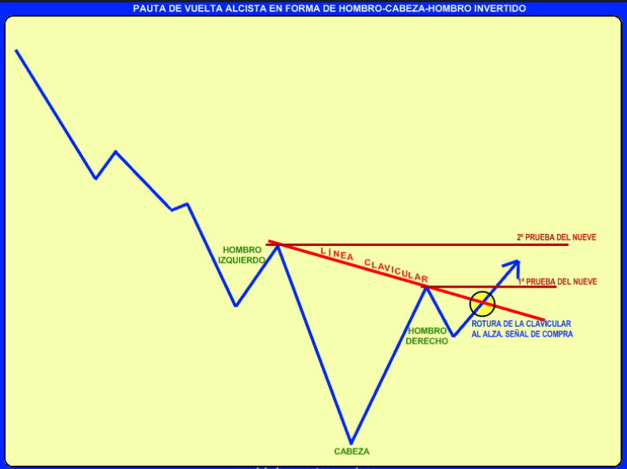

Año 2019
Examen diciembre
- Una empresa del sector alimentación cotiza a 50 € y tiene un BPA de 4 €. El PER medio del sector es de 13. ¿Qué podemos deducir de estos datos?
Que 13 es un nivel de PER difícilmente sostenible.
Esta empresa cotiza con prima respecto al sector.
El PER relativo del sector debe estar sobrevalorado respecto al índice de referencia.
Esta empresa cotiza con descuento respecto al sector.
La respuesta correcta es la d.
Esta empresa cotiza con descuento respecto al sector.
- Señale que afirmación es verdadera respecto a la sociedad de inversión de capital variable (SICAV).
Una vez escriturado no existen límites en el capital de estas Sociedades.
Podría endeudarse en más de un 10% de su activo total.
No existen derechos preferentes en la ampliación de capital.
La cotización en Bolsa es optativa, pero muy conveniente para evitar la transparencia fiscal.
La respuesta correcta es la c.
Artículo 32. Concepto, estatutos sociales, capital social y acciones.
Son sociedades de inversión de capital variable las IIC de carácter financiero que adopten la forma societaria, de acuerdo con lo dispuesto en el artículo 29 de esta ley.
En los estatutos sociales debe recogerse necesariamente la designación del depositario así como la cifra de capital inicial. También se recogerá la cifra del capital estatutario máximo, expresando, en uno y otro caso, el número de acciones y, en su caso, las series, en que esté dividido el capital social y el valor nominal de aquéllas.
Las acciones representativas del capital estatutario máximo que no estén suscritas, o las que posteriormente haya adquirido la sociedad, se mantendrán en cartera hasta que sean puestas en circulación por los órganos gestores. Las acciones en cartera deberán estar en poder del depositario.
La sociedad deberá reducir obligatoriamente el capital, reduciendo el valor nominal de sus acciones en circulación, cuando el patrimonio social hubiere disminuido por debajo de las dos terceras partes de la cifra de capital en circulación, siempre que haya transcurrido un año sin que se haya recuperado el patrimonio. En igual proporción se reducirá el valor nominal de las acciones en cartera.
En el caso de que no existiesen bastantes acciones propias adquiridas por la sociedad para atender la obligación de vender sus propias acciones, la sociedad, en el plazo que se establezca, deberá poner en circulación acciones suficientes hasta alcanzar, si ello fuera necesario, el capital máximo estatutario establecido.
Cuando la sociedad no pueda atender las obligaciones anteriores por carecer de acciones en cartera y estar ya desembolsado el capital estatutario máximo, la sociedad declarará esta circunstancia como hecho relevante y su consejo de administración propondrá que se acuerde en la próxima junta ordinaria de accionistas el aumento de su capital estatutario.
El valor liquidativo de cada acción será el que resulte de dividir el patrimonio de la sociedad correspondiente a la serie a la que pertenezca por el número de acciones en circulación correspondiente a esa serie y, a efectos de su suscripción y recompra por la sociedad, se calculará con la periodicidad que se establezca reglamentariamente, en función de las distintas políticas de inversión y características de los accionistas.
Las acciones se emitirán y recomprarán por la propia sociedad a solicitud de cualquier interesado según el valor liquidativo que corresponda a la fecha de solicitud, pudiendo ser objeto de comercialización por la sociedad, directamente o a través de intermediarios habilitados, o en bolsa de valores pudiéndose, a tal efecto, percibir comisiones o descuentos a favor de aquélla.
La adquisición por la sociedad de sus acciones propias, entre el capital inicial y el capital estatutario máximo, no estará sujeta a las limitaciones establecidas sobre adquisición derivativa de acciones propias en la Ley de Sociedades de Capital. Por debajo de dicho capital mínimo podrá adquirir acciones con los límites y condiciones establecidos en la citada Ley de Sociedades de Capital.
9. La sociedad podrá poner en circulación acciones a precio inferior a su valor nominal, no siendo aplicable a este respecto lo dispuesto en la Ley de Sociedades de Capital.
Los accionistas de la sociedad no gozarán en ningún caso del derecho preferente de suscripción en la emisión o puesta en circulación de las nuevas acciones.
Quedan prohibidas las remuneraciones o ventajas de los fundadores y promotores reguladas en la Ley de Sociedades de Capital.
- No será de aplicación a las sociedades de inversión de capital variable lo dispuesto en el artículo 60 de la Ley del Mercado de Valores, relativo a las ofertas públicas de adquisición de valores.
FUENTE: https://www.boe.es/buscar/act.php?id=BOE-A-2003-20331
- En referencia a la Duración de un bono de renta fija, señale la respuesta correcta:
Mide el riesgo idiosincrático del bono dentro de la cartera.
Disminuye cuando aumentan la cuantía de los cupones que distribuye el título.
Disminuye cuando disminuye la cuantía de los cupones que distribuye el título.
La duración de un bono con cupones periódicos será igual al vencimiento del título.
La respuesta correcta es la b.
La Duración de un título de renta fija disminuye cuando aumentan la cuantía de los cupones que distribuye el título.
- Determine el precio actual en el mercado del siguiente título: Bono a 2 años exactamente para su vencimiento, TIR del 6,65%, reembolso a la par (con un nominal de 1.000€) y cupón anual del 5%.
1.915,20€
915,20€
970,02€
Ninguna de las respuestas anteriores es correcta.
La respuesta correcta es la c.
Primero tenemos que calcular el precio del bono con la fórmula
\[P_0=\sum_{ t=1}^{ n}\frac{C}{(1+r)^{t}}+\frac{N}{(1+r)^{t}}\] donde,
\(P_0\), es el precio entero de un bono o valor actual del mismo.
\(C\), Flujos a percibir por la tenencia de un bono (cupón).
\(C\), Rembolso a percibir por vencimiento del bono (Nominal).
\(r\), es la TIR.
\(t\), es el tiempo.
Calculamos,
\[P_0=\frac{50}{(1+0,0665)^{1}}+\frac{50}{(1+0,0665)^{2}}+\frac{1.000}{(1+0,0665)^{2}}=970,02\] O, lo que es lo mismo
\[P_0=\frac{50}{(1+0,0665)^{1}}+\frac{50+1.000}{(1+0,0665)^{2}}=970,02\] Con la calculadora financiera Casio FC200V, se calcularía de la siguiente forma:
Función: “BOND”
SET: “Annu/Term”
n = 2
RDV = 100 + EXE
CPN = 5 + EXE
PRC = 0 + EXE
YLD = 6,65 + EXE
Ahora, con el cursor, volvemos sobre “PRC” y pulsamos “SOLVE”.
Resultado:
PRC = -97,002 (precio excupón o precio limpio %)
INT = 0 (cupón corrido %)
CTS = -97,002 (precio entero %)
Luego, si convertimos el resultado (nos lo ofrece en % la calculadora) a euros, tenemos:
\[P_{euros}=97,002\cdot 10=970,02\]
El motivo de que de coincidan en este caso el precio limpio con el precio sucio del bono se debe a que amortizamos a la par y además, la fecha en la que llevamos a cabo la valoración del bono coincide exactamente con el día en el que se cobra el cupón (el enunciado dice “a 2 años exactamente para su vencimiento”, de forma que NO hay cupón corrido).
Hay que tener en cuenta que si el precio sucio del bono coincide con su precio limpio y, este es adquirido y amortizado a la par, la TIR coincidirá con el cupón nominal en la fecha de emisión del bono. Pero esto no ocurrirá una vez emitido y recomprado en “en el mercado” como ocurre en este caso
- Determine el beneficio por acción, estimado por el mercado bursátil, de una empresa que cotiza a 68,4 € con un PER de 18:
3,80
4,20
0,26
Ninguna de las respuestas anteriores.
La respuesta correcta es la a.
Según la fórmula del PER = Precio cotización/ BPA, despejamos el BPA y tenemos BPA = Precio de Cotización/PER. En nuestro caso BPA = 68,4/18 = 3,8 €.
- Dada la prima o precio de una opción, con fórmula de valoración debidamente consensuada y con referencias observables (precio del subyacente, precio de ejercicio, tiempo para vencimiento y tipo de interés de mercado monetario), ¿qué volatilidad podemos calcular de forma segura sin necesidad de ninguna base de datos?
Futura.
Prevista
Implícita.
Histórica.
La respuesta correcta es la c.
La volatilidad implícita es la que está descontando el mercado en la prima de la opción.
- Un inversor-especulador decididamente alcista, ¿qué estrategia utilizará de las seguidamente enunciadas?:
Venta de futuros.
Compra de futuros.
Compra de put.
Venta de call
La respuesta correcta es la b.
Si lo que quiere un inversor es especular y tiene expectativas alcistas sobre el mercado o sobre determinadas acciones comprará futuros. La estrategia ante expectativas alcistas consiste en comprar call o comprar futuros. La compra de futuros es una posición larga o alcista y además ofrece un alto grado de apalancamiento.
- Una opción put strike 10 € que vence dentro de 2 meses, si actualmente, el subyacente cotiza a 9,8 €, está:
ITM
OTM
Depende de la volatilidad del subyacente y del tipo de interés
ATM
La respuesta correcta es la a.
Una opción put strike 10 € que vence dentro de 2 meses, si actualmente, el subyacente cotiza a 9,8 €, estará ITM.
- ¿Qué tipo de put ofrece a su comprador prestaciones sobre la depreciación media del subyacente?
Europea
Lookback
Asiática.
Barrera.
La respuesta correcta es la c.
Las opciones europeas son aquellas que solo pueden ejercerse en la fecha de vencimiento de la misma. Las opciones asiáticas son aquellas cuyo precio depende de la revalorización media del activo subyacente.
- ¿Cuál de las siguientes opciones se puede considerar de modalidad “path dependent” o con memoria?
Forward start.
Asiática.
Digital o binaria.
Estándar europea.
La respuesta correcta es la b.
Porque el precio de la opción depende de la trayectoria del subyacente.
- Para un mismo bono, su tasa de rentabilidad efectiva a vencimiento es mayor cuando:
El tipo de interés de reinversión es igual a su TIR de adquisición.
Ninguna de las anteriores.
El tipo de interés de reinversión es superior a su TIR de adquisición
El tipo de interés de reinversión es inferior a su TIR de adquisición.
La respuesta correcta es la c.
La TIR es una buena medida de la rentabilidad a vencimiento de un bono si se reinvierten los cupones a una tasa igual a la propia TIR. Si la reinversión se hace a tipos superiores, la rentabilidad efectiva a vencimiento será superior a la TIR de adquisición.
- Dentro de las estrategias de Valor Relativo podemos encontrar:
Trend Followers.
Market Neutral.
Long-Short Equity.
Arbitraje de Fusiones.
La respuesta correcta es la b.
Dentro de las estrategias de Valor Relativo podemos encontrar las siguientes: Market Neutral, Arbitraje de Convertibles y Arbitraje de Renta Fija.
- ¿Cuál de las siguientes estrategias no se considera Event Driven?
Arbitraje de Fusiones.
Distressed Securities.
Global Macro.
High Yield.
La respuesta correcta es la c.
La estrategia Global Macro no pertenece a la estrategia general de Event Driven. Global Macro se integra dentro de la estrategia general de oportunidad.
- El ratio de información es de 2,5; el tracking error 4; el ratio de sharpe 0,5; siendo la volatilidad 20%, entonces:
El fondo no ha estado bien gestionado pues la libertad de gestión, tracking error, no compensa el riesgo asumido al ser el ratio de Sharpe inferior.
El exceso de rentabilidad obtenido por el partícipe frente al activo sin riesgo es de 1.000 pb (10%).
El fondo ha obtenido una rentabilidad del 15%, si el activo sin riesgo se cifra en un 6%.
La Beta del fondo es uno.
La respuesta correcta es la b.
- El coeficiente Beta de una cartera mide:
La variación que experimenta la rentabilidad de la cartera frente a una variación unitaria en la rentabilidad de su índice.
La rentabilidad esperada de la cartera.
La variación que experimenta la rentabilidad del índice frente a una variación unitaria en la rentabilidad de la cartera.
La volatilidad de la cartera.
La respuesta correcta es la a.
La Beta mide el porcentaje de rentabilidad atribuible al mercado. Dado un índice, la beta de la cartera es la definición de la respuesta c.
- Aplicando el modelo CAPM para una tasa libre de riesgo del 4%, y sabiendo: que se ha seleccionado un índice del que se espera obtener una rentabilidad esperada del 20%, con una volatilidad del 30%, y que el índice seleccionado está formado por 4 títulos A, B, C y D en las proporciones del 20%, 25%, 35% y 20% respectivamente. ¿Qué podemos afirmar respecto a las carteras eficientes del modelo CAPM?
Que ninguna de ellas tendrá riesgo nulo.
Que todas ellas tendrán un 25% invertido en cada uno de los 4 títulos.
Que no puede existir una cartera eficiente con una rentabilidad esperada superior al 20%.
Que todas las carteras eficientes tendrán invertida la misma proporción en el título A que en el título D.
La respuesta correcta es la d.
Cuando se refiere a eficiente se habla de cartera óptima de mercado, es decir aquella de la frontera eficiente donde hace tangencia la línea SML. En ese caso, sea cual sea la riqueza invertida en dicha cartera, la proporción en nuestro portfolio de los títulos A y D será la misma.
- ¿Qué afirmación es errónea?
La gestión pasiva y activa se pueden combinar.
La estrategia de gestión pasiva suele ser mejor en mercados eficiente.
La estrategia de gestión pasiva suele ser más barata que la activa.
La gestión pasiva siempre es mejor a la activa.
La respuesta correcta es la d.
En muchas ocasiones la gestión activa logra batir a los índices de referencia
- La última etapa en un proceso de planificación financiera personal es:
Revisión del plan.
Implementar una estrategia para la consecución de los objetivos.
Establecer un plan financiero.
Definir los objetivos.
La respuesta correcta es la a.
Las fases del proceso de planificación financiera son:
Fijación de objetivos personales.
Cuantificación de los objetivos personales.
Situación financiera personal.
Comparar objetivos con los recursos del inversor.
Plan de ahorro e inversión.
Seguimiento y revisión periódica.
- El horizonte temporal de la inversión de un cliente:
Es directamente proporcional a la edad del cliente.
Ninguna de las respuestas es correcta.
Es proporcional al vencimiento del producto financiero en el que se invierte.
Siempre es directamente proporcional a la rentabilidad esperada.
La respuesta correcta es la b.
El horizonte temporal es el tiempo que debe transcurrir entre la inversión y el objetivo (momento en el que prevemos usar el capital.). De esta forma, se puede clasificar como:
Corto Plazo: para periodos de tiempo normalmente inferiores al año.
Medio Plazo: para periodos de tiempo entre 1 y 5 años.
Largo Plazo: para periodos de tiempo, generalmente, de más de 5 años.De tal manera que el vencimiento de un producto determinado puede coincidir o no con el horizonte temporal de la inversión.
Adicionalmente, el horizonte temporal no es proporcional a la edad del cliente o a la rentabilidad sino que tiene que ver con el plazo o momento en el que necesitamos el dinero.
- La planificación financiera personal básicamente consiste en:
Un producto de inversión.
Acertar en el timing de las inversiones del cliente.
Decirle al cliente donde invertir.
Integrar las distintas estrategias para cada objetivo financiero del cliente.
La respuesta correcta es la d.
La planificación financiera es un proceso que integra las distintas estrategias con los objetivos de los clientes. Trata de diseñar, desarrollar y seguir una estrategia que permita al inversor alcanzar sus objetivos, dirigiendo las decisiones de ahorro e inversión hacia la consecución de los mismos (rentabilidad).
- En el objetivo de optimización de la jubilación, deberemos:
Analizar los instrumentos financieros disponibles y más adecuados.
Todas las anteriores son correctas.
Integrar este objetivo en el resto de objetivos financieros que nos planteamos.
Tener en cuenta la posible pérdida de poder adquisitivo de nuestra moneda.
La respuesta correcta es la b.
Uno de los objetivos que más importantes al ser común a la generalidad de las personas es la planificación de la jubilación. En la planificación financiera han de integrarse todos los objetivos del inversor ya que de nada serviría tener en cuenta sólo este objetivo y olvidar el resto (educación de hijos, compra de vivienda, etc.). Al ser un proceso a largo plazo el efecto de la inflación en los ingresos y gastos tiene que ser considerado ya que es muy importante. Además habrá que analizar los productos y distribución de activos que más se adecuan a la rentabilidad necesaria según el estudio realizado y al perfil de riesgo del cliente.
- Indique sobre que magnitud gira el gravamen del Impuesto sobre Sucesiones y Donaciones en las adquisiciones mortis causa:
Sobre la porción individual de cada causahabiente en la masa hereditaria neta.
Sobre la totalidad de la masa hereditaria.
Sobre el valor de todos los bienes de la herencia.
Sobre el caudal relicto.
La respuesta correcta es la a.
La base imponible se define como el valor neto de la participación individual de cada sujeto pasivo en el caudal hereditario y se determina de la siguiente manera:
- Se calcula:
• El valor real de los bienes y derechos, que constituyen el inventario de la herencia. En el caso de bienes en gananciales se computarán por la mitad de su valor.
• Los bienes adicionables.
• El ajuar doméstico.
- Se determinan las:
• Cargas.
• Deudas.
• Gastos deducibles.
- Se calcula la masa hereditaria neta restando al valor de los bienes determinados en el punto 1, las cargas, deudas y gastos calculados en el punto 2.
- Se establece la porción hereditaria individual en función de las disposiciones testamentarias o, en caso de no existir testamento, en función de las normas legales.
- Se añaden las cantidades percibidas por cada beneficiario de seguros de vida.
- Cuando como consecuencia del fallecimiento del asegurado, el cónyuge beneficiario percibe una cierta cantidad procedente de un contrato de seguro de vida, ¿tiene el beneficiario derecho a alguna reducción en el impuesto de sucesiones?:
Tiene derecho a una reducción del 75% de la cantidad percibida.
Tiene derecho a una reducción del 100%, pero con límite.
Tiene derecho a una reducción del 100% de la cantidad percibida.
No tiene derecho a reducción alguna.
La respuesta correcta es la b.
El beneficiario tiene derecho a una reducción del 100% con un límite.
- El impuesto sobre sucesiones y donaciones es aquel:
- De naturaleza directa y subjetiva que grava los incrementos patrimoniales obtenidos a título oneroso por las personas físicas.
- De naturaleza directa y subjetiva que grava los incrementos patrimoniales obtenidos a título lucrativo por las personas físicas.
- De naturaleza indirecta y subjetiva que grava los incrementos patrimoniales obtenidos a título lucrativo por las personas físicas.
- Ninguna de las respuestas es correcta.
La respuesta correcta es la b.
- Los fondos de inversión inmobiliaria están regulados por:
Dirección General de Seguros.
Ninguna de las anteriores.
CNMV.
Banco de España.
La respuesta correcta es la c.
- El número mínimo de partícipes en los Fondos de Inversión Inmobiliarios es:
25 partícipes. Además esta cifra ha de conseguirse en el plazo de 1 año desde la inscripción del fondo en la CNMV.
100 partícipes. Además esta cifra ha de conseguirse en el plazo de 3 años desde la inscripción del fondo en la CNMV.
100 partícipes. Además esta cifra ha de conseguirse en el plazo de 1 año desde la inscripción del fondo en la CNMV.
Ninguna de las anteriores es correcta.
La respuesta correcta es la c.
100 partícipes. Además esta cifra ha de conseguirse en el plazo de 1 año desde la inscripción del fondo en la CNMV.
- ¿Cuál es el importe de la cuota mensual a pagar al final de cada mes, para un préstamo hipotecario otorgado en las siguientes condiciones?
- Importe del préstamo: 245.000 euros
- Tipo de interés nominal: 4,85%
- Plazo de amortización: 30 años.
- Sistema de amortización francés.
1.277,36 euros.
1.294,18 euros.
1.292,84 euros.
722,76 euros.
La respuesta correcta es la c.
1.292,84 euros
- La duración mínima de los contratos de leasing:
3 años para los bienes muebles y 6 para los inmuebles.
2 años para los bienes muebles y 10 para los inmuebles.
No existe duración mínima para este tipo de contratos.
5 años para los bienes muebles y 15 para los inmuebles.
La respuesta correcta es la b.
La duración mínima de los contratos de leasing es 2 años para los bienes muebles y 10 para los inmuebles
- Respecto de los fondos de inversión inmobiliaria:
Las comisiones aplicables son libres.
No requieren coeficiente de liquidez.
No es obligatorio que exploten los inmuebles adquiridos en régimen de alquiler.
Deben garantizar la posibilidad de reembolso al partícipe al menos una vez al año.
La respuesta correcta es la d.
Deben garantizar la posibilidad de reembolso al partícipe al menos una vez al año (conocido como ventana de liquidez).
- ¿En qué momento se genera una señal de venta mediante el indicador Estocástico (%K)?
Cuando las Bandas de Bollinger se cruzan a un nivel superior a %K
Cuando el RSI de forma ascendente corta a %D
Cuando la línea %K de forma descendente corta a %D
Cuando la línea %K de forma ascendente corta a %D
La respuesta correcta es la c.
Se produce una señal de venta cuando la línea del Estocástico %K, corta en sentido descendente a su media móvil, %D, sobre la zona de 80, con ambas líneas en sentido descendente y gráfico de precios descendente.
- La empresa X cotiza a 16 € en el mercado y su PER es de 8x. Si los beneficios cayeran un 20%, ¿qué impacto tendría en su PER?:
El PER subiría un 25%.
El PER subiría un 20%.
El PER no variaría.
El PER bajaría un 20%.
La respuesta correcta es la a.
- El tipo de análisis que tiene en cuenta el entorno desde lo más general hasta lo más particular de los mercados se denomina:
Análisis Top down.
Análisis fundamental.
Completo del entorno o full analysis.
Análisis Bottom-up.
La respuesta correcta es la a.
- Si tenemos una opción put con strike 10 € que vence dentro de 2 meses, y si actualmente, el subyacente cotiza a 9,8 €, está:
ATM.
ITM
Depende de la volatilidad del subyacente y del tipo de interés.
OTM
La respuesta correcta es la b.
El valor intrínseco será: VI = máx. (0, K – S) = máx. (0, 10 – 9,8) = máx. (0, 0,2) = 0,2 > 0. Por tanto, la opción put está ITM ya que si ejerciéramos tendría valor. La posición de la opción (ITM, ATM u OTM) depende del strike y de la cotización del subyacente. Nos están preguntando por el valor intrínseco, que no depende ni de la volatilidad ni del tipo de interés. Al estar cotizando el subyacente por debajo del precio de ejercicio, la put está In The Money.
- ¿Qué valor tendrá la siguiente opción call barrera (Knock in y up & in) al llegar al vencimiento?
- Precio de ejercicio: 75
- Precio de la barrera: 80
- Cotización actual: 90
0
Ninguna de las anteriores
10
15
Como la cotización se encuentra por encima, se activa la barrera y existe la opción.
La respuesta correcta es la d.
El valor será Cotización – Strike = 90-75 = 15. En este caso, al haber barrera de Knock in, significa que la opción aparece si toca esa barrera.
- ¿Cuál es el valor de un futuro sobre IBEX 35 con vencimiento dentro de tres meses si el subyacente cotiza hoy a 7.000, el tipo libre de riesgo es del 2%, la volatilidad implícita es del 30% y no se espera que el subyacente pague dividendos?
7.012,82
7.035
6.965,5
7.000,35
La respuesta correcta es la b.
- Contrato financiero sobre acciones donde como cliente me aseguran un interés especialmente elevado, pero me obligan a comprar acciones en el caso de que estén cotizando al vencimiento del contrato por debajo de una determinada cotización ¿qué productos individuales encontramos al diseccionar dicho contrato como clientes de nuestra entidad financiera?
Depósito bancario convencional más put vendida.
Depósito bancario convencional más call comprada.
Depósito bancario convencional más call vendida
Depósito bancario convencional más put comprada.
La respuesta correcta es la a.
De las cuatro opciones, la única que obliga a comprar es la venta de put. Eso sucederá si la cotización termina por debajo del strike.
- Con un grado de apalancamiento de 16x, ¿qué variación debe experimentar el precio de un contrato de futuros que tenemos comprado para conseguir un 150% de la rentabilidad absoluta sobre el depósito aportado?
-24%
9,375%
-9,375%
24%
La respuesta correcta es la b.
\[16=\frac{150}{x}\quad :\quad x=\frac{75}{8}\quad \left(\mathrm{Decimal}:\quad x=9.375\right)\]
- Si la duración de una cartera de renta fija es de 6,5 y el horizonte temporal del inversor es de 5 años, podemos afirmar que:
Nada de ello puede inferirse
El inversor está asumiendo un menor riesgo de precio con relación a una cartera perfectamente inmunizada.
La cartera esta perfectamente inmunizada.
Para inmunizar es necesario reducir la duración de la cartera.
La respuesta correcta es la d.
Inmunizar una cartera consiste en aislarla de los movimientos de los tipos de interés. La inmunización se produce cuando la duración de la cartera coincide con el horizonte temporal.
- ¿Cuál de las siguientes afirmaciones referidas al índice de Sharpe (Sharpe ratio) es correcta?
El índice de Sharpe es representable mediante una recta que generalmente se halla ligada a la totalidad de la frontera eficiente.
En el índice de Sharpe se halla implícito un concepto de diversificación que se refiere a la diversificación entre actividades arriesgadas y actividades sin riesgo.
En la construcción del índice de Sharpe se admite hipotéticamente la existencia de límites al uso del apalancamiento.
El índice de Sharpe considera la correlación existente entre la actividad financiera objeto de examen y las demás actividades financieras ya presentes en la cartera del inversor.
La respuesta correcta es la b.
Se trata de una combinación entre la cartera óptima del mercado y el activo libre de riesgo.
- ¿Cuál de los siguientes efectos no estaría incluido de forma concreta en el riesgo sistemático?:
Mejora en la cuenta de resultados de una empresa.
Subida de la tasa de impuestos sobre dividendos.
Subida de los tipos de interés del Banco Central Europeo.
Actos terroristas.
La respuesta correcta es la a.
Sólo la respuesta c afecta específicamente al valor en concreto siendo fuente de riesgo específico, no sistemático o diversificable.
- Señala la respuesta incorrecta acerca de la beta:
Se utiliza para el cálculo del ratio de Treynor
Un fondo de gestión pasiva tiende a tener beta cercana a 1
Beta > 1 nos indica que el fondo es defensivo
Se trata de una medida de correlación
La respuesta correcta es la c.
Es la respuesta falsa que buscábamos. Si la beta de un fondo es superior a 1 decimos que el fondo es agresivo, es decir cuando el índice sube, el fondo lo hace en mayor cantidad y viceversa en caso de pérdidas.
- Un fondo de inversión ha tenido una revalorización en 3 años del 138%. ¿Cuál ha sido la rentabilidad anual?
28,80 %
12,40 %
46 %
33,51 %
La respuesta correcta es la d.
Planteamos la siguiente ecuación donde la incógnita es la TGR:
\[(1+TGR)=1+1,38\]
Y despejando, tenemos:
\[TGR=0,335136\]
- La balanza de pagos de un país es un indicador económico de:
Precios.
Demanda.
Renta.
Monetario.
La respuesta correcta es la b.
La clasificación de los indicadores económicos por su naturaleza muestra las siguientes categorías:
actividad económica,
inflación,
política monetaria,
política fiscal y
coyuntura económica internacional.
Los indicadores de actividad económica son aquellos que miden la capacidad de generación de riqueza de los diversos sectores productivos de la economía, el comportamiento de los consumidores, la evolución del sector exterior, la inversión en bienes de equipo, etc. Dentro de este grupo se distinguen tres subcategorías:
indicadores de oferta,
indicadores de demanda e
indicadores de sentimiento.
Según el momento de cambio de tendencia en el ciclo económico, podemos distinguir entre:
indicadores de coyuntura anticipados,
indicadores de coyuntura coincidentes e
indicadores de coyuntura retrasados.
Podemos considerar el PIB como un indicador de coyuntura de primer orden o como el indicador de coyuntura más completo, dado que incluye la actividad generada por todos los agentes económicos de un país, tanto desde el punto de vista de la oferta (producción de bienes y servicios correspondiente al sector primario, secundario y terciario), como desde el punto de vista de la demanda (consumo, inversión, gasto público y exportaciones netas). Esta cualidad se desprende del equilibrio entre el PIB de oferta y el PIB de demanda que debe darse en cualquier economía.
A pesar de que el saldo de la balanza de pagos es siempre cero, los diferentes tipos de transacciones recogidos en este documento se estructuran en tres grandes cuentas o subbalanzas, que presentan saldos con superávit o déficit. Estas tres balanzas son:
Balanza por cuenta corriente
Balanza de capital
Balanza financiera
- Si 1 de marzo de 2025 se compró un bono con cupón del 4,25% emitido el 1 de marzo de 2024 que vence el 28 de febrero de 2028. Si en activos similares el mercado se mueve en rentabilidades del 3,50% el precio en porcentaje sobre el nominal es aproximadamente:
100%
100,75%
102,11%
102.75%
La respuesta correcta es la c.
En este caso nos piden calcular el precio, pero NO indica de qué precio se trata, si es el precio entero (o sucio), o por el contrario el precio excupón (o de cotización); luego eso puede generar dudas. No obstante, si nos fijamos en este caso concreto a pesar de darnos fechas concretas (y NO térmi) ambos precios coinciden (PS=PL), ya que no existe cupón corrido debido a que la adquisición del título se lleva a cabo justo en el momento del pago del 1 er cupón (1).
Por otra parte, hay que recordar que se coge la fecha de compra para el cálculo, y NO la fecha de emisión …ya que no se adquiere en la emisión como ya se ha comentado, sino que es adquirido justo al finalizar el primer año (comienzo del segundo año). Luego si lo resolvemos con la calculadora financiera Casio FC200V tenemos que:
Función: “BOND”
SET: “Annu/Date”
d1 = 01032025+ EXE
d2 = 28022028 + EXE
RDV = 100 + EXE
CPN = 4,25 + EXE
PRC = 0 + EXE
YLD = 3,5% + EXE
Ahora, con el cursor, volvemos sobre “PRC” y pulsamos “SOLVE”.
Resultado:
PRC = - 102,11% (precio: excupón, o de cotización)
INT = - 0,00 (cupón corrido)
CTS = - 102,11% (precio entero o sucio)
- Se entiende por Mercado Primario:
El mercado en el que tiene lugar la colocación de activos del emisor al Inversor, objeto de una única negociación.
El mercado en el que los adquirentes de títulos los compran no al emisor sino a sus propietarios.
El mercado en el que se negocian títulos de importe superior a 1.000 euros.
El mercado en el que solo se ejecutan órdenes de compra y venta cuando hay el% de variación respecto al precio de apertura.
La respuesta correcta es la a.
Según la clasificación de los mercados financieros, en la fase de negociación de los activos podemos distinguir entre:
Primarios
- Son aquellos en los que los activos financieros son de nueva creación. Esto significa que un activo sólo puede ser objeto de negociación en el mercado primario una sola vez, es decir cuando se emite y alguien lo compra. Por ejemplo: la ampliación de capital de una empresa mediante la emisión de acciones constituye una operación del mercado primario.
Secundarios
- Aquellos mercados en los que se comercia con los activos financieros una vez ya emitidos, cambiando la titularidad de los mismos. Se produce un trasvase de fondos que no tiene incidencia en la tesorería del emisor de los activos financieros. Los mercados secundarios suelen ser de negociación y las operaciones se denominan compraventa.
- Según el Código ético de EFPA, en lo que se refiere al principio de transparencia, ¿Qué tipo de información es necesario proporcionar siempre al cliente en el desarrollo de la función de consultoría financiera?
Advertir que tratará la información del cliente con la debida confidencialidad.
Informar de los eventuales conflictos de intereses.
Informar que se actúa con la máxima competencia y atención debida.
Informar que tiene los conocimientos para cumplir con las tareas asumidas.
La respuesta correcta es la b.
El Código
- Integridad:
Los Miembros realizarán labores de planificación o asesoramiento financiero en el mejor interés del público debiendo actuar con el máximo grado de integridad en cualquiera de sus actividades profesionales.
- Sobre los Miembros pesa la responsabilidad de comportarse de forma acorde con su profesión, sirviendo al interés público, y haciendo honor a la especial confianza que el público otorga a un Miembro de la EFPA, así como comportándose con dignidad a la hora de llevar a cabo su trabajo. Como depositarios de la confianza pública, los Miembros deberán aplicar el máximo sentido de justicia, integridad y claridad en todas sus actuaciones profesionales.
- Transparencia:
Los Miembros siempre deben ser objetivos o explicar a los clientes las razones en los casos que la objetividad esté comprometida, salvo cuando resulte obvio para el cliente que el Asesor representa a su empresario en asuntos vinculados a esta representación.
- Un Miembro deberá mantener su objetividad y honestidad intelectual, debiendo revelar todo conflicto de intereses en el ejercicio de sus actividades profesionales. En aquellos casos en los que los compromisos con sus empresarios hagan imposible esa objetividad, se deberá explicar claramente la situación a los clientes. Cuando se desempeñen funciones de asesoramiento financiero, los Miembros deben informar al cliente si actúa de forma independiente o representa a una empresa.
- Primacía del Interés del Cliente:
Los Miembros siempre deben anteponer los intereses del cliente a los propios. + En cada relación con un cliente, el Miembro deberá poner el interés del cliente por encima del suyo propio. El Miembro aceptará la responsabilidad de poner en conocimiento del cliente o de aquellas partes interesadas, así como de tomar las medidas necesarias, en aquellas ocasiones en las que detecte la existencia de circunstancias, influencias negativas o conflictos de intereses que puedan afectar a la objetividad de sus juicios.
- Atención Debida:
Los Miembros deberán proporcionar sus servicios profesionales con la máxima competencia y atención debida.
- Un Miembro deberá trabajar para obtener, y animar a los demás a que obtengan, las cualificaciones y conocimientos necesarios, debiendo además cumplir los estándares y códigos éticos y profesionales, así como trabajar para mejorar la calidad del servicio y con ello el reconocimiento de su profesión, y desarrollando sus servicios dando lo mejor de sí mismo.
- Formación Continua:
Los Miembros continuarán formándose para mantener los máximos niveles de preparación y competencia profesional.
- Un Miembro deberá obtener, mantener y utilizar los conocimientos y cuidado debidos marcados por los estándares y que sean relevantes para el ejercicio de su actividad como planificador o asesor financiero, o para cualquier otra actividad dentro de su labor profesional.
- Confidencialidad:
Los Miembros deben tratar confidencialmente la información de los clientes según la legislación nacional y cualquier otra norma derivada de su empleo.
- Un Miembro debe solicitar toda la documentación que considere relevante para satisfacer las necesidades del cliente y respetar la confidencialidad de toda la información obtenida en el desempeño de sus servicios profesionales salvo que la ley exija lo contrario, o en el transcurso de un conflicto civil.
- Profesionalidad:
Los Miembros actuarán de forma profesional y se comportarán honrando y dignificando su profesión.
- Un Miembro deberá actuar de manera honesta y cortés hacia toda persona con la que tenga relaciones profesionales, debiendo trabajar para mejorar la imagen de su profesión entre la comunidad en la que él o ella sirva.
- Diligencia:
Los Miembros deberán actuar diligentemente a la hora de descargar de responsabilidades a sus clientes y público en general, debiendo proporcionar sus servicios de forma rápida, cuidadosa y minuciosa.
- La Diligencia debida requiere que el Miembro planifique y supervise de forma exhaustiva cualquier actividad profesional de la que él o ella sea responsable.
- Conocimientos y Tareas Asumidas:
Los Miembros sólo deberán asumir tareas para las que cuenten con el necesario conocimiento, experiencia, habilidades y competencia general.
- El Miembro deberá reconocer los límites de su competencia profesional así como en los que su actuación está autorizada, y actuar dentro de ellos. Los Miembros deberán reconocer aquellas circunstancias en las que su conocimiento y competencias no sean suficientes para realizar la tarea en cuestión e informar de ello a su cliente.
- Cumplimiento de todas las leyes:
Los Miembros deberán cumplir con todas las leyes y regulaciones donde ejerzan su actividad o tenga consecuencias la misma.
- Un Miembro debe conocer y cumplir las principales leyes y regulaciones que ordenan la práctica profesional, además de este Código Ético y cualquier Código establecido por las Autoridades Reguladoras.
- Comisiones y Costes
Los Miembros deberán explicar claramente las comisiones y esquema de costes acordados con el cliente antes de establecer un contrato de servicio.
- Un Miembro deberá ser capaz de explicar el motivo y bases de las comisiones que carga y de cualquier otra remuneración que reciba por el ejercicio de sus servicios en nombre del cliente.
- Explicación del Código Ético a los Clientes
Los Miembros deberán proporcionar una copia de este Código Ético a sus clientes cuando lo soliciten, y explicar aquellos puntos en los que surjan dudas sobre el significado de sus disposiciones.
- Un Miembro deberá ser capaz de explicar cómo se aplican las estipulaciones del Código Ético en el ámbito de su relación con el cliente, y cuáles son sus obligaciones y papel respecto al cliente, respecto a su empleador o empresario, y respecto a la EFPA.
- Incentivar su Aceptación
Los Miembros deberán incentivar la aceptación de este Código Ético y de las ideas que defiende.
- Se anima a todos los planificadores y asesores financieros a promocionar este Código Ético, y poner en conocimiento de otros colegas y de los clientes las ideas que representa. La mejora, tanto interna como externa, de la imagen de la Profesión y de nuestro compromiso con la excelencia, es tarea y responsabilidad de todos los profesionales.
- En el caso de que el Banco Central Europeo (BCE) decida vender títulos de Deuda Pública de su cartera, conseguirá:
Un aumento de la base monetaria.
Una reducción de la base monetaria.
Un aumento del precio de los títulos de Deuda Pública.
Una reducción en la oferta de los títulos de Deuda Púbica.
La respuesta correcta es la b.
Cuando el BCE vende títulos de Deuda Pública de su cartera a los bancos comerciales en el mercado abierto, se produce una retirada de dinero de la economía (reducción de la base monetaria). En este caso, el Banco Central entrega e Deuda Pública de su cartera a los bancos comerciales a cambio de dinero (los bancos pagan el precio de los bonos). Esta operación supone una disminución de los depósitos de los bancos comerciales en el Banco Central (disminuye la partida de reservas legales en el pasivo del BC), disminuyendo así la base monetaria y por tanto la oferta monetaria.

- Un seguro de vida-ahorro es:
Un producto de inversión.
Un producto de prevención.
Un producto de jubilación.
Un producto de cobertura de riesgo.
La respuesta correcta es la a.
La principal finalidad de los seguros de vida-ahorro (IBIP’s ) es facilitar el ahorro (no cubrir ningún riesgo específico). Todo ello con la posibilidad de conseguir recuperar parcialmente el capital sin coste y paralizar las aportaciones si fuera necesario.
¿Qué son los Productos de Inversión basados en Seguros o IBIP’s ?
“Son los productos de seguro que ofrece un valor de vencimiento o de rescate expuesto total o parcialmente, y directa o indirectamente, a las fluctuaciones del mercado”
Es decir, son los productos cuyo valor final o rescate tiene al menos una parte variable y, por tanto, no se puede determinar al contratar el seguro.
La regulación en materia de PRIIPS está Inspirada en la normativa MIFID en la que se denominan en Ingles con las siglas “PRIIP” que significan “Packaged Retail and Insurance-based Investment Products” es decir, “Productos de Inversión basados en Seguros”.
¿Qué Seguros SÍ se incluyen en los IBIP’s?
Inicialmente se pensó que solo se debían incluir en lo que respecta a los seguros de Vida, a los seguros en los que el tomador asume el riesgo de la inversión (Unit Linked) como productos sustitutivos de las IIC o fondos de inversión
Pero posteriormente se ha extendido a otros productos de VIDA-AHORRO, como los seguros de vida con garantía de tipo de interés a vencimiento (pero con valor de rescate a valor de mercado de los activos asignados) y los seguros de vida en los que se garantiza un tipo de interés mínimo + una PB en función del resultado de las inversiones.
¿Qué Seguros NO se incluyen en los IBIP’s?
Quedan fuera de la regulación de IBIP’s y, por tanto, de la consideración de “Productos de Inversión basados en Seguros” los siguientes:
Los productos de seguro distintos del seguro de vida según lo dispuesto en el anexo de la Ley 20/2015, de 14 de julio (SEGUROS NO VIDA).
Los Contratos de seguro de vida en los que las prestaciones previstas en el contrato sean pagaderas únicamente en caso de fallecimiento o de situaciones de invalidez provocadas por accidente, enfermedad o discapacidad. (SEGUROS DE VIDA RIESGO, TAR, ACCIDENTES )
Productos de pensiones destinados a la jubilación (PPI, PPA, PLANES DE PPSE o PENSIONES DE EMPRESA)
- Una Letra del Tesoro a 6 meses (180 días) suscrita en el mercado primario a un tipo de interés medio del 4,75%, ¿qué precio debe tener?
97,680%
98,710%
955,6 euros
97,625%
La respuesta correcta es la a.
Utilizamos la fórmula del precio de una letra hasta un año (capitalización simple) para poder conocer el precio que debería tener la Letra:
\[P_0=\frac{100}{\left(1+i\cdot\frac{d}{360}\right)}\]
donde,
\(P_0\), es el precio de la letra, expresado en porcentaje sobre el nominal.
\(i\), es el tipo de interés en tantos por uno.
\(d\), es el número de días que ha mantenido el inversor la letra en su poder.
Donde al sustituir y calcular tenemos que:
\[P_0=\frac{100}{\left(1+0.0475\cdot \frac{180}{360}\right)}\]
\[P_0=97.6800\]
- El cálculo del dividend yield (rentabilidad por dividendo) hace referencia a:
La relación entre el precio de la acción y el beneficio por acción.
La relación entre dividendo por acción y el precio de la acción.
La relación entre dividendo por acción y el valor nominal de la acción.
La relación entre el dividendo por acción y el beneficio por acción.
La respuesta correcta es la b.
Para el cálculo del dividend yield (rentabilidad por dividendo) utilizamos la relación entre dividendo por acción y el precio de la acción:
\[Dividend\ Yield =\frac{DPA}{P_0}\]
- Si el tipo de cambio euro-dólar evoluciona al alza, por ejemplo pasa de EUR/USD 1,1214 a EUR/USD 1,1785, ¿cuál de los siguientes clientes, por su perfil de riesgo, se puede ver afectado en mayor medida?
Un exportador español, puesto que el dólar está subiendo frente al euro.
Un exportador español, puesto que el dólar está cayendo frente al euro.
Un importador español, puesto que el dólar está subiendo frente al euro.
Un Importador español, puesto que el dólar está cayendo frente al euro.
La respuesta correcta es la b.
Un exportador español vende sus productos en Estados Unidos y cobra en dólares, una vez cobre estos dólares lo que deberá hacer es venderlos y obtener euros, por lo que un exportador es vendedor de divisa extranjera y comprador de divisa doméstica.
Luego si el dólar se deprecia obtendrá menos euros por la mercancía, perdiendo así unos cuantos euros; si el dólar se aprecia obtendrá más euros por la mercancía, obteniendo así un beneficio extra.
Examen septiembre
- Ordena correctamente los pasos a seguir en un Plan de Inversión:
Diseño del plan, asignación de activos, constitución de la cartera, gestión del riesgo.
Diseño del plan, constitución de la cartera, gestión del riesgo, asignación de activos.
Gestión de riesgo, asignación de activos, constitución de la cartera, diseño del plan.
Constitución de la cartera, diseño del plan, asignación de activos, gestión del riesgo.
La respuesta correcta es la a.
Los pasos a seguir en un Plan de Inversión:
- diseño del plan
- asignación de activos
- constitución de la cartera
- gestión del riesgo.
- Teniendo en cuenta las siguientes características de un bono y suponiendo que la TIR va a subir 25 p.b. (puntos básicos):
Precio entero del bono: 115,21%
Duración corregida: 7,60
TIR: 4,25%
¿Cuál será la variación absoluta estimada que tendrá el precio del bono?
1,90 p.p.
2,05 p.p.
2,10 p.p.
2,19 p.p.
La respuesta correcta es la d.
En este ejercicio es muy imortante no confundir la fórmula que se muestra a continuación, que es la fórmula de la variación relativa del precio de un bono ante variaciones absolutas de la TIR,
\[\frac{\Delta P}{P}\simeq \frac{P_1-P_0}{P_0}\simeq \left(-D_{corregida}\right)\cdot\Delta TIR\]
con la fórmula que realmente tenemos que utilizar, que es la siguiente, y que describe la relación entre variaciones absolutas del precio y variaciones absolutas de la TIR:
\[\Delta P\cong - S \cdot \Delta TIR\]
donde S denota la sensibilidad, que se calcula del siguiente modo:
\[S={Duracion\,corregida }\cdot{Precio\,entero}\]
Nota: esta expresión se utiliza el caso de haber considerado la duración corregida a partir de la siguiente fórmula:
\[D_{corregida}=\frac{Duracion\,de\, Macaulay}{\left(1+TIR\right)}\cdot\frac{1}{100}\]
Sin embargo, en este caso parecen haber tomado la duración corregida con esta otra fórmula:
\[D_{corregida}=\frac{Duracion\,de\, Macaulay}{\left(1+TIR\right)}=\frac{D}{\left(1+TIR\right)} \]
Entonces la sensibilidad, necesariamente, debería expresarse así:
\[S= Duracion\,corregida \cdot \frac{Precio\,entero}{100}\]
Luego para resolver el ejercicio aplicaremos la relación existente entre variaciones absolutas del precio y variaciones absolutas de la TIR es:
\[\Delta P\cong - S \cdot \Delta TIR\]
Realizaremos la aproximación a través de la sensibilidad, como se ha indicado anteriormente, de modo que:
\[S= 7,60 \cdot \frac{115,21\%}{100}=8,75596\]
ahora, sustituimos en la fórmula y calculamos:
\[\Delta P\cong - 8,75596 \cdot 0,25\%=-2,18899\cong2,19\ p.p.\]
- Sí un gestor de carteras utiliza el análisis fundamental en sus decisiones cuál de los siguientes métodos utilizará:
Análisis técnico.
La revisión de los estados financieros.
La hipótesis débil de eficiencia del mercado.
La hipótesis fuerte de eficiencia de mercado.
La respuesta correcta es la c.
El análisis fundamental es uno de los dos métodos principales que se utilizan para analizar los activos de RV. El otro es el análisis técnico. Los inversores que emplean el análisis técnico obtienen toda la información que necesitan para operar desde los gráficos en los activos. En cambio, los inversores que se basan en el análisis fundamental se fijan en factores externos, ajenos a los movimientos del precio del propio activo.
El análisis fundamental consiste en utilizar diversos factores cualitativos y cuantitativos para evaluar un activo. En el caso de las acciones, puede tratarse de estudiar las cifras del informe de resultados de una empresa: ingresos, beneficios por acción, crecimiento previsto (descuento de flujos de caja) o márgenes de beneficio, por ejemplo. De modo que podemos entender que la revisión de los estados financieros es una técnica más que un método.
Luego, en esta pregunta parece que alude más a la Teoría de los Mercados Eficientes en el sentido que el método del analisis fundamental está basado en la crencia de que el mercado es ineficiente a corto plazo. De forma que analizando la información disponible de la empresa y sobre la economía en general, tratará de determinar el valor intrínseco de la compañía analizada para poder anticipar cuál será su comportamiento en bolsa y anticiparse así al posible movimiento del mercado.
Hay tres tipos de eficiencia en los mercados según la hipótesis de mercados eficientes:
Eficiencia débil: se basa en los precios históricos, que reflejan toda la información contenida en los precios pasados. Por lo que la información pasada (volumen y precios) no tienen ningún poder de predicción sobre el futuro precio de los valores, porque los precios son independientes de un periodo a otro. En un contexto de eficiencia débil de los mercados no se puede obtener rendimientos ajustados al riesgo utilizando análisis técnico (pero sí el análisis fundamental).
Eficiencia semi-fuerte: incorpora además, la información pública. Los valores se ajustan rápidamente cuando la información se hace pública. Por lo que los precios reflejan toda la información pública disponible. çEsto implicaría que no se podrían obtener rendimientos ajustados al riesgo mediante análisis fundamental (pero sí el análisis técnico).
Eficiencia fuerte: es la eficiencia que incorpora las dos anteriores y la información privada (interna). Los precios no sólo reflejan el histórico y la información pública, si no también toda la información que pueda obtenerse mediante el análisis de la empresa y de la economía. Esto implica que ningín tipo de inversor puede acceder a información relevante para los precios, por lo que nadie puede constantemente obtener rendimientos excesivos en el mercado (se hará gestión pasiva).
- ¿Qué periodo es el más adecuado para una media móvil?
Cualquier media móvil corta ya que generará más señales.
Dependerá de la volatilidad del activo y del horizonte de gestión del analista.
Las medias móviles a partir de 70 días son las únicas con señales fiables.
Es indiferente.
La respuesta correcta es la b.
El número de sesiones a utilizar en las medias móviles depende del horizonte temporal del inversor (analista), así como de la volatilidad del activo. Aunque podemos decir que las más utilizadas son:
14 sesiones. 70 sesiones. 200 sesiones.
Muchos analistas emplean estas tres medias en un mismo gráfico. Combinadas nos pueden dar señales de un cambio de tendencia. Cuando la de 14 está por encima de la de 70 y está a su vez por encima de la de 200 entenderemos que el valor está alcista.
Sin embargon no existen unos parámetros fijos para determinar qué medias son mejores, sino que depende de la de la volatilidad del activo, del horizonte de gestión y también de la experiencia del inversor (analista) con cada activo en particular.
- La formación bruta de capital fijo incluye:
| I. La inversión en bienes de equipo. |
| II. La inversión en construcción. |
| III. La variación de existencias. |
Solamente la II.
La I y la II.
La I y la III.
La I, II y III.
La respuesta correcta es la d.
La Formación Bruta de Capital Fijo (FBCF) es un concepto macroeconómico utilizado en las cuentas nacionales, como el Sistema Europeo de Cuentas (SEC).
La Formación Bruta de Capital comprende:
la formación bruta de capital fijo, es decir adquisiciones menos las disposiciones (cesiones) de activos fijos realizadas por los productores residentes durante un período determinado, más ciertos incrementos de valor de los activos no producidos derivados de la actividad productiva de las unidades de producción o las unidades institucionales. Los activos fijos son activos materiales o inmateriales obtenidos a partir de procesos de producción, utilizados de forma repetida o continua en otros procesos de producción durante más de un año.
la variación de existencias, que se mide por el valor de las entradas en existencias, menos el valor de las salidas y el valor de cualquier pérdida corriente de los bienes mantenidos en existencias.
las adquisiciones menos cesiones de objetos valiosos, siendo objetos valiosos aquellos bienes no financieros que no se utilizan principalmente para la producción o el consumo, ni se deterioran (físicamente) con el tiempo, y se adquieren o mantienen, principalmente como depósitos de valor.
- ¿Cuál de los siguientes parámetros no afecta al valor de una opción sobre acciones?
Volatilidad de la acción.
Rentabilidad esperada de la acción.
Tipo de interés libre de riesgo.
La fecha de vencimiento.
La respuesta correcta es la b.
A la fecha del vencimiento, el valor de una opción depende solamente de dos variables: el precio del activo subyacente y el precio de ejercicio. Sin embargo, antes del vencimiento, el valor de una opción depende de los siguientes factores:
Las variables fundamentales que influyen en el precio de la opción son:
1.- El Precio del Subyacente (S)
Esta siempre cambiando. Siempre hay precio de oferta y de demanda.
El precio del subyacente está en relación directa con el valor de una call, mientras que esta relación es inversa con el valor de una put; es decir, si aumenta el precio del subyacente el valor de la call aumenta y el la put disminuye.
2.- El Precio de Ejercicio ( K)
Es constante a lo largo de toda la vida del contrato. Un aumento en el precio de ejercicio (K) disminuye el valor de una Call y aumenta el valor de una Put.
3.- La Volatilidad del Subyacente
Es el parámetro mas importante y mas difícil de evaluar y que se comentara mas ampliamente posteriormente.
En principio, la volatilidad del subyacente es una medida de la dispersión de los precios futuros de dicho subyacente.
Por lo tanto una volatilidad alta nos dice que la rentabilidad que se obtendrá en el futuro variará dentro de un amplio intervalo, mientras que una volatilidad baja, significa que la rentabilidad diferirá poco del valor esperado.
Volatilidad cero supone que se puede prever el precio futuro de la acción con exactitud y este será igual al precio de hoy, revalorizado a la tasa de interés de activo sin riesgo, (en ausencia de dividendos).
La relación volatilidad - valor de la opción supone que tanto si la opción es de compra como de venta, su valor es tanto mayor cuanto mayor es la volatilidad prevista en el futuro para el subyacente a que se refiere, ya que el poseedor de una opción se beneficia o perjudica según sean las oscilaciones del precio del subyacente.
4.- Tipo de Interés
El tipo de interés que se aplica es siempre sobre el tiempo de vida de la opción. El tipo de interés que se aplica es el libre de riesgo.
El tipo de interés afecta al valor de las opciones, ya que el valor actual neto del precio de ejercicio a pagar en la fecha de expiración de la opción depende de los tipos de interés.
5.- Dividendos (D)
Si el subyacente percibe un dividendo, el precio del subyacente se ajusta para reflejar el dividendo pagado, es decir disminuye el precio del subyacente.
De esta manera, entre la fecha de adquisición de la opción y la fecha de ejercicio de la misma; el poseedor de una opción de compra lógicamente preferirá que la sociedad no pague dividendos o en su caso si los paga que estos sean de escasa cuantía; por el contrario, el poseedor de una put preferiría que la sociedad abone dividendos entre dichas fechas, ya que así el precio del subyacente en la fecha de ejercicio será menor.
6.- Tiempo hasta la fecha de Ejercicio
Es la fecha en la que el contrato finaliza. Es un dato fijo y cada mercado fija la fecha en la que expira dicho contrato.
El tiempo hasta el ejercicio afecta al valor de la opción a través de tres factores:
- Volatilidad:
Cuanto mayor es el tiempo hasta la fecha de ejercicio mayor la posibilidad de alteraciones en el precio del subyacente, por lo que es favorable para ambas posiciones.
- Precio de ejercicio:
A mayor tiempo de ejercicio menor es el valor actual neto del precio del subyacente. A mayor tiempo por lo tanto mayor valor de una call y menor valor de una put.
- Dividendos:
A mayor tiempo de ejercicio, mayores dividendos pagará la empresa, por lo que será negativo a la opción de compra y positivo para la opción de venta.
- ¿Cuál de los siguientes indicadores representa una medida absoluta en la performance de un fondo?
| I. Alfa de Jensen. |
| II. Ratio de Sharpe. |
| III. Ratio de Treynor. |
Solamente la I.
Solamente la II
Solamente la III.
Todas. La I, II y III.
La respuesta correcta es la a.
Medidas tradicionales de performance
Las más destacadas son el alfa de Jensen, la ratio de Treynor y la ratio de Sharpe.
La ratio de Sharpe tiene en cuenta la rentabilidad y el riesgo de los fondos sin hacer ninguna referencia a un índice de mercado. Las otras dos medidas sí tienen en cuenta índices de mercado.
Las ratios de Sharpe y Treynor son medidas relativas de performance y el alfa de Jensen es una medida absoluta.
- Dentro del proceso de planificación para la jubilación, ¿cuál de los siguientes aspectos es menos relevante?
Obtener una rentabilidad superior a la inflación.
Hacer una revisión periódica del plan.
Establecer claramente los objetivos.
Instrumentalizar las inversiones a través de fondos de pensiones.
La respuesta correcta es la d.
- Si un gestor desea reducir más eficientemente el riesgo de su cartera, deberá entonces selecionar activos que estén:
Correlacionados positivamente.
No correlacionados.
Alta correlación.
Correlacionados negativamente.
La respuesta correcta es la d.
- Una cartera ha obtenido una rentabilidad del 15% con una volatilidad del 18%, mientras que el índice de referenciaha obtenido una rentabilidad del 10%, con una volatilidad del 12%. Si esta cartera tiene un tracking-error de 9,85%, calcular la beta de dicha cartera:
1,50.
1,26.
1,00.
Con los datos suministrados no se puede obtener la beta de la cartera.
La respuesta correcta es la B.
Hay que recordar que el tracking-error describe la volatilidad de la diferencia de rentabilidad entre un fondo y su benchmark. Y viene dado por la siguiente expresión:
\[\sigma_{\alpha,p}=\sqrt{\sigma_p^2-(\beta_p^2\cdot \sigma_m^2)}\] Luego con los datos que nos dan en el enunciado, sustituimos en la expresión anterior y resolveremos por beta:
\[0,0985=\sqrt{0,18^2-(\beta_p^2\cdot 0,12^2)}=>\beta_p=1,2554810\approx 1,26\]
- Al fallecimiento de su padre, Mónica percibe una prestación de un seguro de vida que había sido suscrito hace seis años por su madre con cobertura de fallecimiento de su difunto esposo. ¿Qué impuesto se devenga como consecuencia del cobro de la prestación del seguro?
- Impuesto sobre la Renta de las Personas Físicas. Tributación como rendimiento del capital mobiliario en la base imponible del ahorro, al 19%.
- Impuesto sobre Sucesiones y Donaciones. Tributación al tipo fijo del 19%.
- Impuesto sobre la Renta de las Personas Físicas. Tributación como rendimiento del trabajo personal en la base imponible general, al tipo que resulte de las escalas progresivas de gravamen.
- Impuesto sobre Sucesiones y Donaciones. Tributación al tipo que resulte de la escala de gravamen.
La respuesta correcta es la d.
Los beneficiarios de un seguro de vida que cobren la prestación por fallecimiento del tomador/asegurado, tributarán por el Impuesto sobre Sucesiones y Donaciones (ISD), en su modalidad Sucesiones.
El ISD es un tributo cedido a las Comunidades Autónomas, que han establecido beneficios fiscales que reducen el importe efectivo de este gravamen en algunos casos de hasta en un 99%. Por ello, la tributación final de la prestación dependerá de la residencia fiscal del asegurado fallecido.
Debe destacarse que la normativa reguladora de este impuesto impide a la aseguradora pagar si los beneficiarios no han acreditado previamente el pago del impuesto. Para facilitar este trámite, se autoriza a la aseguradora a que libre cheques a nombre del organismo de recaudación correspondiente por el importe del impuesto asociado a la prestación (liquidación parcial).
- Las decisiones sobre los distintos objetivos que afectan al plan financiero de los clientes deben ser tomadas:
De manera coordinada entre los distintos objetivos.
De manera independiente entre los distintos objetivos.
En función de la evolución del mercado.
La decisión la toma de manera exclusiva el planificador financiero.
La respuesta correcta es la a.
- ¿Cuál será el Earning Yield Gap de un mercado que cotiza con un PER medio de 14,05 si la TIR de la deuda a 10 años es del 3,80%?
3,32%
5,46%
7,12%
10,25%
La respuesta correcta es la a.
\[EYG=\frac{1}{PER}-R_f=\frac{1}{14,05}-0,038=0,33174(3,32\%)\]
- ¿Qué tipo de Indicador es el “índice de utilización de la capacidad productiva”?
Indicador de oferta.
Indicador de demanda.
Indicador de precios.
Indicador de sentimiento.
La respuesta correcta es la a.
La capacidad de producción o capacidad productiva es el máximo nivel de actividad que puede alcanzarse con una estructura productiva dada. El estudio de la capacidad es fundamental para la gestión empresarial en cuanto permite analizar el grado de uso que se hace de cada uno de los recursos en la organización y así tener oportunidad de optimizarlos.
Los incrementos y disminuciones de la capacidad productiva provienen de decisiones de inversión o desinversión (por ejemplo, la adquisición de una máquina adicional). además se debe tener en cuenta la mano de obra, inventarios, entre otros
También puede definirse como cantidad máxima de producción, que se pueden obtener por la entidad en un período con la plena utilización de los medios básicos productivos bajo condiciones óptimas de explotación
Es un error muy común definir la capacidad de producción en función del resultado alcanzado (producción obtenida), ya que ello es consecuencia de aplicar los recursos disponibles a la producción de ciertos bienes o servicios. Si los recursos disponibles se orientan a producir ciertos bienes de baja productividad, los volúmenes de producción obtenidos serán más bajos que si se orientaran a producir ciertos bienes de más elevada productividad. Sin embargo, la capacidad de producción es la misma en ambos casos. Por lo tanto, resulta más conveniente definir la capacidad productiva a la disponibilidad de recursos para producir, los cuales pueden aplicarse a elaborar diferentes bienes y servicios, a decisión de los responsables de tomar las decisiones productivas.
15.¿Qué rentabilidad nominal se ha alcanzado en la siguiente operación de compra-venta de una opción call llevada al vencimiento y liquidada por diferencias?
Compra CALL “ATM” a 20 euros
Precio de ejercicio: 350 euros
Revalorización del subyacente (entre la compra y la liquidación final de la opción): 20%
+100%
+200%
+250%
+400%
La respuesta correcta es la c.
INGRESOS
\[100(acciones)\cdot [350\cdot (1+0,2)-350 ]= 7.000 \ euros \] GASTOS
\[1\ contrato\cdot 100\ acciones \cdot 20\ euros= 2.000 \ euros \]
RENTABILIDAD NOMINAL
\[\frac{7.000-2.000}{2.000}=0,25(250\%)\]
- Si la tasa libre de riesgo es del 2,75%, la rentabilidad media anual de un fondo ha sido del 7% y su índice Sharpe es igual a 3. ¿Cuál ha sido su volatilidad?
1,00%
1,42%
3,5%
4,7%
La respuesta correcta es la b.
\[S_p=\frac{E_p-R_f}{\sigma_p}\]
\[3=\frac{0,07-0,0275}{\sigma_p}=>\sigma_p=0,014167(1,42\%)\]
- Cuando se realiza una planificación para la jubilación, al determinar en el momento actual el déficit o gap de ingresos en el momento de la jubilación, ¿cuál de los siguientes factores NO hace falta tener en cuenta?:
Los gastos previstos a partir del momento de la jubilación.
El tipo de interés libre de riesgo a partir del momento de la jubilación.
La pensión de la Seguridad Social que se espera recibir a partir de la jubilación.
El tiempo que falta para la jubilación.
La respuesta correcta es la b.
- La beta de una acción expresa:
La correlación media entre la rentabilidad del título y la rentabilidad Los títulos de Deuda Pública.
La sensibilidad de la rentabilidad del título ante las fluctuaciones de los tipos de Interés.
La sensibilidad de la rentabilidad del título ante las variaciones del IPC.
La sensibilidad de la rentabilidad del título ante las variaciones del mercado en el que cotiza.
La respuesta correcta es la d.
La beta de una acción expresa la sensibilidad de la rentabilidad del título ante las variaciones del mercado en el que cotiza.
- En el Impuesto sobre la Renta de no Residentes, los cupones de una obligación del Estado percibidos por un residente de la Unión Europea que opera en España sin establecimiento permanente…
- Tributan en el citado Impuesto como rendimientos del capital mobiliario al tipo del 19%.
- Tributan en el citado Impuesto como ganancias patrimoniales al tipo del 19%.
- Están exentos de gravamen.
- Tributan en el citado Impuesto como rendimientos del capital mobiliario al tipo del 24%.
La respuesta correcta es la c.
En el Impuesto sobre la Renta de no Residentes, los cupones de una obligación del Estado percibidos por un residente de la Unión Europea que opera en España sin establecimiento permanente están exentos por tratarse de rendimientos derivados de la Deuda Pública.
Para ampliar información sobre las exenciones qué rentas obtenidas por los no residentes sin establecimiento permanente (EP) en España están exentas de tributación en el Impuesto sobre la Renta de no Residentes (IRNR) pincha aquí.
- Dada una cartera, con una rentabilidad esperada del 9%, volatilidad del 16% y una beta igual a 0,8. La rentabilidad esperada del mercado es del 12% y su volatilidad del 20%. Asumiendo un tipo de interés libre de riesgo del 3%, ¿cuál será el alfa de Jensen de la cartera?
-0,60%
-1,20%
+1,20%
+0,60%
La respuesta correcta es la b.
\[\alpha_p=E_p-\left[R_f+\left(E_m-R_f\right)\cdot\beta_p\right]\]
Donde,
\(\alpha_p\), es el alpha de Jensen.
\(E_p\), es la rentabilidad esperada de la cartera \(p\) (9%).
\(R_f\), es la rentabilidad del activo sin riego (3%).
\(E_m\), es la rentabilidad de la cartera de mercado (benchmark) (12%)
\(\beta_p\), es la beta (sensibilidad a los movimientos del mercado) de la cartera \(p\) (0,8%).
luego al sustituir y calcular tenemos que,
\[\alpha_p=0,09-\left[0,03+\left(0,12-0,03\right)\cdot0,8\right]=-0,012(-1,20\%)\]
Visto de otro modo,
Con los datos del enunciado calculamos la rentabilidad esperada para la cartera (según el modelo CAPM) que será:
\[E_p^{CAPM}=0,03+\left(0,12-0,03\right)\cdot0,8=0,102(10,2\%)\] Por tanto, la rentabilidad esperada para esta cartera es del 10,2%. Suponga ahora que como se dice en el enunciado el gestor ha obtenido una rentabilidad igual al 9%. Luego, el Alfa de jensen para este gestor será:
\[\alpha_p=E_P-E_p^{CAPM}=0,09-0,102=-0,012(-1,20\%)\] Luego, en base a nuestros cálculos, podemos interpretar que el gestor no ha sabido gestionar bien su cartera ya que, para el riesgo sistemático asumido, ha logrado obtener una rentabilidad menor que la teórica (según el modelo CAPM).
- Si 1 de marzo de 2025 se compró un bono con cupón del 4,25% emitido el 1 de marzo de 2024 que vence el 28 de febrero de 2028. Si en activos similares el mercado se mueve en rentabilidades del 3,50% el precio en porcentaje sobre el nominal es aproximadamente:
100%
100,75%
102,11%
102.75%
La respuesta correcta es la c.
En este caso nos piden calcular el precio, pero NO indica de qué precio se trata, si es el precio entero (o sucio), o por el contrario el precio excupón (o de cotización); luego eso puede generar dudas. No obstante, si nos fijamos en este caso concreto a pesar de darnos fechas concretas (y NO térmi) ambos precios coinciden (PS=PL), ya que no existe cupón corrido debido a que la adquisición del título se lleva a cabo justo en el momento del pago del 1 er cupón (1).
Por otra parte, hay que recordar que se coje la fecha de compra para el cálculo, y NO la fecha de emisión …ya que no se adquiere en la emisión como ya se ha comentado, sino que es adquirido justo al finalizar el primer año (comienzo del segundo año). Luego si lo reolvemos con la calculadora financiera Casio FC200V tenemos que:
Función: “BOND”
SET: “Annu/Date”
d1 = 01032025+ EXE
d2 = 28022028 + EXE
RDV = 100 + EXE
CPN = 4,25 + EXE
PRC = 0 + EXE
YLD = 3,5% + EXE
Ahora, con el cursor, volvemos sobre “PRC” y pulsamos “SOLVE”.
Resultado:
PRC = - 102,11% (precio: excupón, o de cotización)
INT = - 0,00 (cupón corrido)
CTS = - 102,11% (precio entero o sucio)
- Calcula el P/VC de una sociedad con los siguientes datos:
Recursos propios: 1.598,2 millones de euros.
Precio acción 80 euros.
Número de accione: 45 millones.
1,60.
2,25.
3,52.
4,56.
La respuesta correcta es la b.
La ratio precio-valor contable, o ratio P/VC, es una ratio financiera usada para comparar el precio de mercado actual de una empresa con su valor contable. El cálculo puede realizarse de dos maneras, pero el resultado debe ser el mismo de las dos formas. En la primera manera, la capitalización bursátil de la empresa puede ser dividida por el valor contable total de la empresa en su balance general. La segunda manera, usando valores por acción, es dividir el precio actual de la acción de la empresa por el valor contable por acción (esto es su valor contable dividido por el número de acciones en circulación).
\[VC=\frac{1.598,2}{45}=35,51\]
\[P/VC= \frac{80}{35,51}=2,2528\]
- Si la tasa de Interés interbancario a 6 meses del euro y del dólar son 2,5% y 1,5% respectivamente y el tipo de cambio spot dólar/euro es de 1,18 dólares por euro; el tipo de cambio a plazo a seis meses será:
1,1742.
1,185.
1,1975.
La Información de que dispongo es insuficiente para responder a la pregunta.
La respuesta correcta es la a.
1º Para resolver esta pregunta tenemos que aplicar la siguiente fórmula, que muestra la relación existente entre los tipos de cambio a plazo y los tipos de cambio al contado:
\[{ F }_{ EUR/USD }={ S }_{ EUR/USD }\cdot \frac { 1+{ i }_{ USD }\frac { n }{ Base } }{ 1+{ i }_{ EUR }\frac { n }{ Base } } \]
Donde:
- \({ F }_{ EUR/USD }\) : tipo de cambio a plazo o forward de n días (meses, años, etc.)
- \({ S }_{ EUR/USD }\) : tipo de cambio a contado o spot
- \({ i }_{USD}\) : tipo de interés sobre el dólar
- \({ i }_{EUR}\) : tipo de interés sobre el euro
- \(n\) : número de días que trancurren del contrato a plazo
2º Sustituimos los datos en la ecuación anterior,
\[ { F }_{ EUR/USD }=1,18\cdot \frac { 1+0,015\frac { 6 }{ 12 } }{ 1+0.025\frac { 6 }{ 12 } }=1.1742 \]
- Un inversor que tiene expectativas bajistas decide operar con 3 contratos de futuro sobre el IBEX-35. En el momento en que el inversor entró en el mercado el futuro sobre IBEX-35 vencimiento más próximo estaba a 7.485 puntos. Una semana después el inversor decide cerrar su posición, momento en el cual el contrato cotizaba a 7.316 puntos. En estas circunstancias, cuál de las siguientes opciones es verdadera?
Ha sido una operación de compra y posterior venta con un resultado de 5.070 euros de pérdida.
Ha sido una operación de compra y posterior venta con un resultado de 1.690 euros de pérdida.
Ha sido una operación de venta y posterior compra con un resultado de 1.690 euros de beneficio.
Ha sido una operación de venta y posterior compra con un resultado de 5.070 euros de beneficio.
La respuesta correcta es la d.
Alguien con una posición vendedora puede cerrarla anticipadamente acudiendo al mercado y comprando el número de contratos de futuros precisos para compensar su posición, de modo que se obtendría el siguiente beneficio:
\[(7.485-7.316)=169\ ticks\cdot 10\ euros\cdot 10\ contratos=5.070\ euros\]
- Tenemos dos opciones call asiáticas idénticas en todos sus parámetros salvo en el número de observaciones una tiene más observaciones que la otra ¿cuál tendrá una menor prima?
La que tenga más observaciones.
La que tenga menos observaciones.
Las dos tendrán idéntica prima.
Ninguna de las anteriores.
La respuesta correcta es la a.
Ante dos opciones call asiáticas idénticas, en todos sus parámetros, salvo en el número de observaciones, el precio (prima) es menor cuanto mayor sea el número de observaciones en el cálculo de la media.
- Dos de las diferencias entre los fondos de gestión alternativa y los fondos tradicionales son que los fondos de gestión alternativa:
Suelen tener flujos de caja lineales y sólo permiten el acceso a inversores experimentados con patrimonio elevado.
Pueden tomar posiciones largas y cortas y utilizar niveles de apalancamiento más altos que los fondos tradicionales.
Solo Invierten en instrumentos derivados y no pueden anunciarse públicamente.
Generalmente se centran en más de un sector de la economía y pueden tener un máximo de 100 inversores que serán compradores calificados.
La respuesta correcta es la b.
Los fondos de inversión libre, también conocidos como “fondos de inversión alternativa” o “hedge funds”, no están sujetos a las restricciones establecidas para la mayoría de los fondos. Pueden seguir la estrategia de inversión que quieran, invertir en cualquier tipo de activos y endeudarse hasta varias veces su patrimonio. Esta libertad que les permite acceder a nuevas oportunidades de inversión, también puede implicar mayores niveles de riesgo. Por sus características, en principio, no están destinados a inversores particulares, por lo que se exige una inversión mínima de 50.000 euros.
Podemos decir que sus principales características son:
Buscan generar retornos absolutos positivos.
Invierten en multitud de mercados e instrumentos.
Toman posiciones largas y posiciones cortas.
Emplean diferentes grados de apalancamiento.
Persiguen obtener Alpha frente a Beta.
Suelen ligar sus comisiones a resultados.
El gestor suele ser propietario de una participación importante en la IIC.
- Si se concede un préstamo de 200.000 euros al 4% anual, con pagos mensuales y vencimiento al cabo de 10 años. Utilizando el método de amortización francés, la cuota constante a pagar será (en euros):
2.339,80€
2.024,90€
2.590,91€
1.000,00€
La respuesta correcta es la b.
\[200000=C\cdot \frac{1-\left(1+\frac{0.04}{12}\right)^{-\ (10\cdot 12)}}{\frac{0.04}{12}}\quad :\quad C=2024.90276\dots \]
Con la calculadora financiera Casio FC200V, se calcularía de la siguiente forma:
Función: “AMRT”
Set:END (son cuotas postpagables)
PMN1= 1 + EXE (queremos saber sólo el periodo comprendido en el primer pago)
PMN2= 1 + EXE (queremos saber sólo el periodo comprendido en el primer pago)
n = 120 + EXE (10 años x 12 meses, del plazo)
I% = 4% + EXE (introducimos el nominal anual aquí)
PV = +200000 + EXE (principal a amortizar)
PMT = 0 + EXE (no conocemos la cuantía o cuota)
FV = 0 + EXE (no conocemos el valor futuro)
P/Y = 12 + EXE (número de pagos anuales)
C/Y = 12 + EXE (número de compuestos anuales, corrige el nominal y lo transforma en efectivo mensual)
Vamos arriba de nuevo, situandonos con el cursor sobre la variable “PMT” y pulsamos la tecla “solve”.
Resultado:
PMT = -2024,90 (que será la cuota constante a pagar será en euros)
- La acción de la empresa Juguetes Blinden tiene una Beta de 1,2. El tipo de interés libre de riesgo es del 1%. Si el dividendo por acción esperado próximo año, D1, es de 2,50€ y la tasa (g) es del 5%, sabiendo además la tasa de rentabilidad requerida por el mercado bursátil de referencia es del 10%. ¿Cuál sería el coste de capital más apropiado para calcular teórico de la acción?
10,54%
11,80%
23,34%
Ninguna de las anteriores respuestas es correcta.
La respuesta correcta es la b.
En principio paraece que nos van a pedir calcular el precio teórico de la acción, a la vista de los datos que nos dan en el enunciado; sin embargo, nos preguntan en este caso por el coste de capital más apropiado para calcular el precio teórico de la acción, luego habrá que calcular este último de acuerdo con el modelo CAPM.
El coste de capital o coste de los fondos propios puede tener varios enfoques, en este caso lo abordamos desde el enfoque del inversor y del empresario.
En el primer caso, el coste de capital supondrá la tasa mínima que el inversor deberá hacer frente para no ver disminuida el valor de sus acciones. En cambio, desde el punto de vista del empresario, sería el coste de los fondos propios que debe soportar la empresa para financiar sus proyectos, por tanto, será la tasa de rentabilidad que la empresa deberá conseguir con el objetivo de satisfacer a los accionistas y acreedores por el nivel de riesgo que corren.
Otra manera de definir al coste de capital sería el coste de financiación para producir capital.
Es posible estimar el coste de capital utilizando el método de CAMP, desde el punto de vista del inversor, será el retorno de la inversión esperada contando como mínimo el rendimiento libre de riesgo más la prima de riesgo del activo. Si lo extrapolamos desde el punto de vista del empresario será lo que deberá cubrir para mantener la confianza de sus inversores.
Luego, el coste de capital más apropiado para calcular teórico de la acción es el que se obtiene por lo tanto utilizando el método de CAMP:
\[k_e=R_F+(E_m-R_f)\cdot \beta_e\]
Donde,
\(K_e\), Coste de Capital = CAMP
\(R_f\), es la rentabilidad del activo sin riego.
\(E_m\), es la rentabilidad de la cartera de mercado (benchmark)
\(\beta_p\), es la beta (sensibilidad a los movimientos del mercado) de la acción.
\[k_e=0,01+(0,10-0,01)\cdot 1,2=0,108(10,80\%)\]
- En un mercado bajista, ¿en qué fondo interesa más invertir?
Fondo A con beta = 1 y Alfa = 0.
Fondo B con beta = 0,82 y Alfa = 1,92.
Fondo C con beta = 0,82 y Alfa = a -1,92.
Fondo D con beta = 1,12 y Alfa = 1,92.
La respuesta correcta es la b.
La beta es la sensibilidad de un fondo a los movimientos del mercado de referencia, mientras que el alpha indica la rentabilidad extra que el gestor es capaz de ofrecer independientemente del índice de referencia o benchmark.
En un mercado bajista, que cayera por ejemplo un -10%, el fondo caería un -8,2% debido a la beta, pero se vería amortiguado por el alpha de 1,92%, cerrando con una caída de tan sólo un -6,2%.
Luego vemos que el gestor del fondo B ha aportado valor de forma independiente al comportamiento del mercado de referencia. E igualmente fondos con Beta < 1 se consideran defensivos, ya que tienden a variar menos que su categoría. Es decir, obtienen una menor pérdida que la categoría en caso de que ésta se deprecie y una menor ganancia en caso de que se revalorice. Por tanto, un inversor deberá posicionarse en fondos con Beta inferior a uno cuando crea que el mercado puede bajar, de forma que minimice las pérdidas, o, en general, cuando su grado de aversión al riesgo sea elevado.
- ¿Qué Implicaciones fiscales tiene la entrega de acciones totalmente liberadas para un contribuyente del IRPF?
- El valor de las acciones entregadas determina la obtención de una renta tributable como rendimiento del capital mobiliario.
- Las acciones entregadas son un rendimiento en especie del capital mobiliario exento de tributación.
- El valor de las acciones entregadas determina la obtención de una renta tributable como ganancia patrimonial.
- El contribuyente no ha de declarar renta alguna en el momento de entrega de las acciones. Además, deberá recalcular el valor de adquisición de todas las acciones, las antiguas y las nuevas recibidas gratuitamente, dividiendo el coste de adquisición de las acciones entre el total de acciones (antiguas y nuevas).
La respuesta correcta es la d.
En caso de una ampliación de capital, se pueden dar tres situaciones.
La primera es que el contribuyente acuda a la misma y obtenga acciones totalmente liberadas de tal modo que la adquisición de nuevas acciones no afectaría a su declaración de IRPF, en tanto no las transmita.
La segunda es que no acuda a la ampliación ni venda los derechos de suscripción, de tal modo que si la empresa que amplía capital compra a un precio fijo los derechos que no se ejerciten, renunciando a ampliar capital por los derechos adquiridos, la compensación que recibirá el contribuyente se calificaría como dividendo y tendrá la consideración de rendimiento del capital mobiliario.
Por último, si el contribuyente no acude a la ampliación de capital y vende en el mercado los derechos de suscripción, dicha transmisión generará una ganancia patrimonial que también tributará en la base del ahorro a los tipos anteriormente señalados.
31.¿Qué teoría, relativa la estructura temporal de los tipos de interés, establece como hipótesis que el mercado está totalmente arbitrado?
La teoría de las preferencias por la liquidez.
La teoría de la segmentación del mercado.
La teoría de la Inmunización.
La teoría de las expectativas de mercado.
La respuesta correcta es la d.
TEORÍA PURA SOBRE LAS EXPECTATIVAS (Fisher)
Esta teoría afirma que la ETTI viene determinada solamente por las expectativas del mercado sobre los tipos de interés futuros.
Parte de la hipótesis que los inversores en bonos tienen expectativas homogéneas y que los tipos futuros son previsibles.
Para cumplirse esta teoría deberíamos aceptar que el mercado tiene un alto nivel de eficiencia. Así, los inversores basarían sus decisiones sólo en la búsqueda del máximo rendimiento, los flujos futuros de los activos son perfectamente conocidos y los costes son inexistentes o despreciables.
Según esta teoría, la ETTI reflejaría siempre el consenso del mercado sobre los tipos futuros del mercado al contado (a través de los tipos implícitos), sin que exista prima de riesgo para los activos a plazos largos.
Por lo tanto, el cumplimiento de la hipótesi de la teoría de las expectativas de mercado, implica necesariamente que el mercado esté totalmente arbitrado (ausencia de posibilidad de arbitraje).
- Si sabemos que la cotización hoy de una acción es 10 euros, el coste de los recursos propios es del 6% y el dividendo estimado para el próximo año es de 0,40€; ¿cuál es la tasa de crecimiento de los dividendos prevista?
1,00%
2,00%
3,00%
3,50%
La respuesta correcta es la b.
En este caso nos están pidiendo calcular la tasa de crecimiento de los dividendos prevista, es decir la tasa \(g\) del modelo de Gordon. Luego tenemos que plantear la referida fórmula,
\[P_O=\frac{D_1}{k-g}\]
donde,
\(P_0\), es el precio teórico de la acción en el momento 0 (o valor actual).
\(D_1\), el dividendo que paga el título en el momento 1 (final del primer periodo).
\(k\), es la tasa de descuento o la rentabilidad mínima exigida por los accionistas a la empresa.
\(g\), es la tasa constante a la que crecerá el diviendo en cada periodo.
Si despejamos \(g\), la tasa constante a la que crecerá el diviendo en cada periodo tenemos
\[k-g=\frac{D_1}{P_O}\] \[g=- \frac{0,40}{10}+0,06=0,02(2,00\%)\]
- Una divisa cotiza con descuento frente a otra cuando:
Las perspectivas a corto y a largo plazo apuntan a su depreciación.
Sus tipos de interés son más elevados.
El tipo de cambio forward cotiza más apreciado que el contado.
Cuando su tasa de inflación es mayor que la del otro país.
La respuesta correcta es la b.
Si la divisa base tiene un tipo de interés superior al de la divisa cotizada, el tipo de cambio forward outright es inferior al tipo spot. En este caso, se dice que la divisa base cotiza con descuento respecto de la divisa cotizada.
- Un inversor-especulador decididamente alcista, ¿qué estrategia utilizará de las seguidamente enunciadas?
Compra de opciones call.
Compra de puts.
Venta de opciones put.
Venta de futuros.
La respuesta correcta es la a.
La compra de opciones call no sería la única etrategia alcista de las nombradas en las respuestas del ejercicio, encontramos también la venta de opciones put. Luego, la pregunta es ovbia ¿cuál escojo?. Bien, la clave es que al tratarse de un inversor-especulador decididamente alcista, la opción de vender una put le daría como beneficios (suponiendo que la cotización sube) exclusivamente el beneficio de la prima cobrada; en cambio, si desciende, se puede obtener una fuerte pérdida (riesgo elevado). Por el contrario, en el caso de comprar una call (posición adecuada ante perspectivas de evolución claramente alcista de la cotización) el riesgo para el comprador se limita al precio pagado por la opción (prima) y los beneficos teóricamente podrán ser ilimitados ya que el valor del activo subyacente podría subir hasta el infinito.
- ¿Qué porcentaje de participación sobre la revalorización total podría ofrecer el siguiente fondo garantizado?
Patrimonio inicial del Fondo: 80 millones de euros.
Importe destinado a la compra de bonos de cupón cero y liquidez para garantizar el 100% del patrimonio inicial: 71 millones de euros.
Importe destinado a retribuir a gestora, depositario, auditoría y otros costes e impuestos: 3 millones de euros.
Las opciones estándar que se compran valen 4 euros de prima por un nominal de 32 euros.
80%
60%
40%
48%
La respuesta correcta es la b.
El importer necesario para garantizar el 100% del patrimonio inicial (80 millones de euros) es de 74 millones de euros: 71 millones de euros en concepto de bonos cupon 0 y liquidez, y 3 millones de euros en concepto de retribution, impuestos, etc.
Por lo tanto, el resto, es decir los 6 millones captados que el fondo destinará a la búsqueda de rentabilidad, se emplearán para el pago de la prima de la opción estándar.
Como la prima de dicha opción estándar es de 4 euros para un nominal de 32€, el nominal sobre el que el fondo podrá especular con 9 millones de euros será de:
\[\left(\frac{6\cdot32}{4}\right)\cdot100=48\]
Un nominal de 72 millones de euros, representa sobre el total captado (80 millones de euros) un porcentaje del:
\[\left(\frac{48}{80}\right)\cdot100=0,6(60\%)\]
Por lo tanto, el fondo podrá ofrecer un 81% de la revalorización total del subyacente.
- ¿Cuál de las siguientes estrategias se encontraría incluida dentro de las estrategias de valor relativo?
Distressed securities.
Arbitraje de bonos convertibles.
Long/short equity.
Global macroo.
La respuesta correcta es la b.
Las estrategias de valor relativo vienen caracterizadas por la posibilidad de obtener rentabilidades altas, estables y no correlacionadas con los mercados tradicionales.
Las principales estrategias de valor relativo son:
Arbitrage de convertibles
Se conoce como arbitraje la práctica de tomar ventaja de una diferencia de precio entre dos o más mercados, realizando una combinación de transacciones complementarias que capitalizan el desequilibrio de precios.
Las obligaciones convertibles son instrumentos de deuda que incorporan el derecho a convertirse en acciones en el futuro, de acuerdo a las condiciones reflejadas en el folleto de emisión.
La estrategia de arbitraje de convertibles consiste en la compra de un bono convertible y la venta simultánea, a crédito, de la acción en la que el bono puede convertirse, a fin de arbitrar entre ambos mercados y sacar partido de las diferencias de precios que puedan producirse en base a la volatilidad.
La estrategia de arbitraje de convertibles se basa en la compra de volatilidad barata y los gestores expresan el descuento en el precio del convertible en términos de volatilidad a través de los modelos de valoración de opciones.
Es un arbitraje técnico, definido por una fórmula, y complicado que requiere de experiencia y conocimientos elevados del gestor, pues pueden aparecer muchas oportunidades pero no es fácil salir de todas las inversiones.
Arbitraje de renta fija
Busca explotar las ineficiencias del mercado global de renta fija y los derivados de renta fija1, empleando apalancamiento para incrementar los retornos. Toma posiciones largas y cortas en activos similares y que están interrelacionados histórica, matemática y fundamentalmente.
Se basa en la ruptura o distorsión temporal de la interrelación entre un activo de renta fija y su derivado, que puede venir provocada por preferencias de los inversores, limitaciones en la demanda u oferta por causas exógenas o factores estructurales del mercado de Renta Fija.
Los arbitrajistas diseñan modelos que permitan identificar cuándo un determinado instrumento está sobre o infravalorado. Los márgenes en el arbitraje son muy pequeños, en torno a 20 puntos básicos y, como norma general, los gestores buscan volumen apalancándose.
Un ejemplo de este tipo de estrategia es la operación que consiste en comprar una obligación con 9,8 años hasta vencimiento y vender otra obligación del mismo emisor con 10 años de plazo, partiendo del principio de que la diferencia de cotización no corresponde, históricamente, a esos meses de diferencia en el vencimiento y que ahí el gestor va poder obtener rentabilidad.
Por lo anterior podemos decir que son estrategias de pequeño margen, elevado apalancamiento y poca volatilidad en sus retornos.
Equity market neutral
Esta estrategia busca explotar las ineficiencias del mercado de renta variable, Equity Market en inglés, mediante la toma de posiciones largas y cortas de manera simultánea, diseñando de carteras en Beta neutral, es decir, sin riesgo de mercado.
Los gestores basan sus decisiones en base a diferente tipo de análisis, con predominio de los estadísticos, razón por la que también se conoce esta estrategia como Statistical Arbitrage.
Si la estadística nos dice que los precios de dos acciones correlacionadas de alguna manera, ni se acercan más de 5€ ni se alejan más de 15€, y en un momento dado se encuentran en una diferencia de 17€, podemos “predecir” que, con independencia de lo que haga el mercado, suba o baje, los precios de esas dos acciones volverán a acercarse a una media de 10€.
De la anterior “predicción” es de donde los arbitrajistas es este tipo de estrategia obtienen rentabilidad.
- Teniendo en cuenta los beneficios obtenidos por el alquiler de inmueble ¿cuál es el mínimo legal de reparto de dividendos en una SOCIMI?
70%
90%
80%
No existe ningún mínimo legal de reparto.
La respuesta correcta es la c.
Las SOCIMI tienen algunas características específicas, alguna de las cuales las hacen enormemente atractivas para el inversor:
Estas sociedades son muy transparentes ya que tienen que cotizar obligatoriamente en mercados regulados, o en un sistema multilateral de negociación español o en el de cualquier otro Estado miembro de la Unión Europea (por ejemplo, en el MAB, Mercado Alternativo Bursátil), para lo que es necesario la contratación de un Asesor Registrado y un proveedor de liquidez (un banco o una agencia de valores). Cuentan con un régimen especial de tributación que resulta claramente ventajoso y que detallamos más adelante.
El capital social mínimo para constituir una SOCIMI es 5 millones de euros. Pueden aportarse también inmuebles y no existe limitación de financiación ajena. Los activos pueden estar dentro o fuera del territorio nacional.
Las acciones deben ser nominativas y de una misma clase, es decir, todas tienen el mismo valor nominal y otorgan los mismos derechos políticos y económicos a sus titulares. Con un solo inmueble ya se puede constituir una SOCIMI y sus activos pueden estar dentro o fuera del territorio nacional. Al menos el 80% de sus activos deben ser inmuebles o terrenos para la promoción de naturaleza urbana, dedicados al alquiler o participaciones en otras SOCIMI o REIT. Estos activos deben permanecer en la sociedad al menos 3 años.
Al menos el 80% de las rentas del periodo impositivo, excluidas la transmisión de participaciones e inmuebles, deberán provenir de rentas de alquiler y/o dividendos de otras SOCIMI.
Es obligatorio el reparto de beneficios. A partir del 80% de los obtenidos por rentas de alquiler y del 50% de los procedentes de ventas de activos. En caso de beneficios obtenidos de otras SOCIMI o REIT, debe repartirse el 100%.
- Juan es un inversor que cree en la técnica del market timing, pero sin embargo no cree en la selección de valores ¿Cómo diseñará Juan su cartera de inversión?:
Juan seguirá una política de diversificación en múltiples mercados y utilizará fondos indexados para implementar su estrategia.
Juan concentrará sus inversiones en el mercado según sus predicciones se vaya a comportar mejor y utilizará un fondo indexado para implementar su estrategia.
Juan se irá una política de diversificación en múltiples mercados e inversiones en aquellos títulos que mejor se están comportando dentro de cada uno de los mercados que ha escogido.
Juan concentrada sus inversiones en aquel mercado que según sus previsiones se vaya a comportar mejor e invertida en aquellos títulos que mejor se hayan comportado dentro de dicho mercado.
La respuesta correcta es la d.
Gestión activa
La gestión activa tiene como objetivo alcanzar unos resultados superiores a los que obtenga un índice de referencia (benchmark) seleccionado.
Para llevar a cabo esta gestión se utilizan las siguientes estrategias:
• Asset Allocation:
Es la estrategia de inversión a largo plazo en la que se realiza la asignación del patrimonio de una cartera entre activos o categoría de activos que permita al inversor obtener los objetivos deseados.
Es la decisión de asignación de tipos de activos y sus ponderaciones en la cartera.
Por ejemplo, la fijación de un 20% en mercado monetario, un 40% en renta fija de diferentes plazos, un 25% en renta variable nacional y un 15% en renta variable internacional.
A la hora de diseñar una estrategia de inversión deberemos buscar una diversificación adecuada de los activos incluidos, teniendo en cuenta sus características de rentabilidad, riesgo y correlación entre los mismos. Esta fase es la decisión más importante, esto es una afirmación quizá poco intuitiva pero que viene refrendada por estudios empíricos, como por ejemplo: Brinson, Hood and Beewober (1986). “La distribución de activos explica mas del 95% de la variabilidad de la rentabilidad a largo plazo. En este estudio se analizaba una muestra amplia de Fondos de Pensiones en USA y la conclusión era que el peso que tenía la renta variable y la renta fija era lo que en mayor proporción determinaba el resultado que habían obtenido. La otra parte, un 5%, se explicaba por las decisiones a corto plazo de los gestores.
• Security Selection:
En esta estrategia se realiza la elección concreta de los títulos que deben formar parte de cada categoría de activos.
Es la decisión sobre la selección de activos específicos y su ponderación individual en cada clase de activo. Por ejemplo, seleccionar letras a 3 y 6 meses para el mercado monetario, bonos de determinados emisores a 3 y 5 años para la renta fija, acciones como BBVA, Iberdrola, etc., para la renta variable nacional, acciones como BNP, Aventis y Bayer para la renta variable internacional, etc.
• Market Timing:
Se basa en la elección de los momentos más adecuados para invertir o desinvertir en los títulos de la cartera, basándose, por ejemplo, en señales de compra y venta suministradas por indicadores de análisis técnico.
Gestión pasiva
La gestión pasiva tiene como objetivo alcanzar unos resultados similares a los que obtenga un índice de referencia (benchmark) seleccionado. Esta gestión es más conservadora que la anterior, puesto que se limita a replicar un índice previamente acordado entre el inversor y el gestor.
- En base a lo dispuesto en el ámbito del “Global Investment Performance Standards” la valoración de la cartera debe hacerse:
A valores contables.
A precios de mercado.
Sobre la base de los costes históricos.
Al menor entre el costo histórico y el precio de mercado.
La respuesta correcta es la b.
En base a lo dispuesto en el ámbito del “Global Investment Performance Standards” la valoración de la cartera debe hacerse a precios de mercado.

- Determine cuál de las siguientes frases referentes a las garantías creditícias, NO es correcta:
Una garantía será crediticia si es valorable, de valor estable, real y transferible.
La valoración de las garantías reales debe ser reciente y realizada por expertos reconocidos.
Las garantías hipotecarias están consideradas como garantías reales.
No puede constituirse una garantía hipotecaria si no hay una tasación previa.
La respuesta incorrecta es la a.
Efectivamente, las garantías crediticias si han de ser valorables, de valor estable, y transferibles. Sin embargo, no necesariamente estas garantias han de ser reales, como dice en la referida respuesta. Si no que estas garantias crediticias podrán ser, principalmente, de tres distintos tipos:
Garantía personal
Garantía real
Garantía pignoraticia
- A efectos del perfil de riesgo, un inversor cuya cartera tiene: 50% en renta fija a corto plazo, 25% en renta fija a medio plazo, 15% en renta fija a largo plazo y 10% en renta fija en divisas se le debería considerar.
De riesgo mínimo.
De riesgo medio.
De riesgo alto.
Especulativo.
La respuesta correcta es la b.
De riesgo medio, ya que no incorpora renta variable ni instrumentos derivados.
- ¿Cuál de las siguientes opciones no encontramos entre las funciones del SEBC-BE?
Contribuir a la buena gestión de las políticas de supervisión prudencial de las entidades de crédito y a la estabilidad del sistema financiero.
Promover el buen funcionamiento de los sistemas de pagos en la zona del euro.
Autorizar la emisión de billetes de banco en el área del euro.
Velar por la correcta formación de precios y transparencia en la negociación de los activos y mercados financieros.
La respuesta correcta es la d.
Velar por la correcta formación de precios y transparencia en la negociación de los activos y mercados financieros corresponde a la CNMV.
- En el mercado interbancario de depósitos en España:
Sólo participan el Banco de España y las entidades de crédito autorizadas.
Se realizan préstamo o depósitos desde 1 día a 5 años.
Para el cálculo de intereses se aplica la capitalización simple.
Sólo se realizan operaciones al contado.
La respuesta correcta es la c.
En el mercado interbancario intervienen además del Banco de España y las entidades de crédito autorizadas, los brokers, aunque no tienen operativa por cuenta propia.
- Si el tipo de interés al contado a tres años es del 2,75% anual y el tipo al contado a nueve años es del 3,25% anual, ¿cuál será el tipo a plazo a seis años dentro de tres años?
3,30%
3,48%
3,50%
Ninguna es correcta
La respuesta correcta es la c.
Para calcular tipos de interés a plazo cuando tenemos un periodo mayor de doces meses, utilizaremos la capitalización compuesta. En nuestro caso
\[(1 + 0,0275)^3 \cdot (1 + f_{3,\ 9})^6 = (1 + 0,0325)^9\]
despejando
\[f_{3,\ 9}= ((1+ 0,0325)^9 / (1+ 0,0275)^3 ) ^{1/6} ) -1 = 0,035009117\]
- Dados los siguientes valores de la variable x y el número de veces que se repite cada uno de ellos, el valor de la media aritmética ponderada es:
| x | n |
|---|---|
| 10 | 3 |
| 20 | 4 |
| 30 | 2 |
| 40 | 1 |
20
21
22
25
La respuesta correcta es la b.
La media aritmética es,
\[\hat {X}= \frac{x_1\cdot n_1 +x_2\cdot n_2 +...+ x_n\cdot n_n}{N}\] calculando, \[\hat {X}= \frac{(10\cdot 3 )+(20\cdot 4) + (30\cdot 2)+ (40\cdot 1)}{10}=21\]
- La negociación de deuda que se realiza entre titulares en cuenta, bien directamente o bien a través de brokers de intermediación, se conoce como:
Mercado minorista
Contratación punto a punto (p2p)
Segundo escalón del mercado mayorista
Sistema Organizado de Negociación (SON)
La respuesta correcta es la c.
El Mercado de Deuda Pública en anotaciones es un mercado descentralizado con información centralizada. Los valores admitidos a negociación pueden ser objeto de contratación en alguno de los siguientes ámbitos:
Segmento Minorista: es la negociación directa entre los terceros con las entidades financieras.
Segmento Mayorista: se incluyen en este segmento:
Segundo Escalón: se realizan contrataciones bilaterales en el mercado interbancario, directamente o a través de brokers, por parte de los Titulares de Cuenta, actuando éstos en nombre propio o por cuenta de terceros.
Sistema de contratación electrónica de la Bolsa de Madrid.
Sistemas Organizados de Negociación (SON): son plataformas de contratación electrónica, en la actualidad, en España existen las siguientes: SENAF, EuroMTS , MTSEspaña y BrokerTec
- ¿Cuánto debe desembolsar un inversor el 1 de Marzo 2014 para adquirir un bono del Estado cupón del 6% con vencimiento el 30 de Junio de ese año que cotiza a 982,50 euros?
1004,75 euros
985,20 euros
1022,61 euros
1006,84 euros
La respuesta correcta es la c.
Deberá desembolsar la cantidad indicada por la cotización: 982.5 euros más el cupón corrido que asciende a:
- \(1000\cdot 6\% \cdot (244 / 365) = 40,11\) euros, en total 1022,61 euros, siendo 244 el número de días que hay desde el pago del último cupón (30 de Junio del año anterior hasta el 1 de Marzo)
- Las emisiones privadas de bonos y obligaciones simples:
Deben ofrecer un cupón anual constante.
Deben amortizarse de forma única y a la par.
No pueden emitirse con vencimientos inferiores a 5 años.
Son libres, tanto en plazo, como frecuencia y tipo de cupón
La respuesta correcta es la d.
Las emisiones de este tipo de títulos son totalmente libres, tanto en plazos como en frecuencia y tipo de cupón, y en amortización.
- Una determinada empresa cotiza a 70 euros y tiene un beneficio por acción de 10 euros. El PER medio del sector es de 10. ¿Qué podemos deducir de estos datos?
Esta empresa cotiza con prima respecto al sector
La rentabilidad por dividendo de la empresa es del 14,28%
El inversor tardará 6 años en recuperar su inversión
La empresa cotiza con descuento frente al sector
La respuesta correcta es la d.
\[PER = Precio / BPA = 70 / 10 = 7\]
Como el PER de a empresa es menor que el del sector, la empresa está barata o cotiza con descuento.
- ¿Cuáles son las garantías cubiertas por una Póliza de Accidentes?
Fallecimiento e Invalidez Permanente.
Fallecimiento e Invalidez Temporal.
Asistencia Sanitaria e Invalidez.
Fallecimiento, Invalidez Permanente, Invalidez Temporal y Asistencia Sanitaria.
La respuesta correcta es la d.
Por este seguro, la empresa aseguradora garantiza el pago de las indemnizaciones convenidas cuando el asegurado sufra un accidente corporal en el ejercicio de su profesión y/o en su vida privada, según se haya contratado la cobertura de riesgo profesional o extraprofesional, o ambas.
Las garantías cubiertas son: fallecimiento, invalidez y asistencia sanitaria.
Examen julio
- Un cliente dispone de una cartera de acciones, siendo su divisa base el euro. Al final del año tenemos la siguiente información sobre la cartera del cliente:
| USA | EUROPA | |
|---|---|---|
| Asignación | 40% | 60% |
| Rentabilidad del mercado | 10% | 6,25% |
| Rentabilidad de la divisa | 3,5% |
¿Cuál habrá sido la rentabilidad anual de la cartera?
6,35%
9,15%
10,23%
11,25%
La respuesta correcta es la b.
La rentabilidad de la carterara vendrá dada por, la suma ponderada de las rentabilidades de los activos y, también por la revalorización (depreciación) de la divisa. En este caso nos indican que la divisa ha experimentado una rentabilidad positiva, de forma que:
\[R_c=W_{USA}\cdot (R_{USA}+R_{Divisa})+W_{EUR}\cdot (R_{EUR})\] luego si sutituimos y calculamos,
\[R_c=0,40\cdot (0,10+0,035)+0,60\cdot (0,0625)=0,0915(9,15\%)\]
- Dos activos de renta fija privada AA+ y A, de igual cupón, vencimiento y liquidez, normalmente:
El de rating AA+ ofrecerá una rentabilidad superior al de rating A.
El precio del bono con rating A será superior.
Si el cupón, vencimiento y liquidez coinciden, la rentabilidad deberá ser igual.
El precio del bono con rating AA+ será superior.
La respuesta correcta es la d.
Entre dos activos de renta fija privada AA+ y A, de igual cupón, vencimiento y liquidez, normalmente el precio del bono con rating AA+ será superior.
- Sí un gestor de carteras utiliza el análisis fundamental en sus decisiones cuál de los siguientes métodos utilizará:
Análisis técnico.
La revisión de los estados financieros.
La hipótesis débil de eficiencia del mercado.
La hipótesis fuerte de eficiencia de mercado.
La respuesta correcta es la c.
El análisis fundamental es uno de los dos métodos principales que se utilizan para analizar los activos de RV. El otro es el análisis técnico. Los inversores que emplean el análisis técnico obtienen toda la información que necesitan para operar desde los gráficos en los activos. En cambio, los inversores que se basan en el análisis fundamental se fijan en factores externos, ajenos a los movimientos del precio del propio activo.
El análisis fundamental consiste en utilizar diversos factores cualitativos y cuantitativos para evaluar un activo. En el caso de las acciones, puede tratarse de estudiar las cifras del informe de resultados de una empresa: ingresos, beneficios por acción, crecimiento previsto (descuento de flujos de caja) o márgenes de beneficio, por ejemplo. De modo que podemos entender que la revisión de los estados financieros es una técnica más que un método.
Luego, en esta pregunta parece que alude más a la Teoría de los Mercados Eficientes en el sentido que el método del analisis fundamental está basado en la crencia de que el mercado es ineficiente a corto plazo. De forma que analizando la información disponible de la empresa y sobre la economía en general, tratará de determinar el valor intrínseco de la compañía analizada para poder anticipar cuál será su comportamiento en bolsa y anticiparse así al posible movimiento del mercado.
Hay tres tipos de eficiencia en los mercados según la hipótesis de mercados eficientes:
Eficiencia débil: se basa en los precios históricos, que reflejan toda la información contenida en los precios pasados. Por lo que la información pasada (volumen y precios) no tienen ningún poder de predicción sobre el futuro precio de los valores, porque los precios son independientes de un periodo a otro. En un contexto de eficiencia débil de los mercados no se puede obtener rendimientos ajustados al riesgo utilizando análisis técnico (pero sí el análisis fundamental).
Eficiencia semi-fuerte: incorpora además, la información pública. Los valores se ajustan rápidamente cuando la información se hace pública. Por lo que los precios reflejan toda la información pública disponible. çEsto implicaría que no se podrían obtener rendimientos ajustados al riesgo mediante análisis fundamental (pero sí el análisis técnico).
Eficiencia fuerte: es la eficiencia que incorpora las dos anteriores y la información privada (interna). Los precios no sólo reflejan el histórico y la información pública, si no también toda la información que pueda obtenerse mediante el análisis de la empresa y de la economía. Esto implica que ningín tipo de inversor puede acceder a información relevante para los precios, por lo que nadie puede constantemente obtener rendimientos excesivos en el mercado (se hará gestión pasiva).
- ¿Qué periodo es el más adecuado para una media móvil?
Cualquier media móvil corta ya que generará más señales.
Dependerá de la volatilidad del activo y del horizonte de gestión del analista.
Las medias móviles a partir de 70 días son las únicas con señales fiables.
Es indiferente.
La respuesta correcta es la b.
El número de sesiones a utilizar en las medias móviles depende del horizonte temporal del inversor (analista), así como de la volatilidad del activo. Aunque podemos decir que las más utilizadas son:
14 sesiones. 70 sesiones. 200 sesiones.
Muchos analistas emplean estas tres medias en un mismo gráfico. Combinadas nos pueden dar señales de un cambio de tendencia. Cuando la de 14 está por encima de la de 70 y está a su vez por encima de la de 200 entenderemos que el valor está alcista.
Sin embargon no existen unos parámetros fijos para determinar qué medias son mejores, sino que depende de la de la volatilidad del activo, del horizonte de gestión y también de la experiencia del inversor (analista) con cada activo en particular.
- La formación bruta de capital fijo incluye:
| I. La inversión en bienes de equipo. |
| II. La inversión en construcción. |
| III. La variación de existencias. |
Solamente la II.
La I y la II.
La I y la III.
La I, II y III.
La respuesta correcta es la d.
La Formación Bruta de Capital Fijo (FBCF) es un concepto macroeconómico utilizado en las cuentas nacionales, como el Sistema Europeo de Cuentas (SEC).
La Formación Bruta de Capital comprende:
la formación bruta de capital fijo, es decir adquisiciones menos las disposiciones (cesiones) de activos fijos realizadas por los productores residentes durante un período determinado, más ciertos incrementos de valor de los activos no producidos derivados de la actividad productiva de las unidades de producción o las unidades institucionales. Los activos fijos son activos materiales o inmateriales obtenidos a partir de procesos de producción, utilizados de forma repetida o continua en otros procesos de producción durante más de un año.
la variación de existencias, que se mide por el valor de las entradas en existencias, menos el valor de las salidas y el valor de cualquier pérdida corriente de los bienes mantenidos en existencias.
las adquisiciones menos cesiones de objetos valiosos, siendo objetos valiosos aquellos bienes no financieros que no se utilizan principalmente para la producción o el consumo, ni se deterioran (físicamente) con el tiempo, y se adquieren o mantienen, principalmente como depósitos de valor.
- ¿Cuál de los siguientes parámetros no afecta al valor de una opción sobre acciones?
Volatilidad de la acción.
Rentabilidad esperada de la acción.
Tipo de interés libre de riesgo.
La fecha de vencimiento.
La respuesta correcta es la b.
A la fecha del vencimiento, el valor de una opción depende solamente de dos variables: el precio del activo subyacente y el precio de ejercicio. Sin embargo, antes del vencimiento, el valor de una opción depende de los siguientes factores:
Las variables fundamentales que influyen en el precio de la opción son:
1.- El Precio del Subyacente (S)
Esta siempre cambiando. Siempre hay precio de oferta y de demanda.
El precio del subyacente está en relación directa con el valor de una call, mientras que esta relación es inversa con el valor de una put; es decir, si aumenta el precio del subyacente el valor de la call aumenta y el la put disminuye.
2.- El Precio de Ejercicio ( K)
Es constante a lo largo de toda la vida del contrato. Un aumento en el precio de ejercicio (K) disminuye el valor de una Call y aumenta el valor de una Put.
3.- La Volatilidad del Subyacente
Es el parámetro mas importante y mas difícil de evaluar y que se comentara mas ampliamente posteriormente.
En principio, la volatilidad del subyacente es una medida de la dispersión de los precios futuros de dicho subyacente.
Por lo tanto una volatilidad alta nos dice que la rentabilidad que se obtendrá en el futuro variará dentro de un amplio intervalo, mientras que una volatilidad baja, significa que la rentabilidad diferirá poco del valor esperado.
Volatilidad cero supone que se puede prever el precio futuro de la acción con exactitud y este será igual al precio de hoy, revalorizado a la tasa de interés de activo sin riesgo, (en ausencia de dividendos).
La relación volatilidad - valor de la opción supone que tanto si la opción es de compra como de venta, su valor es tanto mayor cuanto mayor es la volatilidad prevista en el futuro para el subyacente a que se refiere, ya que el poseedor de una opción se beneficia o perjudica según sean las oscilaciones del precio del subyacente.
4.- Tipo de Interés
El tipo de interés que se aplica es siempre sobre el tiempo de vida de la opción. El tipo de interés que se aplica es el libre de riesgo.
El tipo de interés afecta al valor de las opciones, ya que el valor actual neto del precio de ejercicio a pagar en la fecha de expiración de la opción depende de los tipos de interés.
5.- Dividendos (D)
Si el subyacente percibe un dividendo, el precio del subyacente se ajusta para reflejar el dividendo pagado, es decir disminuye el precio del subyacente.
De esta manera, entre la fecha de adquisición de la opción y la fecha de ejercicio de la misma; el poseedor de una opción de compra lógicamente preferirá que la sociedad no pague dividendos o en su caso si los paga que estos sean de escasa cuantía; por el contrario, el poseedor de una put preferiría que la sociedad abone dividendos entre dichas fechas, ya que así el precio del subyacente en la fecha de ejercicio será menor.
6.- Tiempo hasta la fecha de Ejercicio
Es la fecha en la que el contrato finaliza. Es un dato fijo y cada mercado fija la fecha en la que expira dicho contrato.
El tiempo hasta el ejercicio afecta al valor de la opción a través de tres factores:
- Volatilidad:
Cuanto mayor es el tiempo hasta la fecha de ejercicio mayor la posibilidad de alteraciones en el precio del subyacente, por lo que es favorable para ambas posiciones.
- Precio de ejercicio:
A mayor tiempo de ejercicio menor es el valor actual neto del precio del subyacente. A mayor tiempo por lo tanto mayor valor de una call y menor valor de una put.
- Dividendos:
A mayor tiempo de ejercicio, mayores dividendos pagará la empresa, por lo que será negativo a la opción de compra y positivo para la opción de venta.
- ¿Cuál de los siguientes indicadores representa una medida absoluta en la performance de un fondo?
| I. Alfa de Jensen. |
| II. Ratio de Sharpe. |
| III. Ratio de Treynor. |
Solamente la I.
Solamente la II
Solamente la III.
Todas. La I, II y III.
La respuesta correcta es la a.
Medidas tradicionales de performance
Las más destacadas son el alfa de Jensen, la ratio de Treynor y la ratio de Sharpe.
La ratio de Sharpe tiene en cuenta la rentabilidad y el riesgo de los fondos sin hacer ninguna referencia a un índice de mercado. Las otras dos medidas sí tienen en cuenta índices de mercado.
Las ratios de Sharpe y Treynor son medidas relativas de performance y el alfa de Jensen es una medida absoluta.
- Dentro del proceso de planificación para la jubilación, ¿cuál de los siguientes aspectos es menos relevante?
Obtener una rentabilidad superior a la inflación.
Hacer una revisión periódica del plan.
Establecer claramente los objetivos.
Instrumentalizar las inversiones a través de fondos de pensiones.
La respuesta correcta es la d.
- Si un gestor desea reducir más eficientemente el riesgo de su cartera, deberá entonces selecionar activos que estén:
Correlacionados positivamente.
No correlacionados.
Alta correlación.
Correlacionados negativamente.
La respuesta correcta es la d.
- Ordena correctamente los pasos a seguir en un Plan de Inversión:
Diseño del plan, asignación de activos, constitución de la cartera, gestión del riesgo.
Diseño del plan, constitución de la cartera, gestión del riesgo, asignación de activos.
Gestión de riesgo, asignación de activos, constitución de la cartera, diseño del plan.
Constitución de la cartera, diseño del plan, asignación de activos, gestión del riesgo.
La respuesta correcta es la a.
Los pasos a seguir en un Plan de Inversión:
- diseño del plan
- asignación de activos
- constitución de la cartera
- gestión del riesgo.
- Teniendo en cuenta las siguientes características de un bono y suponiendo que la TIR va a subir 25 p.b. (puntos básicos):
Precio entero del bono: 115,21%
Duración corregida: 7,60
TIR: 4,25%
¿Cuál será la variación absoluta estimada que tendrá el precio del bono?
1,90 p.p.
2,05 p.p.
2,10 p.p.
2,19 p.p.
La respuesta correcta es la d.
En este ejercicio es muy imortante no confundir la fórmula que se muestra a continuación, que es la fórmula de la variación relativa del precio de un bono ante variaciones absolutas de la TIR,
\[\frac{\Delta P}{P}\simeq \frac{P_1-P_0}{P_0}\simeq \left(-D_{corregida}\right)\cdot\Delta TIR\]
con la fórmula que realmente tenemos que utilizar, que es la siguiente, y que describe la relación entre variaciones absolutas del precio y variaciones absolutas de la TIR:
\[\Delta P\cong - S \cdot \Delta TIR\]
donde S denota la sensibilidad, que se calcula del siguiente modo:
\[S={Duracion\,corregida }\cdot{Precio\,entero}\]
Nota: esta expresión se utiliza el caso de haber considerado la duración corregida a partir de la siguiente fórmula:
\[D_{corregida}=\frac{Duracion\,de\, Macaulay}{\left(1+TIR\right)}\cdot\frac{1}{100}\]
Sin embargo, en este caso parecen haber tomado la duración corregida con esta otra fórmula:
\[D_{corregida}=\frac{Duracion\,de\, Macaulay}{\left(1+TIR\right)}=\frac{D}{\left(1+TIR\right)} \]
Entonces la sensibilidad, necesariamente, debería expresarse así:
\[S= Duracion\,corregida \cdot \frac{Precio\,entero}{100}\]
Luego para resolver el ejercicio aplicaremos la relación existente entre variaciones absolutas del precio y variaciones absolutas de la TIR es:
\[\Delta P\cong - S \cdot \Delta TIR\]
Realizaremos la aproximación a través de la sensibilidad, como se ha indicado anteriormente, de modo que:
\[S= 7,60 \cdot \frac{115,21\%}{100}=8,75596\]
ahora, sustituimos en la fórmula y calculamos:
\[\Delta P\cong - 8,75596 \cdot 0,25\%=-2,18899\cong2,19\ p.p.\]
- Dentro de las fases más habituales del blanqueo de capitales, ¿qué se pretende en la fase de Incorporación o Colocación?:
El objetivo es introducir el dinero en el sistema financiero.
Consiste en desvincular el dinero de su origen ilícito.
Se reintroduce en el ámbito legal el dinero (bajo una apariencia de legalidad).
Ninguna de las respuestas es correctas.
La respuesta correcta es la a.
El blanqueo de capitales tiene normalmente las siguientes fases:
Incorporación o Colocación. El objetivo es introducir el dinero en el sistema financiero, normalmente mediante el depósito en una cuenta bancaria del efectivo procedente de actividades delictivas.
Transformación o Encubrimiento. Consiste en desvincular el dinero de su origen ilícito, transformándolo. Normalmente se consigue mediante la realización de traspasos entre diferentes cuentas de una o más jurisdicciones con el fin de fraccionar, siendo frecuente el uso de paraísos fiscales, o mediante la conversión del dinero en diferentes instrumentos de pago o en instrumentos financieros.
Integración. Se reintroduce en el ámbito legal el dinero procedente de las operaciones de la etapa anterior, ya bajo una apariencia de legalidad.
- ¿Qué es el KIDD?
El KIID (Key Investor Information Document) de un Fondo de Inversión es el documento con los datos fundamentales para el inversor que sustituye al folleto simplificado como documento principal sobre el que el inversor ha de basar su decisión.
El KIID permite realizar comparativas entre IIC armonizadas de cualquier Estado miembro.
El KIID resulta exigible para las IIC españolas financieras.
Todas son correctas.
La respuesta correcta es la d.
KIID (Key Investor Information Document), el KIID es el documento con los datos fundamentales para el inversor que sustituye al folleto simplificado como documento principal sobre el que el inversor ha de basar su decisión. El KIID permite realizar comparativas entre IIC armonizadas de cualquier Estado miembro.
El KIID resultó exigible desde el 1 de julio de 2011 para las IIC españolas financieras, con excepción de las IIC de Inversión Libre (“IICIL”) y las IIC de IICIL. …
- Cual es el intervalo de rentabilidad para una función de Gauss con una probabilidad del 95%, si la desviación es del 10% y la media de 24%:
(14%, 34%)
(0%, 44%)
(4%, 44%)
(14%, 24%)
La respuesta correcta es la c.
Sabemos que:
\[P(E-2\cdot\sigma ; \ E+ 2\cdot\sigma.=0,95 (95\%)\] Entonces el intervalo será:
\[P(24-2\cdot 10 ; \ 24+ 2\cdot 10)=(4\%; \ 44\%)\]
- ¿Cuál será el tipo forward o impícito a tres meses para una inversión dentro de seis meses según la información del mercado interbancario que aparece a continuación?
| Tipo a 3 meses. 4,75% |
| Tipo a 6 meses. 4,70% |
| Tipo a 9 meses. 4,67% |
4,357%.
4,504%.
4,571%.
4,610%.
La respuesta correcta es la b.
Planteamos la siguiente ecuación:
\[\left(1+S_{0,9}\cdot\frac{9}{12}\right)=\left(1+S_{0,6}\cdot\frac{6}{12}\right)\cdot\left(1+f_{6,9}\cdot\frac{3}{12}\right)\] Despejamos el tipo forward a tres meses para una inversión dentro de seis meses,
\[f_{6,9}=\left[\frac{(1+S_{0,9}\cdot\frac{9}{12})}{(1+S_{0,6}\cdot\frac{6}{12})}-1\right]\cdot \frac{12}{3}\] Sustituimos y calculamos,
\[f_{6,9}=\left[\frac{(1+0.0467\cdot\frac{9}{12})}{(1+0.047\cdot\frac{6}{12})}-1\right]\cdot \frac{12}{3}=0.04504(4.504\%)\]
- Los interesados a los que se solicite datos personales deberán ser previamente informados:
De la existencia de un fichero o tratamiento de datos de carácter personal, de la finalidad de la recogida de éstos y de los destinatarios de de la información.
De las infracciones que prevé la Ley Orgánica de Protección de Datos.
De la imposibilidadd de rectificar los datos.
De la existencia d el Agencia Española de protección de Datos.
La respuesta correcta es la a.
Artículo 5. Derecho de información en la recogida de datos.
- Los interesados a los que se soliciten datos personales deberán ser previamente informados de modo expreso, preciso e inequívoco:
- De la existencia de un fichero o tratamiento de datos de carácter personal, de la finalidad de la recogida de éstos y de los destinatarios de la información.
…
Fuente: https://www.boe.es/buscar/doc.php?id=BOE-A-1999-23750
- Una entidad financiera crea un planes de pensiones con la finalidad de ofrecerlo a los clientes de la propia entidad. En ese caso, señale cual de las siguientes afirmaciones es correcta:
Se trata de un plan de prestación definida.
Se trata de un plan de empleo.
Se trata de un individual.
Ninguna de las anteriores es correcta.
La respuesta correcta es la c.
Los planes de pensiones individuales son contratos en virtud de los cuales se efectúan aportaciones que se van acumulando y quedan permanentemente invertidas en activos financieros, con la finalidad de ir constituyendo un ahorro (derechos consolidados) para el cobro de prestaciones cuando se produzcan las contingencias previstas (jubilación, fallecimiento, incapacidad laboral, dependencia, etc.).
Sujetos que intervienen
Tres figuras representando los sujetos que intervienienen: promotor, partícipe y beneficiario.
El promotor del plan: Es la persona que insta la constitución del plan. En los planes de pensiones individuales, el promotor es una entidad de carácter financiero (entidades de crédito, compañías de seguros, entidades gestoras de fondos de pensiones, empresas de servicios de inversión, sociedades gestoras de instituciones de inversión colectiva).
El partícipe: es la persona física en cuyo interés se crea el plan, y que realiza las aportaciones.
El beneficiario: es la persona física que tiene derecho a recibir las prestaciones, haya sido o no el partícipe. bb
- El 18 de junio 2014, compramos un Bono del Estado con cupones del 4,80% y vencimiento el 31 de octubre de 2019. Si el mercado se mueve con rentabilidades del 4% en activos similares, su precio entero en porcentaje del nominal será:
98,789%
100,751%
103,776
106,801%
La respuesta correcta es la d.
\[P_0=\frac{4.80}{\:\left(1+0.04\right)^{\frac{230}{365}}}+\frac{4.80}{\:\left(1+0.04\right)^{\frac{230}{365}+1}}+\frac{4.80}{\:\left(1+0.04\right)^{\frac{230}{365}+2}}+...+\frac{104.80}{\:\left(1+0.04\right)^{\frac{230}{365}+6}}=106.33157\dots \]
Utilizando la calculadora financiera Casio FC200V:
Función: “BOND”
SET: “Annu/Date”
d1 = 18062014 + EXE
d2 = 31102019 + EXE
RDV = 100 + EXE
CPN = 4,80 + EXE
PRC = 0 + EXE
YLD = 4 + EXE
Ahora, con el cursor, volvemos sobre “PRC” y pulsamos “SOLVE”.
Resultado:
PRC = -103,774 (precio: excupón, o de cotización)
INT = -3,040 (cupón corrido)
CTS = -106,814 (precio entero o sucio)
Más información en: http://www.albertobernat.com/bono-con-casio-fc200v/
- ¿Cuál de los siguientes intermediarios financieros tiene facultades para asegurar una emisión de acciones u obligaciones?
Las Agencias de Valores.
Las Sociedades de Cartera.
Las Sociedades de Valores.
Las Gestoras de Fondos.
La respuesta correcta es la c.
Las Sociedades de Valores tiene facultades para asegurar una emisión de acciones u obligaciones.
- Un contribuyente del IRPF adquirió acciones de TELEFÓNICA en las siguientes fechas:
100 acciones a 12 euros, el 10-05-2014.
80 acciones a 10 euros, el 10-05-2016.
100 acciones a 11 euros, el 10-05-2017.
Si se decide transmitir 150 acciones a finales del 2017¿qué acciones se consideran transmitidas a efectos fiscales?
Las 100 acciones adquiriese en 2017 y 50 acciones adquiridas en 2016, por aplicación del criterio LIFO.
Se consideran transmitidas aquellas que libremente decida el contribuyente.
Las 100 acciones adquiriese en 2014 y 50 acciones adquiridas en 2016, por aplicación del criterio FIFO.
50 acciones de cada paquete de acciones.
La respuesta correcta es la c.
La transmisión de acciones, a efectos del IRPF, pueden producir ganancias o pérdidas patrimoniales.
Para su cálculo la normativa fiscal establece una serie de criterios que son distintos según se trate de acciones que cotizan o no en Bolsa.
Así, en el caso de transmisión de acciones cotizadas, la ganancia o la pérdida patrimonial se computará por la diferencia entre su cotización en la fecha de la transmisión (o precio pactado cuando sea superior) y su valor de adquisición. A este resultado le podemos restar los gastos de comisión y custodia de nuestro bróker.
En el caso de vender acciones compradas en diferentes períodos de tiempo, impera el criterio FIFO (First In, First Out), es decir, que la ganancia o pérdida patrimonial se calcula como si las acciones que vendemos primero son las que compramos primero.
nota: Con efectos 1 de enero de 2017, el importe obtenido por la transmisión de los derechos de suscripción, no minorarán el valor de adquisición de las acciones de las que proceden, sino que tributará como ganancia patrimonial sujeta a retención.
- Teniendo en cuenta los beneficios obtenidos por el alquiler de inmueble ¿cuál es el mínimo legal de reparto de dividendos en una SOCIMI?
70%
90%
80%
No existe ningún mínimo legal de reparto.
La respuesta correcta es la c.
Las SOCIMI tienen algunas características específicas, alguna de las cuales las hacen enormemente atractivas para el inversor:
Estas sociedades son muy transparentes ya que tienen que cotizar obligatoriamente en mercados regulados, o en un sistema multilateral de negociación español o en el de cualquier otro Estado miembro de la Unión Europea (por ejemplo, en el MAB, Mercado Alternativo Bursátil), para lo que es necesario la contratación de un Asesor Registrado y un proveedor de liquidez (un banco o una agencia de valores). Cuentan con un régimen especial de tributación que resulta claramente ventajoso y que detallamos más adelante.
El capital social mínimo para constituir una SOCIMI es 5 millones de euros. Pueden aportarse también inmuebles y no existe limitación de financiación ajena. Los activos pueden estar dentro o fuera del territorio nacional.
Las acciones deben ser nominativas y de una misma clase, es decir, todas tienen el mismo valor nominal y otorgan los mismos derechos políticos y económicos a sus titulares. Con un solo inmueble ya se puede constituir una SOCIMI y sus activos pueden estar dentro o fuera del territorio nacional. Al menos el 80% de sus activos deben ser inmuebles o terrenos para la promoción de naturaleza urbana, dedicados al alquiler o participaciones en otras SOCIMI o REIT. Estos activos deben permanecer en la sociedad al menos 3 años.
Al menos el 80% de las rentas del periodo impositivo, excluidas la transmisión de participaciones e inmuebles, deberán provenir de rentas de alquiler y/o dividendos de otras SOCIMI.
Es obligatorio el reparto de beneficios. A partir del 80% de los obtenidos por rentas de alquiler y del 50% de los procedentes de ventas de activos. En caso de beneficios obtenidos de otras SOCIMI o REIT, debe repartirse el 100%.
- ¿Cuál es la TAE de un préstamo de 15.000 euros que hay que devolver al año de su concesión mediante un solo pago, pactado a un tipo de interés nominal del 4,50% capitalizable mensualmente y con una comisión de apertura del 0,50%?
4,95%
5,12%
5,87%
6,11%
La respuesta correcta es la b.
En primer lugar vamos a calcular el tipo efectivo mensual \(i_{12}\) a partir del tipo nominal mensual \(j_{(12)}\) que nos dan en el enunciado:
\[j_{(12)}=0.045\Rightarrow i_{12}=\frac{j_{(12)}}{12}=\frac{0.045}{12}=0.00375\] Ahora calculamos el importe que efectivamente recibimos descontando el \(0,5\%\) de la comisión de apertura,
\[V_0=15000\cdot(1-0.005)=14925\] Calculamos el importe que tenemos que que devolver al año de su concesión mediante un solo pago,
\[V_f=15000\cdot(1+0.00375)^{12}=15689.09738\]
Finalmente, planteamos una equivalencia financiera donde el importe efectivamente recibido ha de ser igual a lo efectivamente entregado, es decir:
\[\sum valor\,flujos\,recibidos=\sum valor\,flujos\,entregados\]
Donde,
\[V_f=V_0\cdot(1+i)^n\]
Por tanto tenemos que,
\[15689.09738=14925\cdot(1+TAE)^1\]
Que al despejar la TAE,
\[TAE=\frac{15689.09738}{14925}-1=0.051195(5.12\%)\]
Luego la TAE de esta operación de préstamo ha sido del \(5,12\%\)
- Calcular el descuento comercial realizado a un efecto cuyo valor nominal es 10.000€, fecha de Vto. 3 meses (91 días) y el tipo aplicado 3.5%:
88.47 €
87.70 €
85.63 €
89.90 €
La respuesta correcta es la a.
Para resolver esta pregunta empleamos la fórmula del descuento simple comercial,
\[{ C }_{ 0 }=C_{ n }\cdot { (1-d\cdot n) }\]
Sustituimos y calculamos para obtener la cuantía efectiva que percibirá la empresa en el momento del descuento,
\[{ C }_{ 0 }=10.000\cdot { (1-0.035\cdot \frac { 91 }{ 360 } ) }=9.911,527\] Y finalmente hacemos la diferencia, entre el dinero nominal entregado en papel comercial (10.000 euros) y el dinero que efectivamente obtenemos del descuento (9.911,527):
\[D=C_n-C_0=10.000-9.911,527=88,473\]
- El tipo de cambio al contado evoluciona desde los GBP/USD 1,7800 hasta los GBP/USD 1,8100. En este caso, podemos decir que:
El dólar se ha apreciado frente a la libra.
El dólar se ha depreciado frente a la libra.
El tipo de interés en libras es mayor que el tipo de interés en dólares.
Ninguna de las anteriores.
La respuesta correcta es la b.
Hay distintas formas de expresar el tipo de cambio, nosotros en Europa consideramos el tipo de cambio directo (o europeo), en el que indicamos cuantos unidades de divisa nacional necesitamos para comprar una de una divisa extranjera. Por ejemplo, GBP/USD 0,9 significaría que necesitamos 0,9 dólares para comprar una libra esterlina.
Entonces si el tipo de cambio GBP/USD es definido como el número de unidades de moneda nacional (USD) a pagar por una unidad monetaria extranjera (GBP), una depreciación de la moneda nacional supone un aumento en el tipo de cambio GBP/USD.
Por lo que,
\[GBP/USD\,\, 1,7800 < GBP/USD\,\, 1,8100\]
- ¿Cuánto puede aportar cada año un ahorrador a sus planes individuales de ahorro sistemático PIAS?
8.000€ para PIAS, con un máximo de uno.
8.000€ para PIAS, con un máximo de dos.
8.000€ para PIAS, con un máximo de cuatro.
8.000€ para PIAS, sin límite máximo de planes.
La respuesta correcta es la d.
El límite máximo anual que se puede aportar a este tipo de planes está fijado en 8.000 euros, según se expone en la actual ley del IRPF. No obstante, este límite es independiente del aplicable a planes de pensiones, planes de previsión asegurados y otro tipo de seguros, etc., . Es decir, los clientes podrán seguir invirtiendo anualmente en su plan de pensiones y, paralelamente, acumular ahorro en el plan individual de ahorro sistemático. En cualquier caso, las primas acumuladas en estos últimos productos no podrán superar la cuantía total de 240.000 euros por contribuyente.
Una de las principales ventajas de este producto, frente a la iliquidez de los planes de pensiones, es que permiten rescatar el ahorro acumulado en cualquier momento. No obstante, si se rescatan antes de que hayan transcurrido cinco años desde su contratación, el titular perderá la ventaja fiscal del producto.
Otra de las peculiaridades de este instrumento es que cada contribuyente puede ser titular de uno o varios PIAS, siempre que el conjunto de los mismos no sobrepase los límites antes indicados (por el contrario, sólo se puede ser titular simultáneamente de un Plan de Ahorro a Largo Plazo- SIALP). Además, por su naturaleza como seguro de vida, los PIAS ofrecen un capital asegurado en caso de fallecimiento de su titular.
- ¿Cuál es aproximadamente el riesgo esperado de una cartera con un 80% del activo A y en un 20% del activo B siendo sus respectivas desviaciones estándar del 10% y su coeficiente de correlación del 0,9?
4%
5%
6%
10%
La respuesta correcta es la d.
Para resolver la pregunta bastará con sustituir los datos del enunciado en la fórmula siguiente, que define la volatilidad (o riesgo esperado) de una cartera “P”:
\[\sigma_p=\sqrt{w_1^2\cdot\sigma_1^2+w_2^2\cdot\sigma_2^2+2\cdot w_1\cdot w_2\cdot\sigma_{1}\cdot\sigma_{2}\cdot\rho_{1,2} }\]
Donde,
\(w_1\), es la ponderación del activo 1 (80%).
\(w_2\), es la ponderación del activo 2 (20%).
\(\sigma_1\), es la volatilidad anualizada del activo 1 (10%).
\(\sigma_2\), es la volatilidad anualizada del activo 2 (10%).
\(\rho_{1,2}\), es la correlación entre los activos 1 y 2 (0,9).
Ahora sustituimos los valores y calculamos,
\[\sigma=\sqrt{0,8^2\cdot0,10^2+0.2^2\cdot0.10^2+2\cdot0,8\cdot0,2\cdot0,10\cdot0,10\cdot0,9}\]
\[\sigma=0,098\left(10\%\right)\]
- Tenemos un Bono A, a 10 años de vencimiento, con cupones del 4%. Compramos otro Bono B, también a diez años, pero con cupón del 3,85%. Los dos bonos son del mismo emisor. Los mercados financieros están con tendencia a la baja de tipos de interés. La expectativa de rentabilidad es:
Mayor en el Bono A porque su cupón es mayor.
Menor en el Bono B porque su cupón es menor.
Mayor en el Bono B porque su cupón es menor.
No influye el importe del cupón, sólo el vencimiento y el precio de compra.
La respuesta correcta es la c.
Si bajan los tipos al cobrar cupones reinvertiremos a tasas más bajas perdiendo rentabilidad sobre la estimada en el momento de la compra. Por ello, los cupones más altos pierden más rentabilidad porcentual que los más bajos.
- Un hombre de 56 años aporta a un plan de pensiones 8.000€ en 2018. Si sus rendimientos de trabajo ascienden a 22.000€ .Señale la máxima reducción aplicable por aportaciones a planes de pensiones:
8.000 €
11.000 €
10.000 €
6.600 €
La respuesta correcta es la d.
La reducción en la base imponible general tendría un límite de: La menor de 8.000 € y el 30% de RNT (30% de 22.000 = 6.600 €) que es 6.600 €.
- En un seguro de vida caso de fallecimiento en el que tomador y beneficiario es la misma persona, si falleciera el asegurado la tributación:
Tributará por el IRPF como RCM.
Tributará por el IRPF como RT.
Tributará por el ISD, mortis causa.
Tributará por el ISD, inter vivos.
La respuesta correcta es la a.
Las prestaciones derivadas de un contrato de seguro pueden ser objeto de diferentes impuestos, dependiendo de la contingencia producida y de los elementos personales del mismo.
Cuando el tomador del seguro no es la misma persona que el beneficiario, la tributación corresponde al Impuesto de Sucesiones y Donaciones.
Cuando el tomador del seguro sí es la misma persona que el beneficiario, la tributación corresponde al IRPF.
En este caso, el tratamiento fiscal que corresponderá al beneficiario por el cobro de la prestación (debido al fallecimiento) será la tributación por el IRPF como RCM.
- ¿A qué tipo de inversor de entre los siguientes le recomendaría una inversión mayoritariamenete invertido en renta variable internacional?
A un cliente conservador buscando una garantia del capital invertido en un momento determinado.
A un cliente próximo a la jubilación, momentos antes de que necesite recuperar esta inversión.
A un cliente de mediana edad con un horizonte temporal para deshacer la posición superior a 10 años.
A cualquiera de ellos.
La respuesta correcta es la c.
Obviamente un cliente de mediana edad con un horizonte temporal superior a 10 años es un inversor al que se le podría recomendar estar mayoritariamenete invertido en renta variable internacional (o euro).
En el resto de los casos planteados parece absurdo recomendar este tipo de inversión, tanto por la asunción de riesgos que implica para un perfil conservador, como para un cliente a punto de jubilarse que dispone de un escaso horizonte temporal para disponer de la inversión realizada.
- En el ejercicio 2018, una pérdida patrimonial generada en más de un año podrá compensarse con …
Exclusivamente con ganancias patrimoniales generadas en más do un año.
Exclusivamente con ganancias patrimoniales. Tanto si se han generado en más de un año como si no.
En primer lugar con las ganancias patrimoniales generadas en el ejercicio con independencia de su plazo do generación y, si Iras dicha compensación aún resultase un saldo negativo, el mismo podrá compensase, en su caso, con el saldo positivo de rendimientos del capital mobiliario, si bien con el limite del 25 por 100 de este último saldo positivo.
En primer lugar con los rendimientos del capital mobiliario positivos que, en su caso, se hayan obtenido en el mismo ejercicio y, si tras dicha compensación aun resultase un saldo negativo, el mismo podrá compensarse en los 4 ejercicios siguientes siguiendo estas mismas reglas.
La respuesta correcta es la c.
En el ejercicio 2018, una pérdida patrimonial generada en más do un alto podrá compensarse con, en primer lugar con las ganancias patrimoniales generadas en el ejercicio con independencia de su plazo do generación y, si Tras dicha compensación aún resultase un saldo negativo, el mismo podrá compensase, en su caso, con el saldo positivo de rendimientos del capital mobiliario, si bien con el limite del 25 por 100 de este último saldo positivo (2018).
- ¿Qué conducta es previsible que tenga un profesional con acreditación EFPA en su actividad de asesoramiento y planificación financiera?
Estar dispuesto y hallarse preparado para exponer las bases de cálculo de las comisiones y de todas las restantes remuneraciones relativas a los servicios prestados al cliente.
Observar y respetar exclusivamente el Código ético de EFPA.
La obtención de la máxima rentabilidad para el cliente.
Preservar el capital de su cliente evitando las pérdidas.
La respuesta correcta es la a.
El Código Ético de la Asociación Europea de Planificación Financiera (EFPA) establece los estándares de conducta personal y profesional que se espera que cumplan los Miembros de la EFPA.
- Comisiones y Costes
Los Miembros deberán explicar claramente las comisiones y esquema de costes acordados con el cliente antes de establecer un contrato de servicio.
Un Miembro deberá ser capaz de explicar el motivo y bases de las comisiones que carga y de cualquier otra remuneración que reciba por el ejercicio de sus servicios en nombre del cliente.
- ¿Cuál de las siguientes afirmaciones sobre los instrumentos del BCE es cierta?
El tipo de interés de la facilidad marginal de depósito constituye normalmente un límite inferior o suelo para el tipo de interés de mercado a un día.
El tipo de interés de la facilidad marginal de crédito es el valor mínimo que puede tomar el tipo Eonia.
El tipo mínimo de puja de las operaciones principales de financiación es el valor máximo que puede tomar el tipo Euribor a una semana.
El BCE puede modificar la posición estructural de déficit de liquidez del sistema bancario, pero no influir en los tipos de interés del mercado interbancario.
La respuesta correcta es la a.
El tipo de interés de la facilidad marginal de depósito constituye normalmente un límite inferior o suelo para el tipo de interés de mercado a un día.
- ¿Cuáles son las características principales del producto denominado ETC?
| I. Es un fondo indexado. |
| II. Es una obligación cuyo principal sigue el comportamiento de un índice bursátil determinado |
| III: Está expuesto al riesgo de crédito |
| VI. El subyacente siempre se refire a una comodity. |
Solamente la I.
Solamente la I y III.
Solamente la III y IV.
La I, II, III y IV.
La respuesta correcta es la c.
Los ETFs y los ETCs se engloban bajo el término genérico ETP (Exchange Trade Product – Producto Cotizado).
Los ETFs (Exchange Traded Funds) son Fondos Cotizados.
Los ETCs (Exchange Trade Commodities/Currencies) son materias primas/divisas cotizadas bajo la estructura de valor, no fondo. Normalmente llevan delante el adjetivo Commodity o Currency para diferenciar ambos activos.
Tanto los ETFs como los ETCs son replicadores de subyacentes representados por activos ó índices. Por lo tanto se trata de gestión pasiva sin llevar a cabo gestión activa de los activos (fondos tradicionales).
El ETF replica a un subyacente diversificado mientras que el ETC ofrece mayor flexibilidad dado que no requiere de la diversificación. Por ejemplo, en el sector de las materias primas a través de un ETC puedes replicar al petróleo Brent o a una cesta de energía mientras que con un ETF tendrías que replicar una cesta compuesta por la mayoría de las materias primas, ya que existen unos mínimos de diversificación.
También se diferencian en que los ETFs son fondos de inversión colectiva cotizados, mientras que los ETCs son titulizaciones, por lo tanto, pueden estar afectados por el riesgo de crédito y el riesgo de contrapartida. Estos productos tienen un riesgo extra sobre los ETFs, mientras que la operativa de estos dos productos es muy similar.
- ¿Qué rentabilidad nominal (beneficio/inversión) se ha alcanzado en la siguiente operación de compra - venta de una opción put llevada hasta la fecha de vencimiento y liquidada por diferencias ?
| Compra de put “ATM”: Prima 3 |
| Precio de ejercicio: 26 |
| Revalorización del subyacente (entre el momento de la compra y la liquidación final de la opción): 15% |
-130%.
-100%.
45%.
130%.
La respuesta correcta es la b.
Como el subyacente se ha revalorizado un 15%, significa que en el vencimiento no debe valer nada. En el inicio de la operación la opción put estaba “ATM”, es decir con cotización de subyacente en 26 que coincidía con el precio de ejercicio, pero si se ha revalorizado el subyacente y la opción es put, llega a vencimiento “OTM”, y se ha perdido la totalidad de la prima pagada, lo que significa una rentabilidad del 100% negativo.
- Un fondo de retorno absoluto se caraceriza por:
| I. Puede mantener posiciones largas y cortas, y también posiciones apalancadas |
| II. Participan de la evolución del mercado con una mayor flexibilidad en su asignación de activos manteniendo posiciones largas. |
| III. Con una mayor flexibilidad en su asignación de activos tratan de reducir cualquier correlación con los mercados. |
| IV. Tienen como objetivo el tipo de mercado manetario +X%. |
La I y la III.
La I y VI:
La I, II, III y IV.
La I, III y IV.
La respuesta correcta es la a.
Los fondos de retorno absoluto cuentan con una amplia libertad a la hora de ser gestionados, pudiendo elegir distintos activos para conseguir sus objetivos. Estos objetivos pueden ser de rentabilidad y riesgo, aunque no están garantizados.
Para ello, intentan desvincularse totalmente de la dirección de los mercados. Es decir, intentan conseguir rentabilidades positivas, al margen de lo que ocurra en los mercados, y en un plazo que puede variar, aunque normalmente cuentan con un ciclo completo de mercado. Son muy flexibles a la hora de escoger activos y estrategias (posiciones largas, cortas, y también posiciones apalancadas) y están muy centrados en el control de la volatilidad.
Se caracterizan igualmente por no tener definido un índice de referencia claro con el que compararse, de ahí esa libertad para variar los pesos por tipos de activos, geografías e instrumentos.
- Si queremos hacer una estimación para los próximos años, de la economía norteamenricana y así poder realizar una previsión del comportamiento de la bolsa, debemos dar especial importancia a:
Los tipos actuales de la Reserva Federal.
El Leading Indicators.
Los beneficios empresariales del último ejercicio.
Los datos de inflación y paro registrados el mes pasado.
La respuesta correcta es la b.
Los Indicadores Económicos se clasifican en tres tipos:
adelantados (Leading Indicators)
coincidentes (Coincident Indicators)
atrasados (Lagging Indicators)
En este caso, se puede decir que si lo que queremos hacer una estimación para los próximos años de la economía norteamenricana y así poder realizar una previsión del comportamiento de la bolsa, lo más razonable sería tomar información de ciertos indicadores adelantados de ciclo. Por lo cual, ni los tipos actuales de la Reserva Federal, ni los beneficios empresariales del último ejercicio y tampoco los datos de inflación y paro registrados el mes pasado nos servirán ya que no forman parte del conjunto de indicadores adelantados.
Por ejemplo, podemos tomar el Leading Economic Index desarrollado por The Conference Board que incorpora datos de diez indicadores adelantados de ciclo que tradicionalmente han cambiado de tendencia antes que el propio ciclo económico, es decir, que este índice tiene una gran correlación con los mercados de renta variable, ya que prevé lo que pasará en la economía real.
Este indicador nos ayudará a tomar mejores decisiones ya que están soportadas por mayor información que si utilizamos un sólo indicador adelantado.
- ¿Cuál de las siguientes actuaciones se enmarca dentro del principio según el cual el asesor financiero debe actuar siempre en el mejor interés del cliente?
Ofrecerle solamente los productos de campaña que encajen con su perfil de riesgo.
Devolverle las comisiones cuando lo reclame.
Ofrecerle el mejor tipo de interés para sus depósitos.
No ofrecerle productos que no encajen con las necesidades del cliente.
La respuesta correcta es la d.
- Primacía del Interés del Cliente
Los asesores financieros siempre deben anteponer los intereses del cliente a los propios. En cada relación con un cliente, el asesor financiero deberá siempre actuar en el mejor interés del cliente y clientes potenciales y anteponer siempre los intereses del cliente y clientes potenciales a los suyos y los de su empresa.
Principios Clave:
Los asesores financieros deberán siempre negociar de manera justa con todos sus clientes o clientes potenciales.
Los asesores financieros deberán siempre llevar a cabo el Test de idoneidad y conveniencia según los estándares más altos de la profesión.
Los asesores financieros deberán siempre seguir los más altos estándares de la profesión al proporcionar información, hacer recomendaciones o informar a los clientes.
Los asesores financieros no deberán desvelar información confidencial sobre clientes y clientes potenciales y sus negocios salvo que sea requerido por ley.
Los asesores financieros no deberán realizar declaraciones que puedan ser engañosas respecto a los servicios ofrecidos a los clientes y clientes potenciales.
Los asesores financieros deberán actuar siempre de manera justa y según los estándares más altos de la profesión al ejecutar órdenes.
Fuente: https://www.efpa.es/documento/codigo_etico.pdf
- Las entidades realizarán el test de conveniencia:
En aquellos servicios de inversión distintos de asesoramiento y/o gestión de carteras.
Cuando se trate de un supuesto de “sólo ejecución”
Cuando se trate de productos no complejos
Cuando se trata de productos complejos.
La respuesta correcta es la d.
Las entidades realizarán los test de conveniencia siempre y cuando se lleven a cabo actividades de comercialización de todo tipo de productos e intermediación de productos complejos a los clientes.
También, cuando el producto sea NO complejo y la iniciativa sea de la propia entidad. En este sentido, se deberá completar el test previamente al establecimiento de la relación contractual con el cliente.
- Si un inversionista tiene expectativas alcistas sobre Telefónica, ¿cuáles de las siguientes estrategias utilizaría?
| I. Venta de futuros. |
| II. Compra de futuros |
| III. Compra de put |
| IV. Compra de call |
| V. Venta de call |
| VI. Venta de put |
I, II y III.
II, IV y VI.
Solamente II y IV.
Solamente II, III.
La respuesta correcta es la b.
Si un inversionista tiene expectativas alcistas sobre Telefónica, las estrategias que podría utilizar serían:
Compra de futuros
Compra de call
Venta de put
Hay que tener en cuenta que tanto en el caso de las opciones sobre acciones como de los futuros sobre acciones de la referida empresa de española de telecomunicaciones, sí los podemos encontrar en el Mercado Español de Futruros Financieros (MEFF).
Pero puede ocurrir que tanto opciones como futuros sobre algún activo subyacente concreto no tenga oferta en este mercado. En concreto en el MEFF, encontramos los siguientes derivados sobre índices:
Futuros IBEX 35®
Futuros IBEX® Sectoriales
Futuros Mini IBEX 35®
Futuro IBEX 35® Impacto Div
Opciones Sobre IBEX 35®
Así como los siguientes derivados sobre acciones:
Futuros sobre Acciones Españolas
Futuros sobre Dividendos de Acciones
Futuros sobre Dividendos de Acciones Plus
y, también el futuro sobre Bono 10
- Bono Nocional de deuda Pública con un cupón anual del 6% y vencimiento a 10 años.
- Un Fondo de Pensiones inmunizará su cartera de renta fija:
En periodos de baja inflación.
Para disminuir su duración.
Para hacer coincidir la duración del fondo con su horizonte de inversión.
La a y la b son correctas.
La respuesta correcta es la c.
Una de las aplicaciones prácticas del concepto de Duración en la gestión de un Fondo de Pensiones es aquella que se conoce como Inmunización, consistente en hacer coincidir la duración de la cartera con el horizonte temporal de la inversión y por tanto que los rendimientos de los bonos permitan cubrir los pagos futuros, cuando estos son conocidos. Como podría ser el caso de un Fondo de Pensiones, donde se sabe cuándo se tendrá que hacer frente a los compromisos adquiridos con los partícipes del mismo.
- ¿Cuáles de los siguientes factores determinan la concesión de un préstamo hipotecario?
| I. El tipo de contrato laboral. |
| II. El porcentaje de endeudamiento. |
| III. La aportación inicial. |
| IV. El historial crediticio. |
Solamente II y IV.
Solamente III y IV.
Solamente I, III y IV.
I, II, III y IV.
La respuesta correcta es la d.
Los factores que van a determinar la concesión de un préstamo hipotecario, no los aplican del mismo modo todas las entidades. Aunque de una forma genérica y basándonos en la Guía de Acceso al Préstamo Hipotecario, podemos considerar determinantes los siguientes 4 factores:
- Tipo de contrato:
Uno de los aspectos que estudian las entidades es el historial laboral de los solicitantes de la hipoteca. Las personas con una situación laboral estable, con un contrato indefinido o funcionarios, tienen más probabilidades de obtener el sí que una persona que encadena varios temporales. Igualmente, en el caso de estos últimos, la revisión será más laxa si se puede demostrar que se han sido firmados con una misma empresa. Para evaluarlo, se solicitará el historial laboral de la Seguridad Social.
- Porcentaje de endeudamiento:
Esto es, qué parte del sueldo (o los ingresos justificados) se destina a cubrir la hipoteca (y los otros préstamos que se puedan tener). Varía en función del banco, aunque lo más habitual es que la horquilla se mueva entre el 30% y el 40% de los ingresos. Si se supera ese porcentaje es complicado que se obtenga un sí. Para ello, la entidad financiera cotejará dos factores. Por una parte, solicitará un número determinado de nóminas (habitualmente las tres últimas) en el caso de los asalariados y resúmenes de IVA, pagos fraccionados de IRPF y recibos de la Seguridad Social en autónomos. Y, por otra, pedirá a los futuros titulares que firmen una plantilla de solicitud de la Central de Información de Riesgos del Banco de España (CIRBE), donde se registran todos los préstamos y créditos bancarios mayores de 6.000 euros.
- Aportación inicial:
Habitualmente, las entidades financian el 80% del valor de tasación o compraventa del inmueble a adquirir (a no ser que se trate de un piso del banco, que entonces pueden facilitar hasta el 100% del importe). Esto es, el solicitante de la hipoteca tiene que aportar, al menos, el 20% del valor del mismo. Con todo, las financieras se muestran más flexibles con aquellos que pueden facilitar, de inicio, un mayor porcentaje. Existen excepciones, y son más flexibles con personas jóvenes, que no han tenido capacidad de ahorro, pero tienen ingresos estables y elevados o sectores, como los funcionarios.
- Historial crediticio:
Estar (o haber estado) en un listado de morosidad puede frenar la concesión de una hipoteca (y cualquier tipo de préstamo) ya que las entidades quieren asegurarse de que el dinero que prestarán va a ser devuelto. Para ello analizarán al detalle el historial crediticio de los futuribles hipotecados, para ver cuáles han sido sus comportamientos.
Más información: www.bde.es
- ¿Cuál de las siguientes hipótesis de trabajo NO pertenencen al modelo clásico de Markowitz?
Todos han de ser títulos perfectamente divisibles.
Todos los activos sobre los que se aplica el modelo han de tener volatilidad estrictamente positiva.
Permite el endeudamiento a una tasa conocida.
Tiene en cuenta la inflación y los impuestos.
La respuesta correcta es la d.
Las hipótesis en que se basa el Modelo clásico de Markowitz son de dos tipos:
- Hipótesis sobre el comportamiento y el método racional de elección del inversor
Todos los individuos se comportan racionalmente y por tanto son maximizadores de su función de utilidad esperada.
La función de utilidad esperada del inversor depende únicamente del rendimiento esperado, como medida de la rentabilidad y la varianza o desviación típica como medida del riesgo.
Las funciones de utilidad de los inversores son monótonas crecientes por lo que para cartera de valores con una misma varianza se prefiera la cartera de mayor rendimiento esperado.
Los inversores tienen aversión al riesgo, por lo que para cartera de valores con un mismo rendimiento esperado se prefiere la cartera con menor varianza.
Las curvas de indiferencia o isoutilidad con crecientes (a mayor riesgo mayor rentabilidad exigida) y convexas (a mayor riesgo aumenta en mayor medida la rentabilidad exigida) e indican las combinaciones rentabilidad-riesgo que proporcionan la misma utilidad al inversor. Las curvas situadas más hacia la izquierda y hacia arriba representan niveles de utilidad esperada superiores.
- Hipótesis sobre los activos y los mercados financieros
Se considera que los mercados financieros son perfectos:
Toda la información está igualmente disponible y de forma gratuita para todos los participantes en los mercados.
No existen costes de transacción en las operaciones de compraventa de los activos financieros
Los títulos son infinitamente divisibles. Es posible invertir en ellos cualquier proporción del presupuesto.
No hay inflación ni impuestos en la economía.
Los inversores son precio-aceptantes.
Todos los inversores tienen la misma amplitud en su horizonte de planificación, que es de un período. Al principio del período, adquieren una cartera de valores determinada que venden al final del período en cuestión.
En los mercados financieros se negocian N activos financieros arriesgados y sus combinaciones. No se contempla la existencia de una activo financiero libre de riesgo en el que poder invertir o con el que poder financiarse.
Los valores tienen liquidez inmediata al final del período de referencia.
No se permiten ventas en descubiertos (ventas en corto o Short Selling).
NOTA: En el modelo de Markowitz se supone que los inversores sólo pueden invertir en n activos arriesgados y, por ello, a pesar de que considera que el mercado de capitales es perfecto no contempla la existencia del activo libre de riesgo.
Una extensión del modelo de Markowitz es la planteada por J. TOBIN (1958) desarrollada, posteriormente, por W.F. SHARPE (1964) y J. LINTNER (1965), con un planteamiento diferente:
Añadir la hipótesis de la existencia de una tasa libre de riesgo a la cual se puede prestar o pedir prestado cualquier cantidad de dinero (El inversor puede no sólo invertir todo su presupuesto en activos arriesgados, sino también destinar parte del mismo a la compra del activo sin riesgo o cederla en préstamo al tipo de interés sin riesgo, teniendo la posibilidad de invertir en activos con riesgo una cantidad superior al presupuesto de inversión disponible, endeudándose para financiar la diferencia).
Por lo tanto, no sé hasta que punto el planteamiento de esta pregunta -extraida del examen oficial de junio de 2018- estará bien planteada ya que si atendemos al modelo clásico de Markowitz habrían dos hipótesis de trabajo que NO pertenencen al modelo clásico de este autor. Siendo estas, las dos siguientes:
(falsa) Permite el endeudamiento a una tasa conocida.
(falsa) Tiene en cuenta la inflación y los impuestos.
- Si las empresas que pertenecena un índice de renta variable deciden aumentar el pago de dividendos desde hoy hasta dentro de un año:
El precio del futuro a un año sobre dicho índice disminuirá.
El precio del futuroa un año sobre dicho índice aumentará.
El precio del futuro a un año sobre dicho índice no variará.
El precio del futuro a un año sobre dicho índice disminuirá si suben los tipos de interés.
La respuesta correcta es la a.
Hay que recordar que los dividendos ordinarios no originan ajustes en el cálculo del precio del futuro. Por lo tanto, si las empresas que pertenecena un determinado índice de renta variable deciden aumentar el pago de dividendos desde hoy hasta dentro de un año podemos considerar que éstos son pagados por la empresa como consecuencia de un beneficio no recurrente o extraordinario.
En cuyo caso el dividendo pagado a los accionistas de las empresas del referido índice sí serán objeto de ajuste y que resultará, como consecuencia del impacto del dividendo en el precio del contrato, como una disminuación de su valor; como se deduce de la fórmula empleada para su cálculo:
\[F=S\cdot\left[1+(i-d)\cdot\frac{T}{Base}\right]\]
Siendo:
“F” el valor del contrato de Futuro (o Forward)
“S” el precio de contado del activo subyacente (índice)
“i” la rentabilidad libre de riesgo del mercado (\(R_f\))
“d” la rentabilidad del dividendo
A este respecto se hace referencia en el documento del MEFF Condiciones Generales Segmento Derivados Financieros
4.7 AJUSTES A LAS CARACTERÍSTICAS DEL CONTRATO
Cuando, durante la vida de los Contratos, se produzcan en la sociedad emisora del Activo Subyacente determinados eventos corporativos, BME CLEARING ajustará el precio al que están registrados los Contratos…
El ajuste será efectivo desde el día en que tenga efecto la operación que dé lugar al ajuste (“fecha de ajuste”), por lo que se realizará tras el cierre y Liquidación Diaria del día previo a la “fecha de ajuste”.
El precio de registro de los Contratos será aquel que resulte de los ajustes correspondientes y se aplicará a todas las posiciones de la Clase de Contratos que corresponda en cada caso, registrando las posiciones a dicho Precio una vez realizada la Liquidación Diaria de Pérdidas y Ganancias del Día Hábil previo a la “fecha de ajuste”.
A continuación se describen los ajustes a efectuar en los contratos por cada uno de los siguientes eventos corporativos:
ampliaciones de capital y programas de recompra de acciones.
reducciones de capital o de reservas mediante pago en efectivo a los accionistas.
desdoblamiento de las acciones representativas del capital a razón de varias acciones por cada una existente.
consolidación de las acciones representativas del capital a razón de una acción por cada varias existentes.
dividendos extraordinarios.
fusiones.
ofertas Públicas de Adquisición (OPA’s).
oferta Pública de Adquisición de un emisor sobre sus propias acciones.
otras no mencionadas explícitamente que MEFF someta a la Comisión de Supervisión y Vigilancia.
Todos los ajustes se realizarán con el objetivo de mantener el valor original del contrato, por lo que MEFF podrá convocar a la Comisión de Supervisión y Vigilancia en el caso de que tenga lugar un evento corporativo que, a pesar de estar recogido dentro de los anteriormente expuestos, por sus características especiales pueda requerir un ajuste distinto al previsto para ese evento en estas
Condiciones Generales. En estos supuestos, la Comisión de Supervisión y Vigilancia decidirá el ajuste a efectuar con ocasión de ese evento corporativo
- Suponga una empresa en estado de madurez que acaba de pagar un dividendo de 2€ por acción en t=0. Asumiendo que éste vaya a crecer en el futuro a un ritmo constante del 1,5% y que la tasa de descuento es del 8%, calcule el precio de una acción de la empresa.
31,23€
Más de 32,2€
Entre 26 y 30€
25,37€
La respuesta correcta es la a.
Aplicamos la fórmula del Descuento de dividendos crecientes a tasa constante
\[P_0=\frac{D_1}{k-g}\] donde hay que tener en cuenta que nos dan el dividendo del momento cero (\(D_0\)), de forma que para obtener el dividendo del momento 1 (\(D_1\)), bastará incrementarlo un periodo en la tasa de crecimiento g (\(g=1,5\%\)). Luego, tenemos que:
\[P_0=\frac{D_1=D_o\cdot(1+g)}{k-g}=\frac{2\cdot(1+0.015)}{0.08-0.015}=31.23077\] Así, el precio de una acción de la empresa será de 31,23€.
- Si se concede un préstamo de 200.000 euros al 4% anual, con pagos mensuales y vencimiento al cabo de 10 años. Utilizando el método de amortización francés, la cuota constante a pagar será (en euros):
2.339,80€
2.024,90€
2.590,91€
1.000,00€
La respuesta correcta es la b.
Con la calculadora financiera Casio FC200V, se calcularía de la siguiente forma:
Función: “AMRT”
Set:END (son cuotas postpagables)
PMN1= 1 + EXE (queremos saber sólo el periodo comprendido en el primer pago)
PMN2= 1 + EXE (queremos saber sólo el periodo comprendido en el primer pago)
n = 120 + EXE (10 años x 12 meses, del plazo)
I% = 4% + EXE (introducimos el nominal anual aquí)
PV = +200000 + EXE (principal a amortizar)
PMT = 0 + EXE (no conocemos la cuantía o cuota)
FV = 0 + EXE (no conocemos el valor futuro)
P/Y = 12 + EXE (número de pagos anuales)
C/Y = 12 + EXE (número de compuestos anuales, corrige el nominal y lo transforma en efectivo mensual)
Vamos arriba de nuevo, situandonos con el cursor sobre la variable “PMT” y pulsamos la tecla “solve”.
Resultado:
PMT = -2024,90 (que será la cuota constante a pagar será en euros)
- La acción de la empresa Juguetes Blinden tiene una Beta de 1,2. El tipo de interés libre de riesgo es del 1%. Si el dividendo por acción esperado próximo año, D1, es de 2,50€ y la tasa (g) es del 5%, sabiendo además la tasa de rentabilidad requerida por el mercado bursátil de referencia es del 10%. ¿Cuál sería el coste de capital más apropiado para calcular teórico de la acción?
10,54%
11,80%
23,34%
Ninguna de las anteriores respuestas es correcta.
La respuesta correcta es la b.
En principio paraece que nos van a pedir calcular el precio teórico de la acción, a la vista de los datos que nos dan en el enunciado; sin embargo, nos preguntan en este caso por el coste de capital más apropiado para calcular el precio teórico de la acción, luego habrá que calcular este último de acuerdo con el modelo CAPM.
El coste de capital o coste de los fondos propios puede tener varios enfoques, en este caso lo abordamos desde el enfoque del inversor y del empresario.
En el primer caso, el coste de capital supondrá la tasa mínima que el inversor deberá hacer frente para no ver disminuida el valor de sus acciones. En cambio, desde el punto de vista del empresario, sería el coste de los fondos propios que debe soportar la empresa para financiar sus proyectos, por tanto, será la tasa de rentabilidad que la empresa deberá conseguir con el objetivo de satisfacer a los accionistas y acreedores por el nivel de riesgo que corren.
Otra manera de definir al coste de capital sería el coste de financiación para producir capital.
Es posible estimar el coste de capital utilizando el método de CAMP, desde el punto de vista del inversor, será el retorno de la inversión esperada contando como mínimo el rendimiento libre de riesgo más la prima de riesgo del activo. Si lo extrapolamos desde el punto de vista del empresario será lo que deberá cubrir para mantener la confianza de sus inversores.
Luego, el coste de capital más apropiado para calcular teórico de la acción es el que se obtiene por lo tanto utilizando el método de CAMP:
\[k_e=R_F+(E_m-R_f)\cdot \beta_e\]
Donde,
\(K_e\), Coste de Capital = CAMP
\(R_f\), es la rentabilidad del activo sin riego.
\(E_m\), es la rentabilidad de la cartera de mercado (benchmark)
\(\beta_p\), es la beta (sensibilidad a los movimientos del mercado) de la acción.
\[k_e=0,01+(0,10-0,01)\cdot 1,2=0,108(10,80\%)\]
- En un mercado bajista, ¿en qué fondo interesa más invertir?
Fondo A con beta = 1 y Alfa = 0.
Fondo B con beta = 0,82 y Alfa = 1,92.
Fondo C con beta = 0,82 y Alfa = a -1,92.
Fondo D con beta = 1,12 y Alfa = 1,92.
La respuesta correcta es la b.
La beta es la sensibilidad de un fondo a los movimientos del mercado de referencia, mientras que el alpha indica la rentabilidad extra que el gestor es capaz de ofrecer independientemente del índice de referencia o benchmark.
En un mercado bajista, que cayera por ejemplo un -10%, el fondo caería un -8,2% debido a la beta, pero se vería amortiguado por el alpha de 1,92%, cerrando con una caída de tan sólo un -6,2%.
Luego vemos que el gestor del fondo B ha aportado valor de forma independiente al comportamiento del mercado de referencia. E igualmente fondos con Beta < 1 se consideran defensivos, ya que tienden a variar menos que su categoría. Es decir, obtienen una menor pérdida que la categoría en caso de que ésta se deprecie y una menor ganancia en caso de que se revalorice. Por tanto, un inversor deberá posicionarse en fondos con Beta inferior a uno cuando crea que el mercado puede bajar, de forma que minimice las pérdidas, o, en general, cuando su grado de aversión al riesgo sea elevado.
- ¿Qué Implicaciones fiscales tiene la entrega de acciones totalmente liberadas para un contribuyente del IRPF?
El valor de las acciones entregadas determina la obtención de una renta tributable como rendimiento del capital mobiliario.
Las acciones entregadas son un rendimiento en especie del capital mobiliario exento de tributación.
El valor de las acciones entregadas determina la obtención de una renta tributable como ganancia patrimonial.
El contribuyente no ha de declarar renta alguna en el momento de entrega de las acciones. Además, deberá recalcular el valor de adquisición de todas las acciones, las antiguas y las nuevas recibidas gratuitamente, dividiendo el coste de adquisición de las acciones entre el total de acciones (antiguas y nuevas).
La respuesta correcta es la d.
En caso de una ampliación de capital, se pueden dar tres situaciones.
La primera es que el contribuyente acuda a la misma y obtenga acciones totalmente liberadas de tal modo que la adquisición de nuevas acciones no afectaría a su declaración de IRPF, en tanto no las transmita.
La segunda es que no acuda a la ampliación ni venda los derechos de suscripción, de tal modo que si la empresa que amplía capital compra a un precio fijo los derechos que no se ejerciten, renunciando a ampliar capital por los derechos adquiridos, la compensación que recibirá el contribuyente se calificaría como dividendo y tendrá la consideración de rendimiento del capital mobiliario.
Por último, si el contribuyente no acude a la ampliación de capital y vende en el mercado los derechos de suscripción, dicha transmisión generará una ganancia patrimonial que también tributará en la base del ahorro a los tipos anteriormente señalados.
- ¿Qué teoría, relativa la estructura temporal de los tipos de interés, establece como hipótesis que el mercado está totalmente arbitrado?
La teoría de las preferencias por la liquidez.
La teoría de la segmentación del mercado.
La teoría de la Inmunización.
La teoría de las expectativas de mercado.
La respuesta correcta es la d.
TEORÍA PURA SOBRE LAS EXPECTATIVAS (Fisher)
Esta teoría afirma que la ETTI viene determinada solamente por las expectativas del mercado sobre los tipos de interés futuros.
Parte de la hipótesis que los inversores en bonos tienen expectativas homogéneas y que los tipos futuros son previsibles.
Para cumplirse esta teoría deberíamos aceptar que el mercado tiene un alto nivel de eficiencia. Así, los inversores basarían sus decisiones sólo en la búsqueda del máximo rendimiento, los flujos futuros de los activos son perfectamente conocidos y los costes son inexistentes o despreciables.
Según esta teoría, la ETTI reflejaría siempre el consenso del mercado sobre los tipos futuros del mercado al contado (a través de los tipos implícitos), sin que exista prima de riesgo para los activos a plazos largos.
Por lo tanto, el cumplimiento de la hipótesi de la teoría de las expectativas de mercado, implica necesariamente que el mercado esté totalmente arbitrado (ausencia de posibilidad de arbitraje).
Examen marzo
- ¿Cuál de las siguientes afirmaciones con respecto al valor de una opción call a vencimiento es FALSA?
Si el precio de la acción subyacente es mayor al precio de ejercicio, la posición vendedora puede generar pérdidas.
El valor de la opción comprada es el mayor entre cero y el precio de la acción subyacente menos el precio de ejercicio.
El valor de la opción comprada es el mayor entre cero y el precio de ejercicio menos el precio de la acción subyacente.
Para todos los precios de la acción subyacente que sean iguales o menores al precio de ejercicio, la opción tiene un valor de cero.
La respuesta correcta es la c.
En lo primero que tenemos que fijarnoes es en el vencimiento, en este caso, el enunciado nos pide indicar qué afirmación es FALSA con respecto al valor de una opción call a vencimiento.
Resulta que cualquier tipo de opción (bien sea una call o una put) en el momento del vencimiento, ya no tendrá valor temporal y todo el valor de la opción será valor intrínseco.
Por lo tanto, atendiendo exclusivamente al valor intínseco podemos distinguir los dos casos siguientes:
En el caso de las calls, el valor intrínseco es el mayor entre cero y el valor del activo (es una acción en nuestro caso) subyacente, menos el precio de ejercicio: p = máx. (0, S-K).
En el caso de las puts, el valor intrínseco es el mayor entre cero y el precio de ejercicio, menos el valor del activo (es una acción en nuestro caso) subyacente: p = máx. (0, K-S).
De lo anterior podemos deducir que la respuesta FALSA con respecto al valor de una opción call a vencimiento será la respuesta c), puesto que en ella nos habla del valor intrínseco de una put. Notesé que precisamente la respuesta c) sería la operación contraria al cálculo del valor intrínseco de una opción call (que es a la que hace referencia el propio enunciado). Y, además, la definición correcta sobre el valor intrínseco de una opción call se encuentra también en la propia respuesta b).
En definitiva, podemos decir que la respuesta c) es falsa en un contexto de opciones call a vencimiento. Pero ojo con esto, porque en un contexto distinto del aquí planteado (es decir, en el contexto de una opción put a vencimiento) la definición de la respuesta c) sería correcta.
- Un hombro-cabeza-hombro invertido se considera de forma general un patrón de:
Patrón de continuidad en tendencia alcista.
Patrón de cambio en tendencia alcista.
Patrón de cambio en tendencia bajista.
Patrón de continuidad en tendencia bajista.
La respuesta correcta es la c.
El Hombro-Cabeza-Hombro invertido es una figura muy similar al hombro-cabeza-hombro normal, aunque de signo contrario.

La formación de Hombro-Cabeza-Hombro invertido dentro de una tendencia bajista es una de las figuras más importantes dentro del análisis chartista debido a la frecuencia con que se produce y al alto grado de confianza que tiene como un medio para predecir un cambio a una tendencia alcista en el mercado.
Características del Hombro cabeza hombro:
La figura de Hombro-Cabeza-Hombro invertido aparece cuando el mercado está con tendencia bajista, e indica con muy alta probabilidad un posible agotamiento del impulso de venta del mercado.
Una vez que finaliza esta formación, implica una fase correctiva al alza, es decir que se produce un cambio en la tendencia.
Es una figura que se puede observar muy a menudo en el mercado indicando fases de cambio de tendencia, por lo cual el asesor debe ponerles atención.
Al igual que la formación de Hombro-Cabeza-Hombro, tiene bastante fiabilidad, es decir que el asesor puede usar esta figura con bastante seguridad como un indicador de un posible cambio de tendencia.
- Un contribuyente del IRPF ha realizado las siguientes aportaciones a instrumentos de previsión social:
| 5.000 euros a un plan de pensiones individual |
| 2.000 euros a un plan de previsión asegurado |
| 2.500 euros a un plan de pensiones, a favor del cónyuge, que lleva 2 años en paro. |
¿Qué cantidad podrá reducir de la base imponible general del IRPF teniendo en cuenta que percibe unos rendimientos del trabajo anuales de 50.0000 euros?
8.000 euros.
9.500 euros.
15.000 euros.
7.500 euros.
La respuesta correcta es la b.
La cantidad que podrá reducir este contribuyente en la base imponible general del IRPF de 2018 será de 9.500 euros.
Según la normativa fiscal aplicable, podrán reducir la base imponible general las aportaciones y contribuciones a los siguientes sistemas de previsión social:
Planes de pensiones
Mutualidades de previsión social
Planes de previsión asegurados
Planes de previsión social empresarial
Primas satisfechas a seguros privados que cubran exclusivamente el riesgo de dependencia severa o gran dependencia. Desde el ejercicio 2013 también darán derecho a reducción las contribuciones empresariales a seguros colectivos de dependencia, efectuadas de acuerdo con lo dispuesto en la disposición adicional primera del texto refundido de la ley de regulación de planes y fondos de pensiones. Como tomador figurará exclusivamente la empresa y la condición de asegurado y beneficiario corresponderá al trabajador.
El conjunto de las aportaciones anuales máximas realizadas a los sistemas de previsión social incluyendo, en su caso, las que hubiesen sido imputadas por los promotores, que puedan dar derecho a reducir la base imponible general no podrá exceder de 8.000 euros. Además, a partir de 1 de enero de 2013, para seguros colectivos de dependencia contratados por empresas para cubrir compromisos por pensiones se estableció un límite adicional propio e independiente de 5.000 euros anuales.
El límite anterior se aplicará individualmente a cada partícipe integrado en la unidad familiar.
Las aportaciones realizadas a los sistemas de previsión social, incluidas las contribuciones imputadas por el promotor, que no hubieran podido reducirse en los cinco ejercicios anteriores por insuficiencia de la base imponible o por exceder del límite porcentual del 30/50 por 100 de la suma de los rendimientos netos del trabajo y de actividades económicas percibidos en el ejercicio, se imputarán al presente ejercicio, siempre que se hubiera solicitado en las respectivas declaraciones poder reducir el exceso en los cinco ejercicios siguientes.
La reducción de los excesos se realizará con prioridad a la que corresponda a las aportaciones efectuadas y contribuciones imputadas en el ejercicio.
El límite fiscal conjunto de reducción por aportaciones y contribuciones imputadas por el promotor a los comentados sistemas de previsión social, incluidos, en su caso, los excesos pendientes de reducir, procedentes de los cinco ejercicios anteriores, está constituido por la menor de las cantidades siguientes:
El 30 por 100 de la suma de los rendimientos netos del trabajo y de actividades económicas percibidos individualmente en el ejercicio.
8.000 euros anuales. Además, 5.000 euros anuales para las primas a seguros colectivos de dependencia satisfechas por la empresa.
Aportaciones a sistemas de previsión social del cónyuge:
Además de las reducciones anteriores, los contribuyentes cuyo cónyuge no obtenga rendimientos del trabajo ni de actividades económicas o los obtenga en cuantía inferior a 8.000 euros anuales, podrán reducir de la base imponible general las aportaciones realizadas a los sistemas de previsión antes citados de los que sea partícipe, mutualista o titular dicho cónyuge, con el límite máximo de 2.500 euros anuales, sin que esta reducción pueda generar una base liquidable negativa.
Fuente: www.agenciatributaria.es
- Si un inversionista tiene expectativas alcistas sobre Telefónica, ¿cuáles de las siguientes estrategias utilizaría?
| I. Venta de futuros. |
| II. Compra de futuros |
| III. Compra de put |
| IV. Compra de call |
| V. Venta de call |
| VI. Venta de put |
I, II y III.
II, IV y VI.
Solamente II y IV.
Solamente II, III.
La respuesta correcta es la b.
Si un inversionista tiene expectativas alcistas sobre Telefónica, las estrategias que podría utilizar serían:
Compra de futuros
Compra de call
Venta de put
Hay que tener en cuenta que tanto en el caso de las opciones sobre acciones como de los futuros sobre acciones de la referida empresa de española de telecomunicaciones, sí los podemos encontrar en el Mercado Español de Futruros Financieros (MEFF).
Pero puede ocurrir que tanto opciones como futuros sobre algún activo subyacente concreto no tenga oferta en este mercado. En concreto en el MEFF, encontramos los siguientes derivados sobre índices:
Futuros IBEX 35®
Futuros IBEX® Sectoriales
Futuros Mini IBEX 35®
Futuro IBEX 35® Impacto Div
Opciones Sobre IBEX 35®
Así como los siguientes derivados sobre acciones:
Futuros sobre Acciones Españolas
Futuros sobre Dividendos de Acciones
Futuros sobre Dividendos de Acciones Plus
y, también el futuro sobre Bono 10
- Bono Nocional de deuda Pública con un cupón anual del 6% y vencimiento a 10 años.
- Un Fondo de Pensiones inmunizará su cartera de renta fija:
En periodos de baja inflación.
Para disminuir su duración.
Para hacer coincidir la duración del fondo con su horizonte de inversión.
La a y la b son correctas.
La respuesta correcta es la c.
Una de las aplicaciones prácticas del concepto de Duración en la gestión de un Fondo de Pensiones es aquella que se conoce como Inmunización, consistente en hacer coincidir la duración de la cartera con el horizonte temporal de la inversión y por tanto que los rendimientos de los bonos permitan cubrir los pagos futuros, cuando estos son conocidos. Como podría ser el caso de un Fondo de Pensiones, donde se sabe cuándo se tendrá que hacer frente a los compromisos adquiridos con los partícipes del mismo.
- ¿Cuáles de los siguientes factores determinan la concesión de un préstamo hipotecario?
| I. El tipo de contrato laboral. |
| II. El porcentaje de endeudamiento. |
| III. La aportación inicial. |
| IV. El historial crediticio. |
Solamente II y IV.
Solamente III y IV.
Solamente I, III y IV.
I, II, III y IV.
La respuesta correcta es la d.
Los factores que van a determinar la concesión de un préstamo hipotecario, no los aplican del mismo modo todas las entidades. Aunque de una forma genérica y basándonos en la Guía de Acceso al Préstamo Hipotecario, podemos considerar determinantes los siguientes 4 factores:
- Tipo de contrato:
Uno de los aspectos que estudian las entidades es el historial laboral de los solicitantes de la hipoteca. Las personas con una situación laboral estable, con un contrato indefinido o funcionarios, tienen más probabilidades de obtener el sí que una persona que encadena varios temporales. Igualmente, en el caso de estos últimos, la revisión será más laxa si se puede demostrar que se han sido firmados con una misma empresa. Para evaluarlo, se solicitará el historial laboral de la Seguridad Social.
- Porcentaje de endeudamiento:
Esto es, qué parte del sueldo (o los ingresos justificados) se destina a cubrir la hipoteca (y los otros préstamos que se puedan tener). Varía en función del banco, aunque lo más habitual es que la horquilla se mueva entre el 30% y el 40% de los ingresos. Si se supera ese porcentaje es complicado que se obtenga un sí. Para ello, la entidad financiera cotejará dos factores. Por una parte, solicitará un número determinado de nóminas (habitualmente las tres últimas) en el caso de los asalariados y resúmenes de IVA, pagos fraccionados de IRPF y recibos de la Seguridad Social en autónomos. Y, por otra, pedirá a los futuros titulares que firmen una plantilla de solicitud de la Central de Información de Riesgos del Banco de España (CIRBE), donde se registran todos los préstamos y créditos bancarios mayores de 6.000 euros.
- Aportación inicial:
Habitualmente, las entidades financian el 80% del valor de tasación o compraventa del inmueble a adquirir (a no ser que se trate de un piso del banco, que entonces pueden facilitar hasta el 100% del importe). Esto es, el solicitante de la hipoteca tiene que aportar, al menos, el 20% del valor del mismo. Con todo, las financieras se muestran más flexibles con aquellos que pueden facilitar, de inicio, un mayor porcentaje. Existen excepciones, y son más flexibles con personas jóvenes, que no han tenido capacidad de ahorro, pero tienen ingresos estables y elevados o sectores, como los funcionarios.
- Historial crediticio:
Estar (o haber estado) en un listado de morosidad puede frenar la concesión de una hipoteca (y cualquier tipo de préstamo) ya que las entidades quieren asegurarse de que el dinero que prestarán va a ser devuelto. Para ello analizarán al detalle el historial crediticio de los futuribles hipotecados, para ver cuáles han sido sus comportamientos.
Más información: www.bde.es
- ¿Cuál de las siguientes hipótesis de trabajo NO pertenencen al modelo clásico de Markowitz?
Todos han de ser títulos perfectamente divisibles.
Todos los activos sobre los que se aplica el modelo han de tener volatilidad estrictamente positiva.
Permite el endeudamiento a una tasa conocida.
Tiene en cuenta la inflación y los impuestos.
La respuesta correcta es la d.
Las hipótesis en que se basa el Modelo clásico de Markowitz son de dos tipos:
- Hipótesis sobre el comportamiento y el método racional de elección del inversor
Todos los individuos se comportan racionalmente y por tanto son maximizadores de su función de utilidad esperada.
La función de utilidad esperada del inversor depende únicamente del rendimiento esperado, como medida de la rentabilidad y la varianza o desviación típica como medida del riesgo.
Las funciones de utilidad de los inversores son monótonas crecientes por lo que para cartera de valores con una misma varianza se prefiera la cartera de mayor rendimiento esperado.
Los inversores tienen aversión al riesgo, por lo que para cartera de valores con un mismo rendimiento esperado se prefiere la cartera con menor varianza.
Las curvas de indiferencia o isoutilidad con crecientes (a mayor riesgo mayor rentabilidad exigida) y convexas (a mayor riesgo aumenta en mayor medida la rentabilidad exigida) e indican las combinaciones rentabilidad-riesgo que proporcionan la misma utilidad al inversor. Las curvas situadas más hacia la izquierda y hacia arriba representan niveles de utilidad esperada superiores.
- Hipótesis sobre los activos y los mercados financieros
Se considera que los mercados financieros son perfectos:
Toda la información está igualmente disponible y de forma gratuita para todos los participantes en los mercados.
No existen costes de transacción en las operaciones de compraventa de los activos financieros
Los títulos son infinitamente divisibles. Es posible invertir en ellos cualquier proporción del presupuesto.
No hay inflación ni impuestos en la economía.
Los inversores son precio-aceptantes.
Todos los inversores tienen la misma amplitud en su horizonte de planificación, que es de un período. Al principio del período, adquieren una cartera de valores determinada que venden al final del período en cuestión.
En los mercados financieros se negocian N activos financieros arriesgados y sus combinaciones. No se contempla la existencia de una activo financiero libre de riesgo en el que poder invertir o con el que poder financiarse.
Los valores tienen liquidez inmediata al final del período de referencia.
No se permiten ventas en descubiertos (ventas en corto o Short Selling).
NOTA: En el modelo de Markowitz se supone que los inversores sólo pueden invertir en n activos arriesgados y, por ello, a pesar de que considera que el mercado de capitales es perfecto no contempla la existencia del activo libre de riesgo.
Una extensión del modelo de Markowitz es la planteada por J. TOBIN (1958) desarrollada, posteriormente, por W.F. SHARPE (1964) y J. LINTNER (1965), con un planteamiento diferente:
Añadir la hipótesis de la existencia de una tasa libre de riesgo a la cual se puede prestar o pedir prestado cualquier cantidad de dinero (El inversor puede no sólo invertir todo su presupuesto en activos arriesgados, sino también destinar parte del mismo a la compra del activo sin riesgo o cederla en préstamo al tipo de interés sin riesgo, teniendo la posibilidad de invertir en activos con riesgo una cantidad superior al presupuesto de inversión disponible, endeudándose para financiar la diferencia).
Por lo tanto, no sé hasta que punto el planteamiento de esta pregunta -extraida del examen oficial de junio de 2018- estará bien planteada ya que si atendemos al modelo clásico de Markowitz habrían dos hipótesis de trabajo que NO pertenencen al modelo clásico de este autor. Siendo estas, las dos siguientes:
(falsa) Permite el endeudamiento a una tasa conocida.
(falsa) Tiene en cuenta la inflación y los impuestos.
- Si las empresas que pertenecena un índice de renta variable deciden aumentar el pago de dividendos desde hoy hasta dentro de un año:
El precio del futuro a un año sobre dicho índice disminuirá.
El precio del futuroa un año sobre dicho índice aumentará.
El precio del futuro a un año sobre dicho índice no variará.
El precio del futuro a un año sobre dicho índice disminuirá si suben los tipos de interés.
La respuesta correcta es la a.
Hay que recordar que los dividendos ordinarios no originan ajustes en el cálculo del precio del futuro. Por lo tanto, si las empresas que pertenecena un determinado índice de renta variable deciden aumentar el pago de dividendos desde hoy hasta dentro de un año podemos considerar que éstos son pagados por la empresa como consecuencia de un beneficio no recurrente o extraordinario.
En cuyo caso el dividendo pagado a los accionistas de las empresas del referido índice sí serán objeto de ajuste y que resultará, como consecuencia del impacto del dividendo en el precio del contrato, como una disminuación de su valor; como se deduce de la fórmula empleada para su cálculo:
\[F=S\cdot\left[1+(i-d)\cdot\frac{T}{Base}\right]\]
Siendo:
“F” el valor del contrato de Futuro (o Forward)
“S” el precio de contado del activo subyacente (índice)
“i” la rentabilidad libre de riesgo del mercado (\(R_f\))
“d” la rentabilidad del dividendo
A este respecto se hace referencia en el documento del MEFF Condiciones Generales Segmento Derivados Financieros
4.7 AJUSTES A LAS CARACTERÍSTICAS DEL CONTRATO
Cuando, durante la vida de los Contratos, se produzcan en la sociedad emisora del Activo Subyacente determinados eventos corporativos, BME CLEARING ajustará el precio al que están registrados los Contratos…
El ajuste será efectivo desde el día en que tenga efecto la operación que dé lugar al ajuste (“fecha de ajuste”), por lo que se realizará tras el cierre y Liquidación Diaria del día previo a la “fecha de ajuste”.
El precio de registro de los Contratos será aquel que resulte de los ajustes correspondientes y se aplicará a todas las posiciones de la Clase de Contratos que corresponda en cada caso, registrando las posiciones a dicho Precio una vez realizada la Liquidación Diaria de Pérdidas y Ganancias del Día Hábil previo a la “fecha de ajuste”.
A continuación se describen los ajustes a efectuar en los contratos por cada uno de los siguientes eventos corporativos:
ampliaciones de capital y programas de recompra de acciones.
reducciones de capital o de reservas mediante pago en efectivo a los accionistas.
desdoblamiento de las acciones representativas del capital a razón de varias acciones por cada una existente.
consolidación de las acciones representativas del capital a razón de una acción por cada varias existentes.
dividendos extraordinarios.
fusiones.
ofertas Públicas de Adquisición (OPA’s).
oferta Pública de Adquisición de un emisor sobre sus propias acciones.
otras no mencionadas explícitamente que MEFF someta a la Comisión de Supervisión y Vigilancia.
Todos los ajustes se realizarán con el objetivo de mantener el valor original del contrato, por lo que MEFF podrá convocar a la Comisión de Supervisión y Vigilancia en el caso de que tenga lugar un evento corporativo que, a pesar de estar recogido dentro de los anteriormente expuestos, por sus características especiales pueda requerir un ajuste distinto al previsto para ese evento en estas
Condiciones Generales. En estos supuestos, la Comisión de Supervisión y Vigilancia decidirá el ajuste a efectuar con ocasión de ese evento corporativo
- Un bono tiene una duración corregida o modificada igual a 5, un precio de 98,000% y una TIR de 3,80%. ¿cuál será aproximadamente el nuevo precio si se verificase una elevación de los tipos de interés de 50 puntos básicos?
95,550%.
100,450%.
95,640%.
95,500%.
La respuesta correcta es la d.
Nos piden la variación del precio utilizando la Duración corregida, que se expresa con la suigiente fórmula:
\[\frac{\Delta P}{P}\simeq \left(-D_{corregida}\right)\cdot\Delta TIR\]
donde,
\(\Delta P\), es la variación estimada del precio del bono ante variaciones de la TIR.
\(D_{corregida}\), es la duración corregida.
\(\Delta TIR\), es la variación de la TIR
Que sustituyendo y calculando tenemos,
\[\frac{\Delta P}{P}\simeq \left(-5\right)\cdot 0,005\simeq-0,025(-2,5\%)\] Luego, si el precio era de 98,000% y se verificase una elevación de los tipos de interés de 50 puntos básicos el nuevo precio será aproximadamente de:
\[98\%-2,5\%=95,500\%\]
- Un Fondo de inversión nos proporciona la siguiente información: rentabilidad del fondo del 15%, volatilidad del 17% y su beta es igual a 1,3. Si la rentabilidad del activo libre de riesgo es del 3,5%; ¿cuál será la ratio de Treynor del fondo?
0,212.
0,520.
0,676.
0,088.
La respuesta correcta es la d.
\[T_p=\frac{E_p-R_f}{\ \beta_p}\]
Donde,
\(S_p\), es ratio de Treynor.
\(E_p\), es la rentabilidad esperada del fondo o cartera \(p\).
\(R_f\), es la rentabilidad del activo sin riego.
\(\beta_p\), es la beta (sensibilidad a los movimientos del mercado) del fondo o cartera \(p\).
Que al sustituir y calcular,
\[T_p=\frac{0,15-0,035}{1,3}=0,088\]
Interpretación: comparando varios activos a mayor ratio de Treynor, mayor rentabilidad ajustada por el riesgo de mercado \(\beta\).
- En la planificacación para la jubilacón, ¿es necesario prever la cuantía teórica de la pensión de la Seguridad Social que se cobrará cuando llegue el momento de la jubilación?
No es necesario, pues hay mucha incertidumbre sobre la cuantía.
Si es necesario, pues servirá para saber las necesidades de ahorro.
Si es necesario, aunque no se puede, pues no se sabe cuánto se va a cotizar hasta el momento de la jubilación.
No es necesario, pues independientemente de la pensión de la seguridad social es importante ahorrar para cuando llegue la jubilación.
La respuesta correcta es la c.
En la planificacación para la jubilacón, es necesario prever la cuantía teórica de la pensión de la Seguridad Social que se cobrará cuando llegue el momento de la jubilación para conocer mejor las necesidades de ahorro presentes. Sin embargo, es difícil hacerlo pues no se sabe cuánto se va a cotizar hasta el momento de la jubilación.
Principalmente las cuestiones que tiene una mayor influencia en la pensión de jubilación de la Segurida Social son:
Fecha de inicio de cotizaciones y lagunas de cotización
Cambios laborales
Nº de años promedio de últimas cotizaciones
Nº de años cotizados al sistema de Seguridad Social
Factor de sostenibilidad
- ¿Cuál es el preco entero (precio efectivo) de un bono del Estado el día 18/12/2021, sabiendo que su cotización (precio ex cupón) es de 101,275%, que paga cupones constantes anuales del 3,20% y que su vencimiento es el 31/1/2025?
101,661%.
98,461%.
101,275%.
104,089%.
La respuesta correcta es la d.
Para resolver esta pregunta hemos de calcular el cupón corrido y sumarlo a su precio de cotización (o precio ex cupón) que es conocido e igual a 101,275%. Por tanto, planteamos la fórmula del cupón corrido,
\[CC=\frac{D_c}{D_t}\cdot C\]
donde,
\(CC\), es el cupón corrido.
\(D_{c}\), es el tiempo transcurrido desde el pago del último cupón.
\(D_{t}\), es el tiempo que transcurre entre el pago de dos cupones consecutivos
\(C\), es el importe del cupón que se paga periódicamente.
Ahora debemos realizar el cálculo para conocer el tiempo (en días) que ha transcurrido desde el pago del último cupón hasta la fecha presente (18/12/2021), y para ello sabemos que la próxima fecha del cupón que se paga periódicamente es el 31/1/2022 (ya que el vencimiento es el 31/1/2025).
Por tanto calculamos su diferencia, sabiendo que desde el 18/12/2021 al 31/1/2022 van 43 días más el día corriente. Es decir 44 días, luego habrán transcurrido un total de 321 días (365-44) desde que se cobrara el último cupón. Lo que implica que el cupón devengado y no cobrado es un rendimiento implícito que acumula este bono a la fecha de su valoración.
Ahora sustituimos en la fórmula y calculamos,
\[CC=\frac{321}{365}\cdot 0.032=0.02814(2.82\%)\] Luego, el precio efectivo será la suma del precio ex cupón más el cupón corrido,
\[P_{efectivo}=101.275\%+2.814\%=104.089\%\]
- Dos acciones A y B presentan una desviación típica anual con respetoa su rentabilidad igual, respectivamente, al 10% y al 20%, así como un coeficiente de correlación entre rentabilidades igual a -1. ¿Cuál será la desviación típica de una cartera que contuviera ambos títulos igualmente ponderados?
0%.
5%.
10%.
15%.
La respuesta correcta es la b.
En este caso nos piden la desviación típica de una cartera con un coeficiente de correlación entre rentabilidades igual a -1. Para calcularla tenemos que aplicarla fórmula de la volatilidad de una cartera \(p\)
\[\sigma_p=\sqrt{w_{A}^2\cdot\sigma_A^2+w_B^2\cdot\sigma_B^2+2\cdot w_A\cdot w_B\cdot\sigma_{A}\cdot\sigma_{B}\cdot\rho_{A,B}}\]
Donde,
\(\sigma_p\), es la volatilidad (riesgo) de la cartera \(p\).
\(w_A\), es la ponderación (o proporción) del activo \(A\) dentro de la cartera \(p\).
\(\sigma^2_A\), es la varianza del título \(A\).
\(w_B\), es la ponderación (o proporción) del activo \(B\) dentro de la cartera \(p\).
\(\sigma^2_B\), es la varianza del título \(B\).
\(\rho_{A,B}\), es el coeficiente de correlación entre los activos A y B.
donde, al sustituir los valores y calcular,
\[\sigma_p=\sqrt{0,5^2\cdot 0,10^2+0,5^2\cdot0,20^2+2\cdot0,5\cdot0,5\cdot0,10 \cdot 0,20 \cdot (-1)}\] da un resultado de,
\[\sigma_p=0,05 (5\%)\]
- Si el dividendo de la empresa ABC para el próximo año se espera que sea de 5,18 euros por acción, la valoración de la acción ABC es de 61,67 euros y el tipo de interés requerido para la inversión en la emnpresa ABC es del 14,20%; ¿cuál es la tsa de crecimiento de los dividendos de la empresa ABC?
9,02%
8,40%.
4,50%.
5,80%.
La respuesta correcta es la d.
Para determinar la tsa de crecimiento de los dividendos de la empresa ABC tenemos que considerar la siguiente expresión, que nos permite ver el precio teórico de la acción como la suma descontada de los dividendos:
\[{ P }_{ 0 }=\frac { { D }_{ 1 } }{ k-g }\]
Donde,
\(D _1\) = dividendo que repartirá la empresa X este año
\(k\) = tasa exigida por el mercado
\(g\) = tasa de crecimiento del dividendo en el futuro
luego si despejamos \(g\) (tasa de crecimiento del dividendo) tenemos,
\[{ P }_{ 0 }\cdot(k-g)=D_1\]
\[(k-g)=\frac { { D }_{ 1 } }{ P_0 }\] \[-g=\frac { { D }_{ 1 } }{ P_0 }-k\] \[g=- \frac { { D }_{ 1 } }{ P_0 }+k\]
sustituimos los valores,
\[g=- \frac { 5,18} { 61,67 }+0,058(5,80\%)\]
obtendremos que la tasa de crecimiento del dividendo de la acción de la empresa ABC es del 5,80%.
- Un cliente compra una vivienda por un valor de 240.000 € dando una entrada de 20.000 €. El resto se financia mediante una hipoteca al 5% de interés anual pagadero mensualmente durante 20 años. ¿cuál será el gasto anual de la hipoteca? (utilice el método francés).
17.422,80€.
17.653,37€.
17.897,67€.
18.029,76€.
La respuesta correcta es la a.
Para cuál será el gasto anual de la hipoteca por el método francés de amortización debemos calcular en primer lugar la cuota mensual que habrá que pagar al final de cada mes. Para ello empleamos la fórmula del valor actual de una renta constante, temporal y postpagable. Que es la siguiente:
\[{ V }_{ 0 }= C\cdot \frac { 1-{ (1+i) }^{ - n } }{ i }\]
El tipo de interés que nos dan en el enunciado del problema está expresado en nominal anual \(j _{(m)}\) y por tanto tendremos que convertirlo en un tipo efectivo mensual \(i_m\). Para ello utilizamos la siguiente fórmula:
\[i_m=\frac{j _{(m)}}{m}\]
De donde obtenemos,
\[i_{12}=\frac{0,05}{12}=0,004167\]
Ahora transformamos el plazo de amortización en mensual, multiplicando el numero de años por los meses que tiene el año,
\[n\times m=20\times 12=240\]
Y, descontamos del valor de compra (240.000€) el valor entregado en concepto de entrada de (20.000€)
\[V_0=240.000-20.000=220.000 \ euros\]
Ahora despejamos la cuota \(C\), de la fórmula del valor actual,
\[C=\frac { { V }_{ 0 } }{ \left[ \frac { 1-{ (1+i _{12}) }^{ - n\times m } }{ i _{12} } \right] } \] sustituimos los valores y calculamos para hallar la cuota \(C\),
\[C=\frac { 220.000 }{ \left[ \frac { 1-{ (1+0,004167) }^{ -240 } }{ 0,004167 } \right] } =1.451,90 \] luego si la cuota mensual que pagamos por el préstamo es de 1.451,90 euros. Tenemos que el gasto anual de la hipoteca según el método francés de amortización es de 17.422,83 euros (1.451,90 x 12 = 17.422,83).
Con la calculadora financiera Casio FC200V, se calcularía de la siguiente forma:
Función: “CMPD”
Set:END (son cuotas postpagables)
n = 240 + EXE (20 años x 12 meses, del plazo)
I% = 5 + EXE (introducimos el nominal anual aquí \(J(m)\))
PV = 220000 + EXE (principal a amortizar 240.000-20.000)
PMT = 0 + EXE (no conocemos la cuantía o cuota; véase la nota al pie)
FV = 0 + EXE (no conocemos el valor futuro)
P/Y = 12 + EXE (número de pagos anuales)
C/Y = 12 + EXE (número de compuestos anuales, corrige el nominal y lo transforma en efectivo mensual)
Vamos arriba de nuevo, situandonos con el cursor sobre la variable “PMT” y pulsamos la tecla “solve”.
Resultado:
- PMT = -1451.903 (será el gasto mensual de la hipoteca)
Luego, el gasto anual de la hipoteca será de 17.422,83 euros (1.451,90 x 12)
- ¿Cuál de los siguientes parámetros NO debe considerarse para calcular el índice alfa de Jensen obtenido por un gestor de carteras?
La tasa libre de riesgo.
La desviación típica de la rentabilidad de la cartera gestionada.
La rentabilidad de la cartera de mercado.
La rentabilidad de la cartera gestionada.
La respuesta correcta es la b.
Consideranddo la siguiente expresión,
\[\alpha_p=E_p-\left[R_f+\left(E_m-R_f\right)\cdot\beta_p\right]\]
Donde,
\(\alpha_p\), es el alpha de Jensen.
\(E_p\), es la rentabilidad esperada de la cartera \(p\).
\(R_f\), es la rentabilidad del activo sin riego.
\(\beta_p\), es la beta (sensibilidad a los movimientos del mercado) de la cartera \(p\).
el índice alfa de Jensen NO considera para su cálculo la desviación típica de la rentabilidad de la cartera gestionada como se desprende de la anterior expresión.
Interpretación: comparando varias carteras de activos para \(\alpha>0\) la cartera está infravalorada y representa una oportunidad de inversión; para \(\alpha<0\) la cartera está sobrevalorada y por tantnto no ofrece suficiente renrtabilidad a los inversores racionales para aceptar su nivel de riesgo sistemático.
- ¿Qué rentabilidad nominal (beneficio/inversión) se ha alcanzado en la siguiente operación de compra - venta de una opción put llevada hasta la fecha de vencimiento y liquidada por diferencias ?
| Compra de put “ATM”: Prima 3 |
| Precio de ejercicio: 26 |
| Revalorización del subyacente (entre el momento de la compra y la liquidación final de la opción): 15% |
-130%.
-100%.
45%.
130%.
La respuesta correcta es la b.
Como el subyacente se ha revalorizado un 15%, significa que en el vencimiento no debe valer nada. En el inicio de la operación la opción put estaba “ATM”, es decir con cotización de subyacente en 26 que coincidía con el precio de ejercicio, pero si se ha revalorizado el subyacente y la opción es put, llega a vencimiento “OTM”, y se ha perdido la totalidad de la prima pagada, lo que significa una rentabilidad del 100% negativo.
- Un fondo de retorno absoluto se caraceriza por:
| I. Puede mantener posiciones largas y cortas, y también posiciones apalancadas |
| II. Participan de la evolución del mercado con una mayor flexibilidad en su asignación de activos manteniendo posiciones largas. |
| III. Con una mayor flexibilidad en su asignación de activos tratan de reducir cualquier correlación con los mercados. |
| IV. Tienen como objetivo el tipo de mercado manetario +X%. |
La I y la III.
La I y VI:
La I, II, III y IV.
La I, III y IV.
La respuesta correcta es la a.
Los fondos de retorno absoluto cuentan con una amplia libertad a la hora de ser gestionados, pudiendo elegir distintos activos para conseguir sus objetivos. Estos objetivos pueden ser de rentabilidad y riesgo, aunque no están garantizados.
Para ello, intentan desvincularse totalmente de la dirección de los mercados. Es decir, intentan conseguir rentabilidades positivas, al margen de lo que ocurra en los mercados, y en un plazo que puede variar, aunque normalmente cuentan con un ciclo completo de mercado. Son muy flexibles a la hora de escoger activos y estrategias (posiciones largas, cortas, y también posiciones apalancadas) y están muy centrados en el control de la volatilidad.
Se caracterizan igualmente por no tener definido un índice de referencia claro con el que compararse, de ahí esa libertad para variar los pesos por tipos de activos, geografías e instrumentos.
- Si queremos hacer una estimación para los próximos años, de la economía norteamenricana y así poder realizar una previsión del comportamiento de la bolsa, debemos dar especial importancia a:
Los tipos actuales de la Reserva Federal.
El Leading Indicators.
Los beneficios empresariales del último ejercicio.
Los datos de inflación y paro registrados el mes pasado.
La respuesta correcta es la b.
Los Indicadores Económicos se clasifican en tres tipos:
adelantados (Leading Indicators)
coincidentes (Coincident Indicators)
atrasados (Lagging Indicators)
En este caso, se puede decir que si lo que queremos hacer una estimación para los próximos años de la economía norteamenricana y así poder realizar una previsión del comportamiento de la bolsa, lo más razonable sería tomar información de ciertos indicadores adelantados de ciclo. Por lo cual, ni los tipos actuales de la Reserva Federal, ni los beneficios empresariales del último ejercicio y tampoco los datos de inflación y paro registrados el mes pasado nos servirán ya que no forman parte del conjunto de indicadores adelantados.
Por ejemplo, podemos tomar el Leading Economic Index desarrollado por The Conference Board que incorpora datos de diez indicadores adelantados de ciclo que tradicionalmente han cambiado de tendencia antes que el propio ciclo económico, es decir, que este índice tiene una gran correlación con los mercados de renta variable, ya que prevé lo que pasará en la economía real.
Este indicador nos ayudará a tomar mejores decisiones ya que están soportadas por mayor información que si utilizamos un sólo indicador adelantado.
- Esperamos que el próximo año un determinado mercado tenga una rentabilidad del 25%, además, el activo libres de riesgo ofrece un 3%. Según la SML ( Security Market Line ), ¿cómo considera usted que se encuentra valorado en dicho mercado un título con un coeficinte beta igual a 0,9 si se espera obtener de él una rentabilidad del 21,5%?
Está sobrevalorado y, por tanto, aconsejaría comprar.
Está sobrevalorado y, por tanto, no aconsejaría comprar.
Está infravalorado y, por tanto, no aconsejaría comprar.
Está infravalorado y, por tanto, aconsejaría comprar.
La respuesta correcta es la b.
La SML (Security Market Line) viene dada por:
\[E_i=R_f+(E_m-R_f)\cdot\beta_i\]
Donde,
\(E_p\), es la rentabilidad esperada del título \(i\).
\(R_f\), es la rentabilidad del activo sin riego.
\(E_m\), es la rentabilidad esperada de la cartera de mercado.
\(\beta_i\), es la beta del título \(i\).
al sustituir y calcular tenemos,
\[E_i=0,03+(0,25-0,03)\cdot 0,9=0,228(22,80\%)\]
luego si,
\[E_i>SML\Rightarrow el\ activo\ se\ encuentra\ infravalorado\]
\[E_i<SML\Rightarrow el\ activo\ se\ encuentra\ sobrevalorado\] entonces,
\[21,5\%<22,8\%\Rightarrow el\ activo\ se\ encuentra\ sobrevalorado\] según la SML , este título está sobrevalorado y, por tanto, no aconsejaría comprar.
- En cuanto a las estrategias utilizadas por la Instituciones de Inversión Colectiva de Inversión Libre (IICIL)- hedge funds, la estrategia Neutral Market:
Es una estrategia de valor relativo.
Es una estrategia der fondos de futuros.
Es una estragia de oportunidad.
Es una estrategia de eventos societarios.
La respuesta correcta es la a.
Estrategias Equity market neutral (de renta variable, sin exposición al riesgo de mercado)
El objetivo es lograr la inversión en renta variable sin exposición al riesgo de mercado (es decir, a su dirección), a través de pares de valores normalmente dentro de un mismo sector.
Si el gestor detecta una relación entre los precios de ambos valores y considera que se mantendrá en el tiempo, actuará si en un momento determinado la relación se modifica, ya que espera que retorne a su nivel histórico. Busca de esta manera títulos sobrevalorados para vender e infravalorados para comprar. Así, el gestor capturará la diferencia de comportamiento entre ambos valores, con independencia de si el mercado sube o baja, neutralizando ese riesgo.
La exposición neta a mercado es normalmente inferior al 20%.
Equity market neutral es una de las estrategias que presenta una menor correlación con los activos tradicionales.
Ejemplo:
Un ejemplo típico este tipo de estrategia es con acciones de los dos grandes bancos españoles. Si el diferencial promedio entre ambas se aleja del histórico, el gestor actuará con la expectativa de que vuelva a cerrarse la diferencia de comportamiento.
- Se dispone de la siguiente informaciónsobre la acción ALFA:
| Beta = 1,13 |
| Pay-Out = 40% |
| BPA = 10€ |
| ROE = 20% |
| Tipo de interés a 10 años = 3% |
| Rentabilidad esperada del mercado = 12% |
¿Cuál será el valor teórico de la acción de la empresa ALFA?
250,67€.
235,29€.
260,65€.
382,91€.
La respuesta correcta es la d.
Empleando el método de Gordon-Shapiro podemos hallar el valor teórico de la acción de la empresa ALFA:
\[P_0=\frac{D_1}{K_e-g}\]
calculando primero la tasa de descuento de la empresa con el CAPM:
\[K_e=R_f+(E_m-R_f)\cdot \beta_e\]
tenemos que,
\[K_e=0,03+(0,12-0,03)\cdot 1,13=0,1317(13,17\%)\]
Para hallar la tasa de crecimiento de los dividendos \(g\) empleamos la siguiente expresión:
\[g=ROE\cdot(1-Pay-Out)\]
tenemos que,
\[g=0,2\cdot(1-0,4)=0,12 (12\%)\]
Para conocer es DPA partimos de,
\[pay-out=\frac{DPA}{BPA}\] de donde despejamaos DPA,
\[DPA=pay-out\cdot BPA=0,4\cdot10=4\]
con lo que si sustituimos ahora en la fórmula de Gordon teneindo en cuenta el dividendo en el momento 1, es decir que teemos que capitalizarlo un periodo a la tasa de crecimiento de los dividendos \(g\):
\[P_0=\frac{4\cdot(1+0,12)}{0,1317-0,12}=382,9059\]
tenemos que el valor teórico de la acción es aproximadamente de 382,91 euros.
- Un ciudadano de nacionalidad francesa con residencia fiscal en Zaragoza ha recibido en concepto de donación, de su padre residente fiscal en Mallorca, una cartera de acciones depositadas en una entidad de crédito de la Comunidad Autónoma de Madrid. ¿Qué normativa autonómica se aplicará a la liquidación que corresponda efectuar en concepto de Impuesto sobre Sucesiones y Donaciones por la donación recibida?
Normativa de la comunidad Autónoma de las Islas Baleares pues en este territorio donde tiene su residencia fiscal el donante.
Normativa de la comunidad Autónoma de Madrid porque es en este territorio donde se encuentran situados los bienes donados.
Normativa de la Comunidad autónoma de Aragón pues es en este territorio donde tiene su residencia fiscal el donatario.
No se devenga el Impuesto porque el donatario es de nacionalidad francesa.
La respuesta correcta es la c.
Cuando el contribuyente es español (hijo-residencia fiscal en Aragón), en lo que respecta a las sucesiones la normativa de la CCAA a aplicar la determina la residencia fiscal del causante o fallecido (padre-residente fiscal en Mallorca), mientras que para las donaciones será la residencia fiscal del donatario o favorecido salvo que se trate de inmuebles o de acciones o participaciones en sociedades inmobiliarias, cuyo punto de conexión o normativa aplicable será el lugar donde radique el inmueble.
- ¿Cuál será la rentabilidad de una cartera con beta 0,7 y un ratio de información de 0,15, si la varianza de la cartera, la rentabilidad del benchmark y su tracking error son, 0,00484, 15,0% y 19,33% respectivamente?
2,90%.
13,40%.
20,25%.
Es necesario conocer la rentabilidad del activo libre de riesgo.
La respuesta correcta es la b.
A partir del ratio de información de la cartera (que llamaremos \(p\)), podemos calcular su rentabilidad esperada según el CAPM sin la necesidad de conocer la rentabilidad del activo libre de riesgo. Para ello bastará con conocer la expresión del ratio de información:
\[RI_p = \frac{E_ p - \beta_p E_m }{TE_p}\]
de donde despejamos la rentabilidad esperada de la cartera \({E_p}\),
\[E_p=RI_p \cdot TE_p + \beta_p \cdot E_m\]
y calculamos,
\[E_p=0,15 \cdot 0,1339 + 0,7 \cdot 0,15= 0,1399(14\%)\]
- Si las cotizaciones actuales de los bonos cupón cero a 3,5 y 10 años es del 100% y sus valores de reembolso son: 115,76%, 127,63% y 162,89% respectivamente, ¿cuál será el perfil que adopte la ETTI?
Positiva.
Negativa.
Plana.
Exponencial.
La respuesta correcta es la c.
Para saber que el perfil adoptará la ETTI simplemente deberemos calcular el valor que toma la TIR de los 3 bonos cupón cero referidos y, ordenalos en función de su plazo de vencimiento. De forma que si el precio de un bono cupón cero viene dado por:
\[P_0(\%)=\frac{Reembolso(\%)}{(1+TIR)^{n}}\]
BONO 1
\[100=\frac{115,76}{(1+TIR)^{3}}=>TIR=5\%\]
BONO 2
\[100=\frac{127,63}{(1+TIR)^{5}}=>TIR=5\%\]
BONO 3
\[100=\frac{162,89}{(1+TIR)^{10}}=>TIR=5\%\]
luego, el perfil que adoptará la ETTI será plano ya que para los tres bonos la tasa interna de rentabilidad (TIR) a, 5 y 10 años es igual al 5%.
- En el análisis de fondos, al evaluar las ratios de Sharpe, Treynor e información, preferimos aquellos que presentan unos valores:
Más bajos, pues implíca que han asumido un menor riesgo.
Más altos pues son los que han logrado una mayor rentabilidad ajustada por riesgo asumido.
Más altos pues son los que han alcanzado una mayor rentabilidad.
Más altos porque con seguridad estarén dentro del primer cuartil dentro de su categoría.
La respuesta correcta es la b.
En el análisis de fondos, al evaluar las ratios de Sharpe, Treynor e información, preferimos aquellos que presentan unos valores más altos pues son los que han logrado una mayor rentabilidad ajustada por riesgo asumido.
- ¿Cuál de los siguientes factores produce un aumento del PER del mercado?
Una disminución en el crecimiento de los dividendos.
Un incremento en la inflación.
Una disminución del ROE.
Una disminución de la rentabilidad requerida.
La respuesta correcta es la a.
Los factores que afectan al PER son:
La rentabilidad de la empresa (ROE-return on equity) es el beneficio de la empresa dividido por el valor contable de las acciones.
El crecimiento esperado de la empresa (g), que es el crecimiento de los beneficios y los dividendos.
Sabemos que para tener un PER elevado: es preciso que la empresa invierta en proyectos con rentabilidad superior al coste de los recursos. Un aumento del crecimiento provoca una disminución del PER si \(ROE<K_e\) y provoca un aumento del PER si \(ROE>Ke\). La proporción de beneficios que se reparte como dividendos está relacionada con el crecimiento: una empresa que reparte todo el beneficio como dividendos no crece (no mantiene recursos para invertir) y cuantos más beneficios retiene, más crece.
- La rentabilidad exigida a las acciones (Ke). Cuanto mayor es la rentabilidad exigida a las acciones (también llamada coste del capital), menor es el PER. También es obvio que un aumento de los tipos de interés (aumento de Ke) provoca una disminución del PER. Un aumento del riesgo de la empresa (aumento de Ke) provoca una disminución del PER.
La relación del PER con el crecimiento (g), con la rentabilidad exigida a las acciones (Ke) y con la rentabilidad sobre recursos propios (ROE) en una empresa con crecimiento constante es:
\[PER = \frac {(ROE-g) } {[ROE (Ke-g)]}\]
Por ejemplo, para valores del ROE del 25%, una rentabilidad exigida a las acciones (Ke) del 12% y una tasa de crecimiento esperado de la empresa (g) de 10% tenemos que el PER será de:
\[PER = \frac {(0,25-0,10) } {[0,25 (0,12-0,10)]}=30\]
Ahora vemos como afectaría una disminución en el crecimiento de los dividendos (Pay-Out) a la tasa de crecimiento esperado de la empresa (g):
\[g=ROE\cdot(1-Pay-Out)\]
A medida que el Pay-Out disminuye se produce un aumento del crecimiento esperado de la empresa (g). Por ejemplo, para un ROE del 25% y un Pay-Out del 50% tenemos que g toma un valor de:
\[g=0,25\cdot(1-0,50)=0,125\]
y, para un Pay-Out del 40% tenemos que g toma un valor de:
\[g=0,25\cdot(1-0,50)=0,15\]
luego podemos afirmar que una empresa cuantos más beneficios retiene, más crece.
Ahora retomando el ejemplo anterior pero para valores de g superiores (si antes eran de 10% ahora tomaremos 11%) tenemos que el PER será de:
\[PER = \frac {(0,25-0,11) } {[0,25 (0,12-0,11)]}=56\]
Lo cual nos lleva a poder decir que efectivamente, una disminución en el crecimiento de los dividendos (es decir, un aumento de la tasa de crecimiento g) sí produce un aumento del PER del mercado.
Fuente: http://web.iese.edu/pablofernandez/docs/99sep.p36-41.pdf
- Cada objetivo financiero requiere una planificación financiera por separado debido a que:
Cada uno requiere un esfuerzo de ahorro diferente.
Los horizontes de inversión no suelen coincidir.
Las necesidades de disposición de la inversión son distintas.
Todas las afirmaciones anteriores son ciertas.
La respuesta correcta es la d.
Se requiere de una planificación financiera individualizada debido, fundamentalmente a las características particulares de cada cliente requiriendo:
distinta capacidad de ahorro
distinto horizonte temporal
6 distintas necesoidades de disposición de la inversión (liquidez)
- Si el Earning Yield Gap es del 3,32% y la rentabilidad del bono a 10 años es 3,80% ¿Cuál será del PER de mercado?
13,89.
14,04.
7,12.
13,90.
La respuesta correcta es la b.
La expresión del Earning Yield Gap sabemos que es:
\[EYG=\frac{1}{PER}-R_f\] luego, si despejamos el PER,
\[PER=\frac{1}{(EYG+R_f)}\]
sutituimos los valores y calculamos. Tenemos que:
\[PER=\frac{1}{(0,0332+0,0380)}=14,045\]
- Cuando está preparando un plan financiero para su cliente, ¿cuáles de los siguientes aspectos tiene que tener en cuenta?
La fase de su ciclo de vida financiero.
Sus necesidades financieras.
Su tolerancia al riesgo.
Todas las anteriores.
La respuesta correcta es la d.
Cuando se está preparando un plan financiero para algún cliente, algunos de los aspectos que se deben de tener en cuenta son:
la fase de su ciclo de vida financiero
sus necesidades financieras
su tolerancia al riesgo
- Como consecuencia del fallecimiento de su tía, a Federico le han adjudicado unas acciones cotizadas en bolsa. ¿Por qué importe deberán ser declaradas estas acciones en la base imponible del Impuesto sobre Sucesiones y Donaciones de Federico?
Por su valor de cotización a la fecha del fallecimiento.
Por su valor nominal.
Por su valor de cotización media del último trimestre.
Por el valor que dichas acciones tengan a efectos del Impuesto sobre el Patrimonio.
La respuesta correcta es la a.
La respuesta correcta es la a.
Es importante tener en cuenta cuales son los criterios de valoración de bienes establecidos por la normativa del ISD. En este sentido, ésta establece que los contribuyentes deberán consignar en su declaración del impuesto el valor real que atribuyan a los bienes y derechos incluidos.
Dado que el concepto de valor real puede no ser fácil de determinar, e incluso puede ser diferente en función de los adquirentes, la normativa ofrece una norma supletoria que es la remisión a los criterios de valoración establecidos en el Impuesto sobre el Patrimonio.
- La volatilidad del índice de mercado se ha estimado en un 20%. A partir de la tabla de volatilidades y correlaciones con el mercado de los activos A y B siguiente,
B tiene mayor riesgo sistemático.
Es debido a que el riesgo sistemático de A es diversificable.
A tiene mayor riesgo específico que B.
B tiene mayor riesgo específico que A.
| Activo A | Activo B | |
|---|---|---|
| \(\sigma_i\) | \(25\%\) | \(50\%\) |
| \(\rho_{i,m}\) | \(0.60\) | \(0.20\) |
La respuesta correcta es la d.
La volatilidad, y por lo tanto el riesgo específico del activo B es mayor que el de A. Como se deduce de la tabla de volatilidades y correlaciones con el mercado de los activos A y B. Pero, para asegurarnos de qué respuesta es la correcta tendremos que calcular el valor de ambas betas (\(\beta_A; \beta_b\)). Para ello, empleamos la fórmula más a la derecha de la igualdad ya que es la única que se adapta a los datos que nos dan en el enunciado,
\[\beta_{A}=\frac{Cov(R_A,R_B)}{\sigma^2_m}=\frac{\sigma_A}{\sigma_m}\cdot\rho_{A,m}\] donde,
\[\beta_{A}=\frac{\sigma_A}{\sigma_m}\cdot\rho_{A,m}=\frac{25\%}{20\%}\cdot0.6=0.75\]
\[\beta_{B}=\frac{\sigma_B}{\sigma_m}\cdot\rho_{B,m}=\frac{50\%}{20\%}\cdot0.2=0.5\]
las betas de A y B resultan 0.75 y 0.5 respectivamente. Por lo tanto, el riesgo sistemático es menor en el activo B al ser su beta menor.
\[\beta_A>\beta_B\]
A pesar de que el riesgo específico (volatilidad) del activo B es mayor.
\[\sigma_A<\sigma_B\]
Nota: el riesgo sistemático (no diversificable o de mercado) es medido por la \(\beta_i\), mientras que el riesgo no sistemático (diversificable o específico) es medido por \(\sigma_i\) (volatilidad).
- La desviación típica de una cartera de dos activos, es función exclusivamente de sus volatilidades y del peso que tenga cada activo en la cartera, cuando:
Nunca puede suceder tal linealidad.
El coeficiente de correlación es negativo.
El coeficiente de correlación es igual a 0.
El coeficiente de correlación es igual a 1.
La respuesta correcta es la d.
Si los rendimientos de dos activos están correlacionados perfectamente y de forma positiva (\(\rho=+1\)), los mismos tendrán movimientos en la misma dirección y unificados. Entonces tanto el rendimiento como el riesgo de esa cartera serán iguales al promedio ponderado (peso que tenga cada activo en la cartera) del riesgo así como del retorno de los activos que la componen:
Rentabilidad
\[E_p=w_1\cdot E_1+w_2\cdot E_2\]
Volatilidad (riesgo)
\[\sigma_p=w_1\cdot\sigma_1+w_2\cdot\sigma_2\]
Donde,
\(\sigma_p\), es la volatilidad (riesgo) de la cartera \(p\).
\(w_1\), es la ponderación (o proporción) del activo \(1\) dentro de la cartera \(p\).
\(\sigma_1\), es la volatilidad del título \(1\).
\(w_2\), es la ponderación (o proporción) del activo \(2\) dentro de la cartera \(p\).
\(\sigma_2\), es la volatilidad del título \(2\).
Luego, si la correlación es +1 no existirá ninguna diversificación, por lo que la desviación típica (volatilidad) de la cartera será una media ponderada de las volatilidades de cada uno de los activos que componen la cartera.
- En las opciones de tipo asiáticas:
Su valor es igual a la volatilidad del subyacente.
Su valor no depende de la evolución de los precios del subyacente.
Su valor depende de la evolución de los precios del subyacente.
Su valor depende del precio final del subyacente.
La respuesta correcta es la c.
Las opciones asiáticas, también conocidas como opciones promedio, están clasificadas dentro de los derivados exóticos; en particular, pertenecen a las opciones dependientes de su trayectoria, es decir, el valor de la opción al vencimiento no solo depende del valor que alcance el activo subyacente al vencimiento, sino también de la evolución que tenga este durante toda la vida del contrato. Se denominan asiáticas puesto que fueron operadas en algunos mercados asiáticos para desmotivar el sobreejercicio al vencimiento1. Asimismo, las opciones asiáticas pueden ser europeas o americanas. Los promedios comúnmente utilizados en los contratos de opción de esta clase son los promedios aritmético o geométrico del subyacente, y la mayoría de estos contratos se negocian con muestreo discreto. Existe una extensa variedad de subyacentes en este tipo de contratos: divisas, acciones, tasa de interés, commodities, seguros y energía (eléctrica).
Fuente: https://www.sciencedirect.com/science/article/pii/S0186104216300304
- Una acción con una rentabilidad exigida del 5% y una volatilidad del 30%, tiene una beta con el mercado del 0,80. Si la rentabilidad del activo libre de riesgo es del 3%, ¿cuál será la rentabilidad esperada del mercado?
6,25%.
2,50%.
5,50%.
6,50%.
La respuesta correcta es la c.
Para calcular la rentabilidad esperada del mercado utilizamos la expresión de la SML (Security Market Line) del CAPM:
\[E_i=R_f+(E_m-R_f)\cdot\beta_i\]
Donde,
\(E_p\), es la rentabilidad esperada del título \(i\).
\(R_f\), es la rentabilidad del activo sin riego.
\(E_m\), es la rentabilidad esperada de la cartera de mercado.
\(\beta_i\), es la beta del título \(i\).
Ahora si despejamos \(E_m\) (la rentabilidad esperada de la cartera de mercado) tenemos que,
\[E_m=\frac{(E_i-R_f)}{\beta_i}+R_f\] dosnde al sustituir y calcular tenemos que,
\[E_m=\frac{(0,05-0,03)}{0,8}+0,03=0,055(5,5\%)\]
- Según la teoría de la paridad de los tipos de interés, si el tipo de cambio EUR/CHF es igual al 1,25 francos siuzos por cada euro, y los tipos de interés a seís meses del euro y del franco suizo son 3,5% y 2,5%, respectivamente, entonces el tipo de cambio EUR/CHF a plazo seís meses será:
Aproximadamente igual a EUR/CHF 1,25.
EUR/CHF 1,24.
EUR/CHF 1,26.
EUR/CHF 0,80.
La respuesta correcta es la b.
El tipo de cambio EUR/CHF a plazo seís meses vendrá dado por la siguiente expresión (PTI-paridad de los tipos de interés):
\[F_{EUR/CHF}=S_{EUR/CHF}\cdot{}\frac{1+i_{CHF}\cdot \frac{n}{base}}{1+i_{EUR}\cdot \frac{n}{base}}\]
donde al sustituir y calcular,
\[F_{EUR/CHF}=1,25\cdot\frac{\left(1+0,025\cdot\frac{6}{12}\right)}{\left(1+0,035\cdot\frac{6}{12}\right)}=1,24385\] La teoría de la paridad de los tipos de interés supone que las rentabilidades que se pueden obtener por las inversiones en dos países distintos deben ser iguales. Ahora bien, esto sólo se puede analizar con precisión en ausencia de riesgo y para que éste sea eliminado totalmente habrá que recurrir a comprar o vender la divisa a plazo, lo que asegura un determinado tipo de cambio a plazo a la hora de recuperar el interés obtenido por la inversión.
- ¿Qué porcentaje de participación sobre la revalorización total podría ofrecer este fondo garantizado?
| Patrimonio inicial del fondo: 175 millones de €. |
| Imprte destinado a la compra de bonos de cupón cero y liquidez para garantizar el 100% del patrimonio inicial 155 millones de € |
| Importe destinado a retribuir a la gestora, depositario, auditoría y otros costes e impuestos: 5 millones de € |
| Las opciones estándar que se comprán valen 4 € de prima por un nominal de 40,50 € |
14,81%.
40,50%.
54,00%.
Ninguna de las anteriores.
La respuesta correcta es la d.
Para calcular el porcentaje de participación en la revalorización, haremos:
Dinero disponible para la compra de opciones,
\[175.000.000-155.000.000-5.000.000=15.000.000\]
Si precio de la opción es de 4€, podemos comprar un máximo de:
\[Nº \ de \ opciones=\frac{15.000.000}{4}=3.750.000\] 3.750.000 opciones. Si este millon de opciones cubren un nominal de 40,50 euros, entonces:
\[Cobertura\ (euros)=3.750.000\cdot 40,50=151.875.000\]
que aplicado al patrimonio inicial del fondo hacen que,
\[Cobertura\ (\%)=\frac {151.875.000} {175.000.000}=0,87\simeq87\%\] un 87% aprox. sea el porcentaje de participación sobre la revalorización total que podría ofrecer este fondo garantizado.
- ¿Cuál es la diferencia principal entre la asignación estratégica y la asignación táctica?
Los instrumentos financieros que se utilizan.
El perfil de riesgo de la cartera.
El horizonte temporal de la estrategia.
Todas las anteriores son correctas.
La respuesta correcta es la c.
Asignación Estratégica vs. Asignación de Activos Tácticos
- Asignación estratégica de activos:
Por lo general, la expresión Asignación estratégica de activos se usa con el significado de una estrategia de asignación a largo plazo de activos que se empleará por un asesor de inversiones en la gestión de los activos de un cliente. Normalmente especifica algún porcentaje o gama de porcentajes para cada clase de activo en la que puede invertir el asesor de inversiones. Por ejemplo, la asignación estratégica de activos podría ser 55-60% en renta variable y 40-45% en renta fija. La asignación estratégica de activos no se centrará generalmente en la combinación de grupos sectoriales dentro del componente de renta variable o en los tipos o duraciones de los bonos dentro del componente de la renta fija. Estos últimos asuntos son terreno de la asignación táctica de activos.
- Asignación táctica de activos:
Una estrategia de Asignación táctica de activos que tiene un enfoque a más corto plazo que la asignación estratégica de activos. Por ejemplo, la asignación estratégica de activos puede especificar que el asesor de inversiones mantenga del 55 al 60% de la cartera en renta variable y del 45 al 40% de la cartera en renta fija, en todo momento. Sin embargo, dentro del componente de renta variable el asesor de inversiones tendría libertad para moverse entre diferentes grupos sectoriales (por ejemplo, vender acciones de empresas tecnológicas y comprar acciones de productos de consumo) y también entre diferentes clases de títulos de renta fija o entre títulos de renta fija con diferentes plazos de vigencia (por ejemplo, vender títulos del Tesoro a largo plazo y comprar bonos de empresa a corto plazo). La asignación táctica de activos contempla las oportunidades que brindan estas clases de activos dentro de un marco temporal más corto que el empleado en la asignación estratégica de activos.
- La principal diferencia entre el tracking-error y el VAR de un fondo es:
El tracking-error es más preciso que el VAR.
El tracking-error acota los resultados sobre los obtenidos por el índice y el VAR nos indica la potencialidad de los mismos.
El tracking-error indica las desviaciones sobre los resultados del índice y el VAR indica sobre las pérdidas máximas.
El tracking-error cuantifica la volatilidad del índice, mientras que el VAR cuantifica la volatilidad del fondo.
La respuesta correcta es la c.
El tracking error mide la desviación de la rentabilidad del fondo con respecto a su índice. Estadísticamente hablando, el tracking error es la desviación estándar de las diferencias de rentabilidad (fondo frente a benchmark) y cuantifica la distancia de dicha diferencia con respecto a la diferencia media. Coloquialmente, lo conocemos como ‘riesgo gestor’, esto es, la libertad que toma un gestor para invertir en activos fuera del índice de referencia, aunque también se denomina ‘riesgo específico’. Cuanto más bajo sea el tracking error, más estrechamente seguirá el gestor a su índice de referencia y viceversa. Se trata pues de una medida de riesgo relativo.
El Valor en Riesgo (VaR) es la pérdida máxima esperada en un horizonte temporal determinado y para un nivel de confianza determinado.
El VaR se puede definir en términos:
Absolutos, máxima cantidad de dinero.
Relativos, máximo porcentaje de pérdida.
- Los indicadores de demanda permiten reflejar la situación de:
Los consumidores.
Los productores.
El gobierno y las Administraciones públicas.
Las exportaciones.
La respuesta correcta es la a.
Clasificación de los indicadores por su naturaleza económica:
actividad económica: miden la capacidad de generación de riqueza en diversos sectores productivos, el comportamiento de los consumidores, evolución del sector exterior, inversión en bienes de equipo, etc.
de oferta: hacen referencia la a actividad productiva tasa de paro
en estados unidos con gran flexibilidad laboral, es un buen indicador porque reúne muchos requisitos: muy objetivo, cuantificable, ligeramente retardado, coincidente con el ciclo económico, comparable en períodos largos de tiempo
en Europa, las rigideces laborales, los subsidios de desempleo y la poca movilidad geográfica hacen de esta variable se mueva más lentamente y no se utilice tanto
de demanda: datos económicos que reflejan diversos aspectos de la evolución del consumo, son indicadores coincidentes con la situación cíclica
de sentimiento: se basan en encuestas
compuestos: ponderación de varios índices, (suelen ser indicadores avanzados)
US leading economic index
IFO Índice de clima empresarial (alemania)
TANKAN (japón)
INSEE (Francia)
- Un bono cupón cero adquirido por 88,333%, con vencimiento a 4 años. ¿Indique cuál de las siguientes afirmaciones es correcta?:
Su tir es del 3,15%
La TRE es del 3,15%
La rentabilidad acumulada al vencimiento es del 11,667%
Todas las respuestas son correctas.
La respuesta correcta es la d.
Calculamos la TIR del bono como un descuento en capitalización compuesta:
\[P_0=\frac{100\ (reembolso \ del \ 100\%)}{\left(1+TIR\right)^n}\] de forma que, \[88,333=\frac{100}{\left(1+TIR\right)^4}\]
si resolvemnos por la TIR, tenemos
\[TIR=0.0315(3,15\%)\] En el caso de la TRE, emplemaos su fórmula,
\[C_4=C _0\cdot (1+TRE)^4\] al sustitur
\[100=88.333\cdot (1+TRE)^4\] tenemos que
\[TRE=0.0315(3,15\%)\]
donde la TIR coincidirá con la TRE ya que no hay flujos de caja que hayan de ser reinvertidos. De forma que el riesgo, derivado de la incertidumbre sobre el tipo de interés, al que se reinvertirán los cupones, se elimina ya que se aplica la TIR desde el inicio de la inversión y hasta el final de la misma:
\[TIR=TRE=0.0315(3,15\%)\]
Finalmente, calculamos la rentabilidad acumulada del periodo como:
\[r_{\left(acumulada\:a\:vencimiento\right)}=100\%-88.333\%=11.667\%\] :::
- En relación a las comisiones pagadas por el inversor en fondos de inversión ¿cuál de las siguientes afirmaciones es cierta?
Suscripción, gestión, depósito y mantenimiento.
Suscripción, gestión, depósito y custodia.
Suscripción, gestión, depósito y garantía.
Suscripción, gestión, depósito y reembolso.
La respuesta correcta es la d.
Los fondos de inversión tienen una serie de comisiones que hay que tener muy en cuenta, ya que suponen una disminución de la rentabilidad real o efectiva de la inversión y son determinantes para una selección adecuada del fondo en el que se desea invertir.
Estas comisiones son:
De suscripción, que se aplica al convertirse el inversor en partícipe del fondo.
De reembolso, que se aplica en el momento del reembolso de las participaciones o salida del fondo.
De gestión, que es aplicada por la gestora en concepto de su intermediación. Esta comisión se determina en función del patrimonio del fondo, de sus rendimientos o resultados o de ambos elementos a la vez.
De depósito o custodia, que se aplica por la custodia de los activos en los que está invertido el patrimonio del fondo.
- Los mercados en los que se emiten y también se negocian activos a corto plazo, con vencimiento inferior o igual a 18 meses, se conocen como:
Mercados de capitales.
Mercados monetarios.
Mercados de renta fija.
Mercados secundarios.
La respuesta correcta es la b.
Mercado monetario
El mercado monetario de define como un conjunto de mercados al por mayor donde se intercambian activos financieros de corto plazo (hasta 18 meses). Sus participantes son grandes instituciones e intermediarios financieros especializados (por ejemplo bancos).
La relación que se establece entre sus participantes es meramente financiera, donde acuden al mercado para intercambiar activos financieros a corto plazo, con un bajo nivel de riesgo, derivado de la gran solvencia de sus emisores y de una elevada liquidez.
Además, los títulos que cotizan en este mercado también se caracterizan por:
Utilizar capitalización simple.
No consideran reinversión de los cupones.
Utilizan base 360 para el calculo de sus operaciones.
Funciones del mercado monetario
Es un mercado de ejecución de las decisiones de los agentes económicos.
Mercado de financiación del déficit público.
Mercado donde se instrumenta la política monetaria.
Es un mercado necesario para la formación de la estructura temporal de tipos de interés (ETTI).
Tipos de mercados monetarios
Mercados monetarios interbancarios: en este mercado las entidades financieras realizan operaciones de préstamos y crédito mediante depósitos interbancarios, derivados de corto plazo (FRAs), swaps de tipos de interés a corto plazo u otros activos financieros, generalmente con vencimiento de un día o una semana.
Mercado de activos empresariales: en este mercado destacan los pagarés de empresa, cuyos instrumentos de deuda son emitidos por empresas a corto plazo e incorporan una obligación de pago (cuya garantía de pago son ellas mismas). Es por tanto, una forma de financiación empresarial.
Mercado monetario de deuda pública: en este mercado es donde se negocia la deuda pública emitida por el Tesoro en España. Para ello, el Tesoro emite una serie de subastas anuales, previa comunicación del calendario.
En el mercado primario (mercado donde se emiten nuevos títulos), es donde se emiten los pagarés de empresa, normalmente al descuento y pueden ser emitidos de dos formas diferentes; en serie (previo aviso a la CNMV) o a medida (en función de las exigencias de las compañías demandantes). Una vez emitidos, estos activos pueden ser objeto de compraventa (negociación) en el mercado secundario.
Por su parte, en el mercado secundario (mercado donde se negocian los títulos ya emitidos, es decir, los demandantes de los títulos los compran a sus propietarios y no al emisor), puede ser no organizado u organizado. En España, existen dos mercados organizados donde se pueden negociar activos financieros de corto plazo:
Asociación de intermediarios financieros (AIAF): tiene una gran importancia en la emisión de deuda de las empresas. Mercado de Renta fija: es el utilizado en gran parte por las empresas para emitir pagarés
- ¿Cuál es el precio de una Letra del Tesoro comprada en el mercado secundario con un tipo de interés implícito del 2,066% y faltando 225 días para su vencimiento?
98,725%.
98,505%.
98,630%.
98,850%.
La respuesta correcta es la a.
Empleamos la fórmula del precio de una letra, en capitalización simple y base 360:
\[P_0=\frac{100}{\left(1+i\cdot \frac{d}{360}\right)}\]
donde al sustituir y calcular
\[P_0=\frac{100}{\left(1+\:0.02066\cdot \frac{225}{360}\right)}\] tenemos un resultado de
\[P_0=98.725\% \]
- Ante una percepción de mayor riesgo por parte del mercado respecto a una emisión de renta fija privada:
Se ampliará el diferencial de rentabilidad (spread) con el que cotiza respecto a la deuda pública.
Se reducirá el diferencial de rentabilidad (spread) con el que cotiza respecto a la deuda pública.
Se mantendrá el diferencial de rentabilidad (spread) con el que cotiza respecto a la deuda pública.
Ninguna de las anteriores es correcta.
La respuesta correcta es la a.
Se ampliará el diferencial de rentabilidad con el que cotiza respecto a la deuda pública como consecuencia de una ampliación de la prima de riesgo descontada por el mercado.
- Si el tipo a un año está cotizando al 4,00% y el tipo a dos años está al 6,0%. ¿Cuál es el tipo implícito o forward a un año dentro de un año?
6,45%
8,03%
12,04%
10,00%
La respuesta correcta es la d.
La respuesta correcta es la b.
Para poder hallar el tipo de interés implícito (o forward) a un año dentro de un año tenemos que plantear la siguiente ecuación:
\[\left(1+i_{0,\:1}\right)^1\cdot \left(1+f_{1,\:2}\right)^1=\left(1+i_{0,\:2}\right)^2\] que al sustituir los valores queda de la siguiente forma,
\[\left(1+0.04\right)^1\cdot \left(1+f_{1,\:2}\right)^1=\left(1+0.06\right)^2\]
de donde despejaremos el valor del forward \(f_{1,\:2}\),
\[f_{1,\:2}=\left(\frac{\left(1+0.06\right)^2}{\left(1+0.04\right)}\right)-1\quad :\quad f_{1,\:2}=\frac{0.0836}{1.04}\]
y, tras sustituir y calcular, obtenemos el tipo forward:
\[f_{1,\:2}=0.08038(8,03\%)\]
- Un inversor invierte 100 euros en una acción con un horizonte temporal de 2 años. Si la rentabilidad obtenida por la acción el primer año es del 15% y el segundo pierde un 10%, ¿cuál será el valor de la inversión al final del segundo año?
102,50 euros
103,50 euros
105,00 euros
115,00 euros
La respuesta correcta es la b.
Nos planteamos la siguiente equivalencia financiera,
\[\left(1+r_{total}\right)=\left(1+r_{0,\:1}\right)\cdot \:\left(1+r_{1,\:2}\right)\]
de donde despejaremos la \(r_{total}\)
\[r_{total}=\left[\left(1+r_{0,\:1}\right)\cdot \:\left(1+r_{1,\:2}\right)\right]-1\] de forma que si sustituimos y calculamos,
\[r_{total}=\left[\left(1+0.15\right)\cdot \left(1-0.10\right)\right]-1\]
\[r_{total}=0.035(\approx 3.5\%)\] De forma que el valor de la inversión al final del segundo año, será del 103.5% (100% + 3.5%). Expresado en euros, los 103.5 euros de la respuesta b.
- Un depósito creciente a 18 meses, que los primeros seis meses dé un interés nominal del 2,50%, los siguientes seis meses remunere al 2,80% y últimos seis meses al 3,10% tendrá una TAE de:
2,75%
2,80%
2,82%
2,84%
La respuesta correcta es la c.
Podemos plantear una equivalencia financiera:
\[\left(1+TAE\right)^{1.5}=\left(1+i_{2,\:1}\right)^1\cdot \left(1+i_{2,\:2}\right)^1\cdot \left(1+i_{2,\:3}\right)^1\] en donde los tipos de interés nominales ( \(j(m)\) ) de cada uno de los tres semestres ( \(m=2\) ), lo convertimos a un tipo de interés efectivo semestral ( \(i_{2, \ n}\) ). Para ello recordemos la relación que existe entre los tipos de interés nominales y efectivos:
\[i_m=\frac{j(m)}{m}\] luego, para cada uno de los tres trimestres tendremos que:
\[i_{2, \ 1}=\frac{0.025}{2}=0.0125\] \[i_{2, \ 2}=\frac{0.028}{2}=0.014\]
\[i_{2, \ 3}=\frac{0.031}{2}=0.0155\] Ahora, sustituimos en la equivalencia que hemos planteado
\[\left(1+TAE\right)^{1.5}=\left(1+0.0125\right)\cdot \left(1+0.014\right)\cdot \left(1+0.0155\right)\] y, resolvemos por la TAE
\[TAE=0.02816(2,82\%)\] Nota: elevamos la TAE a 1.5 ya que se trata de 18 meses de inversión, como la TAE es anual, la corregimos de este modo. Nótese que también se podrían convertir los tipos nominales a anuales en lugar de hacerlos semestrales, pero por simplicidad hemos preferido hacerlo de este modo, tomando los tipos efectivos semestrales y corrigiendo la TAE con el 1.5 en el exponente.
- Sabiendo que la rentabilidad trimestral media de un índice de mercado es 4,27% y su volatilidad del 3,87% podemos afirmar que con un 84% de probabilidad que la rentabilidad trimestral esperada será superior a:
4,27%
3,87%
-3,25%
0,40%
La respuesta correcta es la d.
Sabiendo que el 68,26% de las observaciones se encuentran a una distancia de una (1) desviación estándar (\(\sigma\)) de la media (E):
\[Prob\ (E-1\sigma\le\ r \le\ E+1\sigma)=68,26\%\]
Podemos calcular, que con una probabilidad del 68%, la rentabilidad trimestral esperada para este índice de mercado se encontrará dentro del intervalo:
\[Prob\ (4,27-1\cdot3,87\le\ r \le\ 4,27+1\cdot3,87)=68\%\]
\[Prob\ (0,40\le\ r \le\ 8,14)=68\%\] Luego si le sumamos al 68% de probabilidad del intervalo, la cola de la derecha (16%), podremos afirmar que nunca podremos tener rentabilidades inferiores al 0,40%, en el 84% de los casos. En otras palabras, con un 84% de probabilidad la rentabilidad trimestral esperada será superior al 0,40%.
Nota: con el 90% de probabilidad las observaciones se encuentran a una distancia de 1,645 desviaciones estándar de la media; con el 95,44% de probabilidad las observaciones se encuentran a una distancia de 2 desviaciones estándar de la media; on el 99,74% de probabilidad las observaciones se encuentran a una distancia de 3 desviaciones estándar de la media.
- ¿Cuál de las siguientes afirmaciones es correcta?
La evolución del IPC estará determinada, en parte, por lo que haya ocurrido unos años antes al Índice de Precio Industrales (IPI)
La evolución del IPI estará determinada, en parte, por lo que haya ocurrido unos años antes al IPC.
La evolución del IPC estará determinada, en parte, por lo que haya ocurrido en el último mes al IPI.
La evolución del IPC estará determinada, en parte, por lo que haya ocurrido el último mes al IPC.
La respuesta correcta es la c.
Según el INE, el Índice de Precios Industriales (IPRI) mide la evolución mensual de los precios de los productos fabricados por la industria y vendidos en el mercado interior en la primera etapa de su comercialización. El IPRI recoge los precios de venta a salida de fábrica obtenidos por los establecimientos industriales en las transacciones que éstos efectúan, excluyendo los gastos de transporte, comercialización, IVA y otros impuestos indirectos facturados.
El Índice General de Precios Industriales (IPRI) se considera un indicador adelantado de unos tres meses apróximadamente del Índice de Precios al Consumo (IPC).
Futuros y opciones sobre instrumentos de renta fija.↩︎